Mobile Shop Pakistan mein mobile phone ki dukaan chalane ka software hai. Yeh aap ka stock, aap ki bikri, aap ki khareed, aap ka udhaar khata, aap ki marammat aur aap ke din ka hisaab ek jagah rakhta hai, aap ke phone par ya aap ke computer par.
Yeh asal dukaandaaron ke saath mil kar banaya gaya hai. Button bade hain, steps chhote hain, aur jama-tafreeq app khud karti hai. Isay chalane ke liye computer ka kuch bhi aana zaroori nahi.
Yeh kis ke liye hai
Woh dukaanein jo dealer se naye box-pack phone khareedti aur bechti hain.
Woh dukaanein jo aane wale gahakon se purane (used) phone khareedti aur bechti hain.
Woh dukaanein jo tablet, smart watch aur accessories (charger, cable, cover, glass, earphone, power bank) bhi bechti hain.
Woh dukaanein jo marammat karti hain, dukaan mein ya bahar ki lab se.
Maalik, jo ghar baithe poora karobar dekhna chahta hai, aur staff, jo counter par kaam karta hai.
Is manual mein istemal hone wale dukaan ke kuch alfaaz
Lafz
Matlab
Udhaar
Credit. Gahak phone abhi le jata hai aur paise baad mein deta hai, ya aap dealer se phone le kar paise baad mein dete hain.
Khata
Ek bande ka chalta hisaab: us ne aap ko kitne dene hain, ya aap ne us ko kitne dene hain.
Galla
Counter par cash ka daraaz.
Hisaab
Din ka hisaab: kya aaya, kya gaya, kya bacha.
Qist
Installment. Gahak advance deta hai aur baqi mahine ba mahine.
Len-den
Bina bill ke diye ya liye gaye paise, misaal ke taur par saath wale dukaandaar ko qarz.
PTA
Pakistan Telecommunication Authority. PTA approved phone Pakistani SIM par hamesha chalta hai; Non-PTA phone sirf kuch waqt chalta hai; JV phone patch kiya hua, ghair-sarkari approval wala hota hai.
IMEI
15 hindson wala number jo phone ki pehchan hai. Dekhne ke liye *#06# milayein, ya dabbe se parh lein.
CNIC
Qaumi shanakhti card. Is ka 13 hindson wala number yeh check karne ke liye istemal hota hai ke purana phone aap ko kis ne becha.
Yeh mukhtalif kyun hai
Android app. Isay dukaan ke phone par install karein. Camera dabbe par IMEI scan karta hai aur CNIC card aap ke liye parh leta hai. Aap fingerprint se login kar sakte hain.
Online aur offline. Isay kisi bhi browser mein kholein, phone, laptop ya desktop par, aur ghar se apni dukaan live dekhein. Agar internet chala jaye to bikri phone par save ho jati hai aur connection wapas aate hi bhej di jati hai. Jis dukaan mein internet bilkul nahi, woh isay ek Windows PC par chala sakti hai.
Purane phone ki jaanch. Purana phone khareedne se pehle app bechne wale ka CNIC check karne, tasweerein lene, eGadget aur PTA check karne, aur yeh dekhne mein madad karti hai ke us par koi iCloud ya Google lock na laga ho. Jis phone ka check abhi baqi hai woh ghalti se bika nahi ja sakta.
Bechne wale ki dastakhat shuda razamandi. Bechne wala screen par ungli se iqrar nama sign karta hai. Us ke dastakhat, us ke CNIC ki tasweer aur phone ka IMEI saath rakhe jate hain, aur dastakhat iqrar name par print hote hain.
Aap ki zabaan. Poori app Urdu, Roman Urdu ya English mein chalti hai, ek waqt mein ek zabaan. Bill aur WhatsApp paighaam dukaan ki zabaan mein jate hain.
Har cheez par "?". Har field, card aur tab par ek chhota sawaliya nishaan hai. Us par dabayein aur parhein ke iska matlab kya hai, rupay mein dukaan ki misaal ke saath.
Role. Maalik tay karta hai ke kaun kya kar sakta hai. Salesman bech aur khareed sakta hai lekin khareed qeemat ya munafa kabhi nahi dekhta.
Dukaan ka poora audit. Har rupay aur har phone ko bill, bande aur waqt tak wapas dhoonda ja sakta hai. Kuch bhi kabhi delete nahi hota; ghalti nayi entry se theek hoti hai, aur purani nazar aati rehti hai.
Ek nazar mein saare hisse
Hissa
Kya karta hai
Bechein
Cash, udhaar, qist aur kuch paise de kar bikri, raseed print, PDF aur WhatsApp par.
Stock daalein
Dealer ya gahak se phone, tablet, ghari aur accessories khareedein.
ID check
Purane phone ke liye CNIC, tasweerein, eGadget, PTA, lock check aur bechne wale ke dastakhat.
Udhaar
Kis ne aap ko dene hain aur aap ne kis ko dene hain, WhatsApp yaad-dehani ke saath.
Hisaab
Aaj ki bikri, haath mein cash, udhaar par paise, kharche aur munafa.
Stock
Dukaan ka har phone, us ki qeemat, us ki poori history aur barcode wala sticker.
Wapsi aur Exchange
Gahak phone wapas laye, ya purana phone de kar naya le.
Marammat
Job card, repair sticker aur repair lab.
Accessories
Gin kar rakhi jane wali cheezen, piece, darjan ya dabbe se khareedi, piece se bechi.
Qistein
Advance, mahana raqam, zamin aur der hone par yaad-dehani.
Amanat
Doosri dukaanon ko diye ya un se liye gaye phone.
Report aur Dukaan ka audit
Munafa, sab se zyada bikne wale, qeematein, staff ka kaam, aur kisi bhi muddat ka poora karobar.
Staff
Maalik, manager, salesman aur technician, hazri ke saath.
2. App kaise lein
Mobile Shop kai tareeqon se chalayi ja sakti hai. Sab mein aap ka data ek hi hai, kyunke woh server par mehfooz rehta hai, kisi ek phone par nahi.
Browser mein
Apne phone ya computer par Chrome kholein.
https://mobileshop.oopsolutions.com par jayein.
Login karein (chapter 3 dekhein).
Shuru karne ka yeh sab se tez tareeqa hai. Yeh laptop par bhi chalta hai, jahan kaam side menu mein nazar aate hain aur aap keyboard ke button istemal kar sakte hain: F2 Bechein, F3 Stock daalein, F4 Udhaar, F6 Stock, F7 Marammat, F8 Kharcha, F9 Wapsi.
Chrome se app ki tarah install karein
Apne Android phone par Chrome mein https://mobileshop.oopsolutions.com kholein.
Chrome ka menu dabayein (teen nuqte, upar dayein taraf).
Install app dabayein (kuch phones par Add to Home screen likha hota hai).
Install dabayein. Aap ki home screen par Mobile Shop ka icon aa jata hai. Isay kisi bhi doosri app ki tarah kholein.
Android app (APK file)
Android app mein scan ke liye phone ka camera aur login ke liye phone ka fingerprint milta hai.
Android phone par https://mobileshop.oopsolutions.com/app.apk kholein. Aap login page par Android app download karein bhi daba sakte hain, ya aap ka provider file WhatsApp par bhej sakta hai.
Download hui file kholein.
Pehli dafa Android keh sakta hai ke is app ko apps install karne ki ijazat nahi. Settings dabayein, Allow from this source on karein, phir wapas aayein.
Install dabayein, phir Open.
Jab naya version aaye to purane ke upar hi install kar dein. Aap ka data rehta hai.
Internet ke baghair kaam
Market mein internet hamesha achha nahi hota. Mobile Shop is ke liye tayyar hai.
Jab connection toote to ek patti kehti hai: "Internet nahi hai. Bikri, stock, adaigi aur kharche is phone mein save ho rahe hain aur internet aate hi bhej diye jayenge."
Kaam jaari rakhein. Har entry kehti hai "Is phone mein save ho gaya. Internet aate hi bhej diya jaye ga."
Ek chhota counter batata hai ke kitni entries intezar mein hain, misaal ke taur par 2 bhejne ke intezar mein. Us par dabayein aur Bhejne ke intezar mein ki list dekhein.
Jab internet wapas aaye to app unhein usi tarteeb se bhejti hai, har ek ek dafa. Koi bikri zaya nahi hoti aur koi bikri do dafa nahi jati.
Ek Windows PC par, bilkul bina internet ke
Jis dukaan mein bharose ka internet nahi, provider Mobile Shop ek Windows computer par install kar sakta hai. Aap isay Desktop se kholte hain aur aam tarah kaam karte hain. Sab kuch usi PC par rehta hai, aur ghari ke paas chhote icon mein Backup now hai jo tareekh wali copy banata hai. Yeh set karwane ke liye apne provider se kahein.
3. Login
Aap ki dukaan OOP Solutions kholta hai, jo software banane wala hai. Aap ke dabane ke liye koi "dukaan banayein" ka button nahi. Jab aap ki dukaan tayyar ho jaye to aap ko WhatsApp par mobile number aur password milta hai. Agar kisi aur dukaan ke liye app chahiye to login page par Apni dukaan ke liye yeh app chahiye? Hum se raabta karein dabayein.
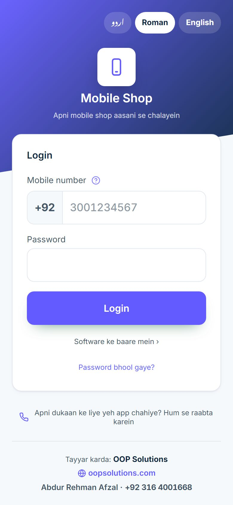
Tasveer 1: Login page
Password se login
Upar apni zabaan chunein: اردو, Roman ya English.
Mobile number mein +92 pehle se likha hai. Baqi number pehle 0 ke baghair likhein. 0300 1234567 ke liye 3001234567 likhein.
Apna Password likhein.
Login dabayein.
Password bhool gaye
Login form ke neeche Password bhool gaye? dabayein.
Check karein ke aap ka mobile number sahi hai.
WhatsApp par code bhejein dabayein. Us number par 6 hindson ka code aata hai.
Code likhein aur Code ki tasdeeq dabayein.
Naya password chunein. Aap login ho jate hain.
Code 10 minute chalta hai. Agar WhatsApp na ho to iske bajaye darkhwast bhejein. Staff ke bande ki darkhwast dukaan ke maalik ke paas jati hai, jo Mazeed → Staff → woh banda → Naya password mein naya password rakhta hai. Maalik ki apni darkhwast software provider ke paas jati hai.
Jaldi PIN
Apne phone par PIN password se tez hai.
Ek dafa password se login karein.
Mazeed → Jaldi PIN banayein dabayein.
Apna password likhein, phir 4 se 6 hindson ka PIN, misaal ke taur par 4821.
Mehfooz karein dabayein.
Agli dafa yeh phone aap ke naam ke saath Apna PIN likhein wali screen kholta hai. Hindse dabayein aur aap andar.
PIN bhool gaye? Password lagayein aap ko password wali screen par wapas le jata hai.
Doosra account lagayein se staff ka koi aur banda usi phone par login kar sakta hai.
Fingerprint login
Ek dafa password se login karein.
Mazeed → Fingerprint login → Is phone ke liye on karein dabayein.
Fingerprint sensor ko chhooein.
Agli dafa login page par Fingerprint se login nazar aata hai. Ek touch aur aap andar. Laptop par yeh us device ka face ya Windows Hello istemal kar sakta hai. Aap ka fingerprint kabhi phone se bahar nahi jata.
Maalik isay hamesha istemal kar sakta hai. Staff isay tab hi istemal kar sakta hai jab maalik Settings mein on kare ke staff fingerprint se login kar sakta hai.
Usi card mein har woh phone likha hai jo is tarah login kar sakta hai. Hatayein usay foran rok deta hai.
Logout
Upar daayein kone mein apna Profile button (aap ke naam ke pehle huroof) dabayein, phir Logout. LogoutMazeed ke bilkul neeche bhi hai. Jis phone ko doosre log bhi istemal karte hain us par hamesha logout karein.
4. Home screen, Mazeed menu aur "?" madad
Home screen
Login ke baad aap ko home screen nazar aati hai. Jo kaam aap sab se zyada karte hain woh yahin se shuru hote hain.
Tasveer 2: Home screen
Upar se neeche tak:
Hissa
Kya karta hai
Header
Dukaan ka naam, phir English (zabaan), Paighaam, Mazeed aur aap ka Profile button (aap ke naam ke pehle huroof).
Salaam
"Subah bakhair", "Assalam-o-Alaikum" ya "Shaam bakhair" aap ke naam ke saath, aur Aaj aap ki dukaan ka haal.
Search box
IMEI, phone ka model ya kisi bande ka naam likhein aur Dhoondein dabayein. Scan camera se barcode parhta hai.
Bechein
Phone bechein, cash ya udhaar (chapter 8).
Stock daalein
Aap ne naya ya purana phone khareeda (chapter 6).
Baqi kaam
Udhaar, Stock, Marammat, Wapsi, Bill aur Kharcha.
Ek nazar mein
Aaj, Kal, Hafta, Is mahine ya Tareekh se tak chunein. Card dikhate hain Bikri (aur bike hue phone), Munafa, Cash aur bank, Mujhe lene hain, Mujhe dene hain, Stock mein phone, Kharche aur Pichle 7 din ka chart. Poore hisaab ke liye Sab dekhein dabayein.
Tawajjo chahiye
Woh cheezen jo aap ka intezar kar rahi hain, misaal ke taur par "2 phone: shanakhti card check baqi" ya "1 marammat job khuli". Line par dabayein aur seedha wahan pohnchein.
Neeche ek patti hai jis mein Home, Stock, Udhaar, Hisaab aur Mazeed hain. Yeh har screen par hai, is liye aap hamesha wapas aa sakte hain.
Profile menu
Upar daayein kone mein apna Profile button dabayein (us par aap ke naam ke pehle huroof hote hain). Ek chhota menu khulta hai jis mein aap ka naam, mobile number, ohda (maslan Maalik) aur woh dukaan hoti hai jis mein aap kaam kar rahe hain. Us ke neeche:
Meri profile: Mazeed kholta hai, jahan aap ki zabaan, jaldi PIN aur fingerprint login hai.
Dukaan ki settings (sirf maalik).
Appearance: app kaisi dikhe (baab 5).
Dark / Light (phone par): ek tap mein screen ka rang badlein. Laptop par yeh button header mein hai.
Logout.
Band karne ke liye menu se bahar dabayein, ya computer par Esc dabayein.
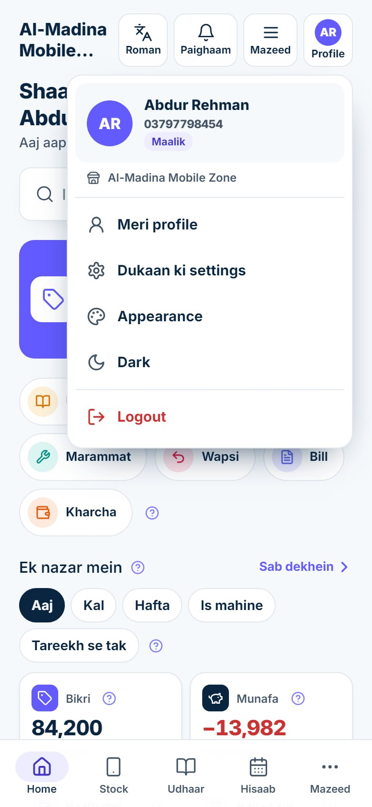
Tasveer 3: Profile menu
Kahin se bhi scan
Agar aap ke paas USB ya Bluetooth barcode scanner hai to laga dein. Koi setting nahi chahiye. Home screen par phone ka sticker scan karein aur us ka page khul jata hai. Koi anjaan code scan karein to app usay daalne ki pesh-kash karti hai. Phone ka keyboard Urdu mein ho tab bhi scanner chalta hai.
Mazeed menu
App ke saare hisse groups mein dekhne ke liye Mazeed (upar dayein, ya neeche) dabayein.
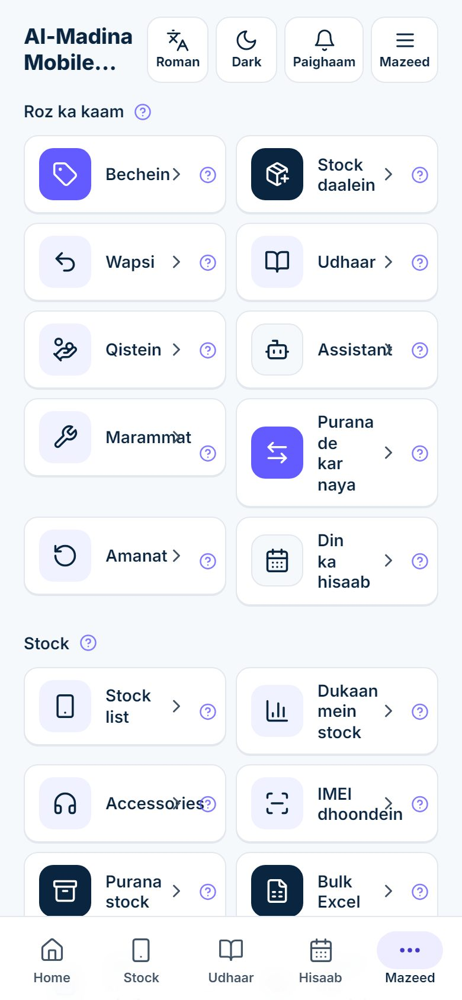
Tasveer 4: Mazeed menu
Roz ka kaam: Bechein, Stock daalein, Wapsi, Udhaar, Qistein, Assistant, Marammat, Purana de kar naya, Amanat, Din ka hisaab.
Aap ko sirf wohi nazar aata hai jis ki aap ke role mein ijazat hai. Misaal ke taur par salesman ko Report nazar nahi aati.
Har field aur card par "?" madad
Dukaandaaron ne bataya ke software ke kuch alfaaz samajhna mushkil hota hai. Is liye har screen ke unwaan, har tab, har card aur har field ke saath ek chhota ? hai.
Jo cheez samajh na aaye us ke saath wale ? par dabayein.
Neeche se ek sheet khulti hai jis ka unwaan hai Yeh kya hai?
Is mein cheez ka naam, woh kya hai is par ek do saaf jumle, aur Misaal ka dabba hota hai jis mein rupay mein dukaan ka asal case hota hai.
Wapas jane ke liye Band karein dabayein. Screen par kuch nahi badalta.
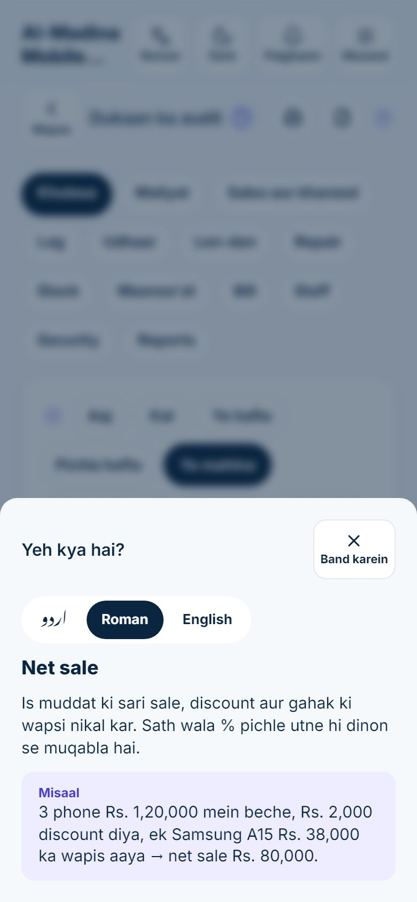
Tasveer 5: Apni zabaan ke switch wali "?" madad sheet
Madad sheet ka upar apna zabaan ka switch hai: اردو, Roman aur English. Yeh sirf wazahat badalta hai, app nahi. Is tarah salesman app English mein rakh kar madad Urdu mein parh sakta hai, ya ulta. App us ki aakhri pasand yaad rakhti hai.
Misaal: Aap dukaan ka audit dekh rahe hain aur pata nahi ke Khalis bikri ka matlab kya hai. Us ka ? dabayein. Likha aata hai: muddat ki saari bikri, riayat aur gahak ki wapsi ke baad. Misaal: 3 phone Rs. 1,20,000 mein beche, Rs. 2,000 riayat di, ek Samsung A15 Rs. 38,000 ka wapas aaya, to khalis bikri Rs. 80,000 hai.
5. Zabaan, theme aur andaaz
Zabaan
App ek waqt mein ek zabaan dikhati hai. Urdu mode mein sab Urdu hai, dayein se bayein likha hua. English mode mein sab English hai. Hindse har zabaan mein hamesha 0 se 9 likhe jate hain.
Header mein zabaan ka button dabayein (yeh maujooda zabaan dikhata hai, misaal ke taur par English).
اردو, Roman Urdu ya English chunein.
Aap isay Mazeed → Zubaan mein bhi badal sakte hain. Har banda apne phone par apni zabaan chun sakta hai.
WhatsApp paighaam dukaan ki zabaan mein jate hain, jo maalik Dukaan ki settings mein rakhta hai. Print aur download hone wale kaghzaat (raseed, bill, iqrar nama, job sheet, report) ke liye print aur share ke button ke bilkul upar Document ki zabaan ka switch hai: English ya اردو. Shuru mein English chuni hoti hai; Urdu kaghaz ke liye اردو dabayein. Aap ki pasand app band karne tak rehti hai.
Appearance (theme, design, rang, likhai ka size)
AppearanceProfile menu se, Mazeed se ya dashboard ke button se kholein. Har tabdeeli foran nazar aati hai aur sirf isi phone ya computer par mehfooz rehti hai. Har salesman apna phone apni pasand se rakh sakta hai; aap ka data kabhi nahi badalta.
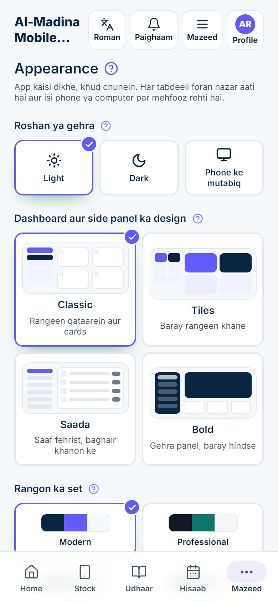
Tasveer 6: Appearance ka page
Hissa
Kya karta hai
Roshan ya gehra
Light, Dark ya Phone ke mutabiq (phone ki apni setting ke saath chalta hai). Profile menu mein Dark / Light yahi kaam ek tap mein karta hai.
Dashboard aur side panel ka design
Classic (rangeen qataarein aur cards, pehle jaisa), Tiles (baray rangeen khane), Saada (saaf fehrist, baghair khanon ke) ya Bold (gehra side panel aur baray hindse). Laptop par yeh side panel bhi badalta hai.
Rangon ka set
Poori app ke rang: Modern, Professional, Navy ya Rangeen.
Bunyadi rang
Buttons aur numayan cheezon ka rang: Pehle wala, Sabz, Neela, Jamni, Surkh, Narinji ya Feroza.
Likhai ka size
Aam, Bara ya Bohat bara. Kamzor nazar walon ke liye acha hai.
Konay
Buttons aur cards kitne gol hon: Pehle wale, Gol, Halke gol ya Seedhe.
Hindson ka font
Raqamon ka font: Pehle wala, Inter, Manrope ya Phone wala.
Pehle jaisa karein
Is phone par upar ki sab tabdeeliyan wapas.
6. Stock daalein (khareed)
Jab bhi koi phone, tablet, ghari ya accessory dukaan mein aaye to Stock daalein istemal karein. Is ke teen steps hain, jo upar patti mein nazar aate hain: 1 Kis se khareeda? → 2 Kaun sa phone, kitne ka? → 3 Ho gaya.
Yeh kyun zaroori hai: har daala gaya phone pehle din se apna page aur apni history paata hai. Baad mein aap dekh sakte hain ke aap ne usay kis se khareeda, kitne diye, kis ko becha aur us par kitna kamaya.
Step 1: Phone kahan se aa raha hai?
Home par Stock daalein dabayein. Pehli screen poochti hai Phone kahan se aa raha hai? aur do bade card dikhati hai.
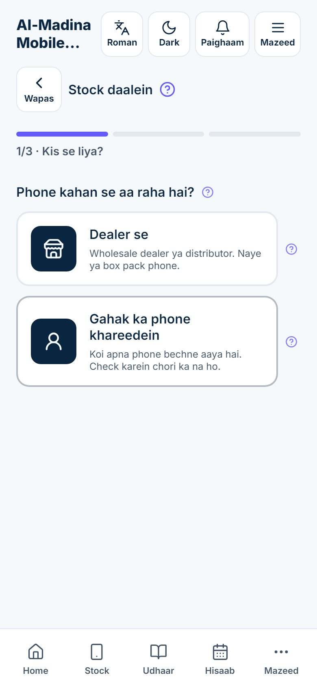
Tasveer 7: Stock daalein, step 1: phone kahan se aa raha hai?
Dealer se: wholesaler ya distributor. Aam taur par naye ya box-pack phone.
Gahak ka phone khareedein: koi apna phone bechne aaya hai. App aap ki madad karegi ke check karein yeh chori ka nahi.
Dealer chunein mein kuch huroof (Rehman) likhein aur Rehman Traders dabayein. Naya dealer? + button dabayein aur us ka naam aur mobile number bharein.
Aage dabayein.
Phone daalein dabayein. Phone daalein ka form khulta hai.
Yeh kya hai? ke neeche Mobile chuna rehne dein.
IMEI mein 15 hindse likhein ya dabbe ka barcode parhne ke liye Scan dabayein. Dabbe ke neeche app batati hai Naya IMEI, pehle nahi aaya ya Yeh IMEI pehle aap ki dukaan mein aa chuka hai.
Dual-SIM phone ke liye IMEI 2 bhi isi tarah bharein.
Apple iPhone ke liye form Region code aur SIM bhi poochta hai. Region code Settings → General → About → Model Number ke aakhir mein hota hai (MLPF3LL/A → LL/A dabayein). SIM ke liye Physical + eSIM, Double eSIM (Americi iPhone 14 aur baad walon mein SIM tray nahi hoti), Double physical SIM ya Sirf physical SIM dabayein. List mein nahi? Naya daba kar likh dein; agli dafa app khud dikhaye gi. Used ya open box iPhone ke liye Battery cycle count bhi poocha jata hai (iPhone 15 aur naye: Settings → General → About; purane mein khali chhor dein). Yeh sab stock list aur price sticker par nazar aate hain.
SIM lock (network) (har phone, iPhone ho ya Android): SIM lock nahi ya SIM lock hai dabayein; lock ho to network (AT&T, T-Mobile, Verizon …) dabayein ya likhein. Yeh phone ke page, save karne se pehle ki jaanch aur stock list ke column mein aata hai. Yeh sirf maloomat hai — SIM lock phone bhi becha ja sakta hai. Check na kiya ho to khali chhor dein. Jo phone pehle se stock mein hai us ka SIM lock (ya durust PTA) us ke page par Edit details se lagayein. PTA mein PTA approved, Non-PTA, JV aur CP ID hain.
Haalat: Box pack dabayein. Baqi options Open box, Used aur Patch wala hain (patch wala Patch ki tafseel maangta hai).
PTA status: PTA approved dabayein. Non-PTA aur JV ke liye app SIM time (mahine) bhi poochti hai; yeh optional hai, maloom na ho to khali chhor dein.
Khareed qeemat: 92000 likhein, jo aap ne diye.
Bechne ki qeemat (optional): 100000 likhein, jitne mein aap bechna chahte hain. Abhi tay nahi? Khali chhor dein aur baad mein phone ke page se likh dein.
Open box, Used ya Patch wala phone ke liye form Battery health % bhi poochta hai (iPhone: Settings → Battery → Battery Health). Phone na dikhaye to khali chhor dein.
Warranty (mahine): dealer ka phone aam taur par 12 se shuru hota hai.
Phone ke saath kya kya aaya? Box, Charger, Cable, Earphones aur AirPods ke liye Nahi, Mil gaya ya Baad mein chunein. Yahan: Box Mil gaya, Cable Mil gaya, Charger Baad mein, aur Kab dega? mein tareekh chunein.
Daalein dabayein. Phone list mein aa jata hai. Agle phone ke liye dobara Phone daalein dabayein.
Kuch bhool gaye, jaise rang? List mein us phone par Badlein dabayein, badlein aur Mehfooz karein dabayein. Wapas (ya phone ka apna back button) aap ko pehle qadam par le jata hai aur sab kuch bhara rehta hai; Aage dabayein to aap ke phone wapas aa jate hain.
Yahi Bechein, Exchange aur Wapsi mein bhi hota hai: Wapas, phone ka back button ya pichle qadam ki patti par tap ek qadam peeche le jata hai aur sab kuch rehta hai. Neeche se khulne wala form (jaise Phone daalein) kuch bharne ke baad ghalti se bahar tap karne par band nahi hota: chhorna ho to Band karein dabayein.
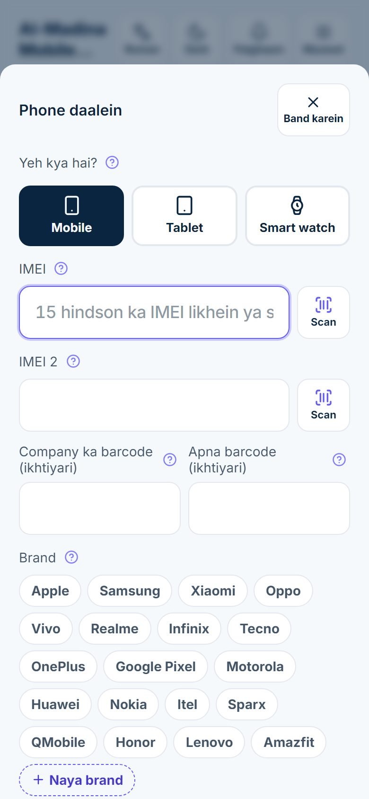
Tasveer 8: Phone daalein ka form
Jab saare phone list mein aa jayein to isi screen par paison wala hissa mukammal karein:
Paise kaise diye?Cash dabayein (ya koi aur tareeqa, neeche dekhein).
Kab khareeda?Abhi rehne dein, ya agar kal ki khareed daal rahe hain to Pehle daba kar tareekh aur waqt chunein.
Agar extra dabbe chahiyein to Riayat, bill number dabayein (neeche "Reference / parchi number" dekhein).
Kul check karein: Rs. 92,000.
Stock mein daalein dabayein.
Save karne se pehle dekhein khulta hai: bechne wala, har phone us ke IMEI, memory, rang, haalat, PTA, battery, khareed aur farokht ki qeemat ke saath, kul raqam aur adaigi ka tareeqa. Kuch ghalat ho to us phone par Badlein dabayein. Sab durust ho to Main ne dekh liya: saari tafseel durust hai par nishan lagayein aur Stock mein daalein dabayein.
Aap ko Khareedari mehfooz, raqam aur khareed ka number nazar aata hai, misaal ke taur par PUR-000001. Yahan se aap barcode wale qeemat ke sticker print karne ke liye In phones ke sticker print karein bhi daba sakte hain.
Khareedte waqt rate ka mashwara
Model chunte hi Bechne ki qeemat ke neeche ek hara dabba us model ki aap ki apni history dikhata hai: aakhri dafa kab aur kitne ka becha, chhe mahine mein kitne beche aur kis range mein, aur abhi stock mein kitne hain. Mashwara di gayi qeemat lene ke liye Use … dabayein. Yeh sirf aap ki apni dukaan ki bikri parhta hai.
Paise kaise diye?
Paise kaise diye? ke neeche ek bada button dabayein.
Button
Kab istemal karein
Kya poochta hai
Cash
Galle se paise
Aur kuch nahi
Online
Bank app, IBFT, Raast, Easypaisa, JazzCash, SadaPay
Kaun sa bank ya wallet (ya Koi aur bank / wallet), aur chahein to transaction ID
Cheque
Aap ne cheque diya
Bank, cheque number aur cheque ki tareekh
Udhaar
Aap baad mein denge
Abhi kitne diye, agar diye
Har tareeqe ka apna account hota hai, is liye din ka hisaab dikhata hai ke cash mein kitna gaya aur bank se kitna. Agar aap ne Mazeed → Cash aur bank mein account banaye hain (misaal ke taur par "Meezan Bank" ya "Shop Easypaisa"), to aap theek wahi account chun sakte hain.
Abhi dene hain mein 90,000 aata hai. Yeh Rehman Traders ke khate mein Mujhe dene hain ke neeche jata hai.
Agar us ne koi tareekh maani hai to Supplier ko adaigi tak (ikhtiyari) bharein. Us tareekh ke baad audit is udhaar ko der wala dikhata hai.
Stock mein daalein dabayein.
Baad mein jab aap usay paise dein to Udhaar → Paise diye istemal karein aur Rehman Traders chunein.
Reference / parchi number aur dealer ka bill number
Dealer ki khareed par yeh ikhtiyari dabbe dekhne ke liye Riayat, bill number dabayein:
Riayat: jo paise dealer ne poore bill se kam kiye.
Reference / parchi number: koi bhi number ya lafz jo baad mein yeh khareed dhoondne mein madad kare, jaise dealer ki parchi ya lot number, misaal ke taur par Slip 4471 ya Hall Road lot 3. Yeh sirf dhoondne ke liye rakha jata hai.
Supplier bill no.: dealer ke apne bill par chhapa number, misaal ke taur par RT-2026-118, taa ke kabhi sawal ho to aap us ke kaghaz se mila sakein.
Kiraya / loading (Rs.) aur Kiraye ka note: transport ya loading ka kharcha. Yeh lines par baant kar cheez ki qeemat mein jor diya jata hai, taa ke aap ka munafa sahi rahe.
Koi brand, model, memory ya rang nahi mil raha
Agar Phone daalein form mein na mile:
+ New brand, + New model, + New size ya + New colour dabayein.
Naam likhein, misaal ke taur par brand Dcode, model Bold 3.
Mehfooz karein dabayein. Yeh foran chun liya jata hai aur agli dafa list mein hoga.
Apni entries ka naam baad mein Mazeed → Brand aur model mein badal ya delete kar sakte hain. App mein pehle se maujood, aur kisi phone par istemal ho chuki entries delete nahi ho saktin.
Gahak ka phone khareedna
Misaal:Ali Raza apna purana Infinix Hot 40 128GB bechne aata hai. Aap Rs. 28,000 par raazi hote hain. Rs. 20,000 abhi dete hain aur Rs. 8,000 kal. Aap isay Rs. 34,000 mein bechenge.
Stock daalein → Gahak ka phone khareedein.
Phone kaun bech raha hai? ke neeche bande ko naam, phone ya CNIC se dhoondein. Agar naya hai to + (Naya banda) dabayein.
Naam (Ali Raza) aur Mobile number (+92 pakka hai; 3005550606 likhein) bharein.
CNIC bharein: 13 hindse 3740512345673 likhein aur yeh 37405-1234567-3 nazar aata hai. Ya app se parhwane ke liye CNIC scan (aage ki tasweer) dabayein (chapter 7 dekhein).
Mehfooz karein dabayein, phir Aage.
Phone daalein dabayein aur IMEI, Infinix, Hot 40, 128GB, haalat Used, Khareed qeemat28000, Bechne ki qeemat34000 bharein. Daalein dabayein.
Paise kaise diye? ke neeche Udhaar dabayein aur Abhi kitne diye (agar diye) mein 20000 likhein. Abhi dene hain mein 8,000 aata hai, jo Ali Raza ke khate mein jata hai. Abhi di gayi raqam kaise di? mein Cash, Online (bank ya wallet aur TID) ya Cheque (bank aur cheque number) chunein.
Shanakhti card check ke neeche Abhi ya baad mein check (aam choice) ya Chhorein, main isay jaanta hoon chunein.
Stock mein daalein dabayein.
Ho gaya wali screen kehti hai Check karein phone chori ka na ho, saath Abhi shanakhti card check karein, Chhorein, main isay jaanta hoon aur Iqrar nama print karein. Check ke liye chapter 7 par jayein.
Tablet aur smart watch
Tablet aur smart watch bhi phone ki tarah ek ek kar ke track hoti hain, har ek ka apna page aur history.
Phone daalein mein, Yeh kya hai? ke neeche Mobile ki jagah Tablet ya Smart watch dabayein.
Sirf woh brand nazar aate hain jo yeh qism banate hain, misaal ke taur par tablet ke liye Apple, Samsung aur Lenovo, ya ghari ke liye Apple, Samsung, Huawei aur Amazfit.
Us qism ke sawal bharein (neeche table dekhein) aur Daalein dabayein.
Mobile
Tablet
Smart watch
SIM
Hamesha
Sirf Wi-Fi ya Wi-Fi + SIM
SIM nahi (GPS) ya SIM wali (Cellular)
IMEI
IMEI aur IMEI 2
Sirf SIM ke saath
Sirf SIM ke saath
Serial number
Zaroorat nahi
SIM ke baghair zaroori
SIM ke baghair zaroori
PTA
PTA approved, Non-PTA, JV
Sirf SIM ke saath, JV nahi
Sirf SIM ke saath, JV nahi
Size
Memory
Memory
Dial ka size (38 se 49 mm)
Battery health %
Open box, used ya patch wala ke liye
Open box ya used ke liye
Open box ya used ke liye
Saath kya aaya
Box, charger, cable, earphone, AirPods
Box, charger, cable, pen / stylus, keyboard cover
Box, charger, extra strap
SIM ke baghair IMEI nahi hota, is liye Serial number (dabbe par, ya device mein Settings → About mein) dhoondne ke liye istemal hota hai aur IMEI ki tarah dikhaya jata hai.
Purane device ka lock check
Purana tablet ya ghari pichle maalik ke account se locked ho sakti hai. Agar ho to agla khareedne wala usay istemal nahi kar sakta. Is liye jab aap purana unit khareedte hain to form mein Lock check (used device) ka dabba aata hai:
iCloud / activation lock (Apple ka Find My).
Google / FRP lock (reset ke baad Android aakhri Google account maangta hai).
Samsung / account lock (company ka apna account).
Paired-device lock (ghari jo abhi bhi pichle maalik ke phone se judi hai).
Har ek ke liye Clear, Abhi laga hai ya N/A dabayein, phir Lock check ho gaya aur hat gaya par tick karein.
Tablet aur smart watch ko yeh check hamesha chahiye. Purane mobile ko tab chahiye jab maalik ne device settings mein Used mobile ke liye bhi lock check lazmi on kiya ho.
Jis unit par koi lock Abhi laga hai ho woh khareedi nahi ja sakti: app kehti hai "Abhi lock laga hai — hatne tak na khareedein". Bechne wale se kahein ke aap ke saamne hataye, phir Clear mark karein.
Misaal: Gahak purana iPad 9th gen Wi-Fi laata hai. Aap us ki Settings kholte hain aur dekhte hain ke Find My abhi on hai. iCloud / activation lock ko Abhi laga hai mark karein. App aap ko khareedne nahi degi. Gahak apni Apple ID se sign out karta hai; ab aap Clear mark karein, dabbe par tick karein aur aage barhein.
Khareed mein accessories
Charger, cable, cover, glass, earphone, power bank aur aam ghariyan (Casio, Naviforce) gin kar rakhi jati hain. IMEI nahi hota, sirf yeh ke aap ke paas kitni hain.
Cheez ko Naam ya code se dhoondein aur dabayein. List mein nahi? Nayi cheez (list mein nahi) dabayein, Naam likhein, Yeh kya hai? chunein (Charger, Cable, Ghari waghera, ya apni qism ke liye Nayi qism, misaal ke taur par Ring light), Bechne ki qeemat (ek ki) likhein aur Save kar ke daalein dabayein.
Chunein ke dealer ne kis tarah becha: Piece, Darjan, Dabba ya Carton.
Tadaad aur Fi unit qeemat likhein (ek piece ki qeemat, ya agar woh chuna to ek darjan ya dabbe ki).
Khareed aam tarah mukammal karein aur Stock mein daalein dabayein.
Stock hamesha piece mein rakha jata hai. Misaal: aap 5 darjan Type-C cable Rs. 1,200 fi darjan par khareedte hain. Stock mein 60 pieceRs. 100 fi piece par nazar aate hain, aur line Rs. 6,000 ki banti hai.
Dealer ki khareed par aap + Charger, cover ya aur saamaan daba kar ek khuli line (naam, tadaad aur qeemat) bhi likh sakte hain jo stock ki cheez nahi.
Khareedte waqt scan
Camera se dabba parhne ke liye IMEI ke saath Scan dabayein. Camera pehle IMEI dhoondta hai, chahe dabbe par kai barcode hon.
USB ya Bluetooth scanner ke saath dabba scan karein: pehla scan IMEI bharta hai, agla IMEI 2, phir Company ka barcode (ikhtiyari).
Apna barcode (ikhtiyari) us sticker code ke liye hai jo aap pehle se istemal karte hain. Khali chhorein to save karte waqt app phone ko apna barcode de deti hai. Woh barcode kabhi nahi badalta.
Dukaan mein pehle se maujood purana stock
Jab aap app shuru karte hain to aap ke shelf par pehle se rakhe phones ka na koi khareed ka bill hota hai na koi paise dene hote hain. Unhein purane stock ke taur par daalein.
Mazeed → Purana stock.
Phone daalein dabayein aur upar ki tarah form bharein, jo qeemat aap ne di thi woh Khareed qeemat mein.
Daalein dabayein. Har phone ke liye dohrayein.
Mehfooz karein dabayein. Aap ko Khareedari mehfooz nazar aata hai.
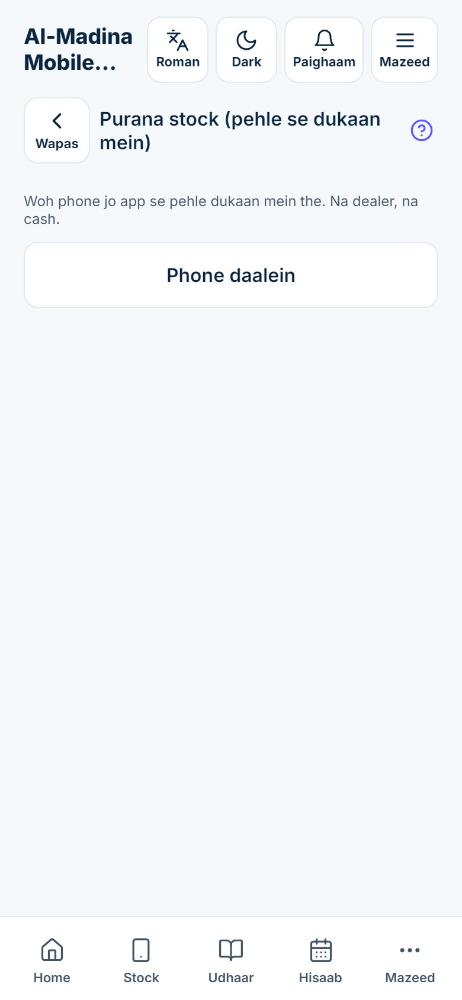
Tasveer 9: Purana stock (pehle se dukaan mein)
Galle se koi paisa nahi jata. Purana stock sirf aap ka stock aur us ki qeemat poori karta hai. Misaal: Rs. 30,000, Rs. 45,000 aur Rs. 60,000 ke teen purane phone aap ke stock ki qeemat mein Rs. 1,35,000 jor dete hain.
Agar koi purane stock ka phone ghalti se daal diya gaya ho to usay stock list se kholein aur wajah likh kar Purane stock ki entry hatayein dabayein.
7. Purane phone ki jaanch (ID check aur dastakhat shuda iqrar nama)
Kisi bande se khareede gaye har purane phone, tablet ya ghari ke liye yeh karein. Yeh aap ko chori ka phone khareedne se bachata hai, aur agar kabhi police poochay to bechne wale ki pehchan, tasweerein aur dastakhat aap ke paas ek jagah hote hain.
Check kholna
Tasdeeq ki screen aap teen tareeqon se khol sakte hain:
Khareedne ke foran baad: ho gaya wali screen par Abhi shanakhti card check karein.
Phone ke page se: Shanakhti card check.
Home se: Tawajjo chahiye → phone: shanakhti card check baqi.
Tasveer 10: Tasdeeq ki screen
Upar aap ko phone, us ka IMEI aur us ka status chip nazar aata hai: ID check baqi, ID checked ya Chori? Na bechein.
Qadam ba qadam
Misaal: Aap ne Usman Tariq se purana Xiaomi Redmi Note 13Rs. 55,000 mein khareeda.
Bechne wala: jis se khareeda woh pehle se bhara hai. Naam, phone ya CNIC se dhoond kar badal sakte hain.
CNIC number: 13 hindse check karein.
Har tasweer ke dabbe par dabayein aur camera se tasweer lein: CNIC aage, CNIC peeche, Bechne wale ki tasweer aur Mobile ki tasweer. Angootha (agar chahein): bechne wala siyahi laga angootha (stamp pad) kaghaz par ya chhape hue declaration ke Angoothe ka nishan wale khane mein lagaye; us ki tasweer lein. Yeh tasdeeq ke saath rehti hai aur declaration ke khane mein chhapti hai. Is ke baghair bhi tasdeeq mukammal hoti hai. Yeh record hai, NADRA ka biometric match nahi (us ke liye licence wala fingerprint scanner chahiye).
eGadget (Punjab Police): eGadget portal kholein dabayein, wahan IMEI check karein, wapas aayein aur Saaf, Report shuda ya Check nahi kiya chunein. Agar portal de to Reference number likhein.
PTA check kiya (SMS 8484): IMEI PTA ko bhejne ke liye SMS 8484 dabayein, phir dabbe par tick karein aur PTA nateeja chunein.
Bechne wale ne iqrar nama sign kiya: bechne wala screen par sign karta hai (neeche dekhein).
Phone ki haalat ke note (ikhtiyari), misaal ke taur par peeche halki si kharaash, screen original.
Mehfooz karein dabayein.
Neeche Nateeja card status aur ek Abhi baqi line dikhata hai jis mein bilkul likha hota hai ke kya abhi nahi hua, taa ke aap ko kabhi andaza na lagana pare.
Likhne ki bajaye CNIC scan karein
CNIC scan (aage ki tasweer) dabayein. Yeh Naya banda form par bhi hai.
Achhi roshni mein card ke aage wale hisse ki saaf tasweer lein.
Kuch second mein naam aur CNIC number bhar jate hain, aur tasweer CNIC aage ke taur par rakh li jati hai. Walid ka naam, tareekh paidaish aur card ki expiry note mein chali jati hai.
Save karne se pehle har bhari hui field check karein aur ghalat parha gaya koi bhi hindsa theek karein.
Agar card expire ho chuka ho to warning aati hai. Urdu pata nahi parha jata; zaroorat ho to khud likhein.
Bechne wala screen par sign karta hai
Bechne wala apne haath se tasdeeq karta hai ke phone us ka hai aur chori ka nahi.
Bechne wale ne iqrar nama sign kiya tak scroll karein.
Phone bechne wale ko dein. Bechne wala yahan dastakhat kare (ungli ya mouse se) ke neeche woh nuqton wale dabbe ke andar ungli se sign karta hai.
Pasand nahi aaya? Mitayein dabayein aur woh dobara sign kare.
Dastakhat save karein dabayein. Iqrar nama sign shuda mark ho jata hai (Bechne wale ne dastakhat kar diye).
Screen ke neeche Mehfooz karein dabayein.
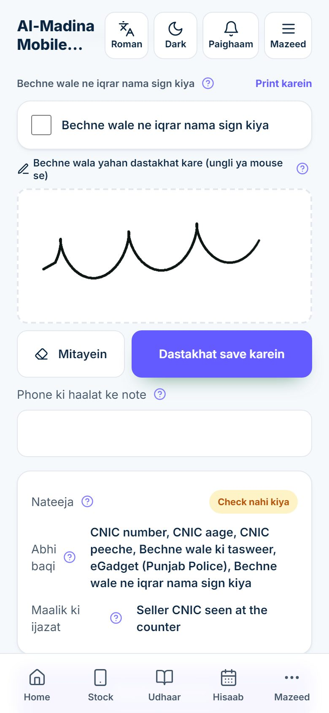
Tasveer 11: Bechne wala screen par sign karta hai
Dastakhat ID check ke saath, us ki CNIC tasweer aur phone ke IMEI ke paas save hote hain. Baad mein badalne ke liye Dobara dastakhat dabayein.
Print hua iqrar nama
Bechne wale ne iqrar nama sign kiya ke saath Print dabayein (ya save karne ke baad Iqrar nama print karein). Iqrar nama us zabaan mein print hota hai jo aap Document ki zabaan ke neeche chunte hain (English ya Urdu). Is mein dukaan, bechne wale ka naam aur CNIC, phone aur us ka IMEI, tareekh, aur line ke upar us ke dastakhat hote hain. Aap isay PDF ke taur par download ya WhatsApp par share bhi kar sakte hain.
Save karne ke baad
Nateeje ki screen batati hai ke aap kahan khade hain:
ID check mukammal. Ye phone becha ja sakta hai. saath Ye phone abhi bechein ka button.
Save ho gaya, lekin check abhi mukammal nahi. Abhi baqi: … Baqi kaam hone tak phone ID check baqi rehta hai.
Chori ka shuba. Isay na bechein; sirf malik ijazat de sakta hai. Phone par Chori? Na bechein nazar aata hai.
Wahan se aap Phone par wapas, Iqrar nama print karein ya Kuch badalna hai par ja sakte hain.
Maalik ki ijazat
Kabhi kaghzaat kisi achhi wajah se nahi hote, misaal ke taur par kisi qareebi rishtedaar se khareeda gaya phone. Maalik ya manager Maalik ki ijazat mein Ijazat ki wajah (kam az kam 5 huroof) bhar sakta hai, misaal ke taur par 3 saal se pakka gahak, CNIC dekha. Phir check mukammal gina jata hai. Wajah aur karne wale ka naam phone ki history mein rehte hain.
Baqi check wala phone
Jis phone ka check nahi hua woh ghalti se bika nahi ja sakta. Bikri par app kehti hai "Is phone ka shanakhti card check baqi hai" aur Bikri mukammal karein tab tak grey rehta hai jab tak aap yeh na chunein:
Abhi check karein: Tasdeeq ki screen kholta hai.
Chhor kar bechein (main jaanta hoon): jis ko bechne ki ijazat hai woh yeh kar sakta hai. Aap ka naam phone ki history mein save hota hai aur maalik audit mein dekhta hai.
Chori? Na bechein wala phone sirf maalik likhi hui wajah ke saath bech sakta hai. Jis tablet ya ghari par lock Abhi laga hai ho woh lock clear hone tak bilkul nahi bik sakti.
8. Farokht (bechna)
Bechne ke teen steps hain, jo upar nazar aate hain: 1 Kaun sa phone? → 2 Kitne ka? → 3 Ho gaya. Kul app khud nikalti hai; aap sirf woh qeemat likhte hain jis par baat tay hui.
Step 1: Phone chunein
Home par Bechein dabayein.
Phone dhoondein: search box mein IMEI ka hissa, model, brand ya naam likhein, ya dabba ya dukaan ka sticker parhne ke liye Scan dabayein.
List chhoti karne ke liye Sab, Mobile, Tablet aur Smart watch ke chip istemal karein.
Jo phone bech rahe hain us par dabayein ke neeche phone dabayein.
Tasveer 12: Bechein, step 1: phone chunein
Har line mein model, IMEI (ya ghari ka serial), haalat, PTA chip (misaal ke taur par JV), check ka status (ID checked ya ID check baqi), bechne ki qeemat aur Stock mein hota hai.
Cash bikri
Misaal: Aap Vivo Y28 128GBRs. 36,000 cash mein 1 mahine ki warranty ke saath bechte hain. Charger abhi saath jata hai; earphone ka agle hafte ka waada hai.
Phone chunein. Step 2 khulta hai.
Kitne mein becha (Rs) mein bechne ki qeemat pehle se bhari hai. Agar doosri qeemat tay hui to 36000 kar dein.
Phone ke saath kya kya de rahe hain? Har cheez ke liye Nahi, De diya ya Baad mein dabayein. Yahan: Charger De diya, Earphones Baad mein, Kab denge? mein tareekh ke saath. Jo cheezen phone ke saath aayi thin woh De diya se shuru hoti hain.
Bill par aur chahiye? + Ek aur phone, Accessory / ghari (stock se gini jane wali cheez) ya + Charger, cover ya aur saamaan (khuli line, stock nahi badalta) dabayein. Discount aur customer riayat ka dabba aur ikhtiyari gahak kholta hai.
Paise kaise mile?Cash dabayein.
Kul check karein aur Bikri mukammal karein dabayein.
Bechne se pehle check karein ki screen har phone ki biki qeemat us ki bechne ki qeemat ke muqable mein dikhati hai (aur maalik aur manager ke liye us ki khareed qeemat aur munafa). Tasdeeq karein aur bill banayein dabayein.
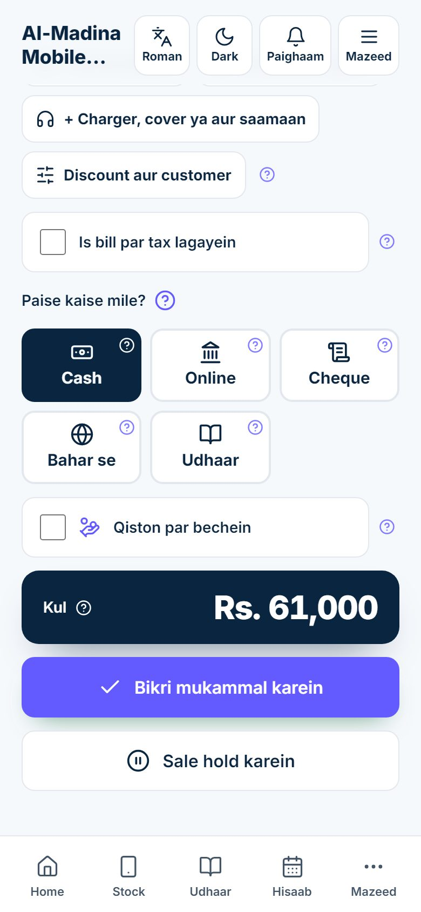
Tasveer 13: Step 2: phone ke saath kya ja raha hai, mazeed lines, aur tax
Ho gaya wali screen Bikri ho gayi, raqam aur bill number dikhati hai, misaal ke taur par INV-000018.
Kaun khareed raha hai? Har bikri yeh poochti hai. Customer naam, phone ya CNIC se talaash karein (ya naya banda + se). Sirf tab jab khareedar naam na dena chahe, Walk-in customer (naam ke baghair) par tick karein: khata nahi banta aur bill par "Walk-in customer" chhapta hai. Jab tak dono mein se ek na ho, Complete sale band rehta hai, taake ghalti se walk-in na ho.
Ghalti se walk-in ya ghalat customer? Owner ya manager: bill kholein (More → Sales, ya bike hue mobile ke page par Customer badlein), Customer ke naam karein (ya Customer badlein) dabayein, durust banda chunein, wajah likhein aur Save karein. Walk-in bill us ke khate mein khareeda aur ada shuda aata hai (kuch baqi nahi); ghalat bande wala bill baqi raqam ke saath jata hai. Cash nahi hilta; mobile ki history mein dono naam rehte hain. Agar baad mein is bill ki wusooli ho chuki ho ya kuch wapas, exchange ya qiston par ho chuka ho to nahi hota.
Udhaar bikri
Misaal:Imran AliRedmi Note 13Rs. 58,000 mein leta hai. Woh Rs. 20,000 abhi deta hai aur baqi 30 tareekh tak dene ka waada karta hai.
Phone chunein aur qeemat check karein.
Paise kaise mile? ke neeche Udhaar dabayein.
Udhaar kaun le raha hai?Imran dhoondein aur Imran Ali dabayein, ya naye bande ke liye + dabayein.
Abhi kitne mile (agar mile): 20000 likhein. Baqi udhaar mein 38,000 aata hai. Abhi di gayi raqam kaise di? mein Cash, Online (bank ya wallet aur TID) ya Cheque chunein. Raqam usi account mein jati hai aur bill par likhi aati hai.
Adaigi ka waada (ikhtiyari): 30 tareekh chunein. 31 se audit is udhaar ko der wala dikhata hai.
Bikri mukammal karein dabayein, phir Tasdeeq karein aur bill banayein.
Imran Ali ab Udhaar → Mujhe lene hain mein Rs. 38,000 ke saath nazar aata hai. Jab woh paise de to Udhaar → Paise mile istemal karein.
Paise lene ke tareeqe
Paise kaise mile? ke neeche ek bada button dabayein:
Button
Kab
Kya poochta hai
Cash
Haath mein paise
Aur kuch nahi
Online
Bank app, IBFT, Raast, Easypaisa, JazzCash, SadaPay
Kaun sa bank ya wallet (ya Koi aur bank / wallet), aur chahein to transaction ID
Cheque
Gahak cheque deta hai
Bank, cheque number aur cheque ki tareekh
Bahar se
Khareedne wale ka khandaan kisi aur mulk se paise bhejta hai
Currency, raqam, rate, bhejne wale ka naam, aur ikhtiyari Western Union / MoneyGram aur MTCN
Udhaar
Baad mein dena
Gahak, aur woh abhi kitne deta hai
Misaal (bahar se): Usman ka bhai Riyadh se Rs. 37,100 ke phone ke liye Western Union se 500 SAR bhejta hai. Bahar se dabayein, SAR chunein, 500 aur rate 74.20 likhein. App Rs. 37,100 dikhati hai. Bhejne wale ka naam likhein, Western Union dabayein aur bikri mukammal karein. Agar paise bill se kam hon to baqi gahak ke udhaar mein chala jata hai.
Raseed par likha hota hai ke paise kaise mile, misaal ke taur par Online · Meezan Bank · Ref TID778812, aur din ka hisaab dikhata hai ke har tareeqe se kitna aaya.
Bechne ki qeemat aur minimum qeemat
Har phone ki ek bechne ki qeemat (asking) hoti hai, jo khareedte waqt rakhi gayi. Bikri par asking Kitne mein bika mein bhar di jati hai. Yeh ek target hai; aap woh qeemat likhte hain jis par asal mein baat tay hui.
Agar aap asking se kam bechein to Bechne se pehle check karein ki screen ek laal line dikhati hai, misaal ke taur par Asking se Rs. 2,000 kam.
Agar market badal gayi ho to Tay qeemat badlein par tick karein, Nayi tay shuda qeemat aur Wajah likhein, misaal ke taur par Naya model aa gaya, rate Rs. 4,000 gir gaya. Yeh tabdeeli aap ke naam ke saath phone ki history mein likhi jati hai.
Accessory ki minimum qeemat ho sakti hai. Agar aap us se neeche jayein to line kehti hai Minimum qeemat se kam — manager chahiye.
Asking se neeche kaun ja sakta hai, yeh maalik ki marzi hai, Dukaan ki settings → Qeemat ke usool mein. Tay qeemat se kam bechna aur Tay qeemat badalna dono ke liye woh Koi bhi, Maalik / manager ya Maalik ke PIN se chunta hai. Maalik aur manager hamesha kar sakte hain.
Misaal: Asking Rs. 65,000 hai. Salesman Rs. 62,000 par baat tay karta hai. Dukaan ka qaida Maalik ke PIN se hai. Check wali screen par Maalik ka PIN ka dabba aata hai; maalik apna PIN likhta hai aur PIN ke saath tasdeeq dabata hai. Phone ki history mein asking se Rs. 3,000 kam, salesman ka naam aur maalik ki ijazat nazar aati hai.
Khareed qeemat se kam qeemat
Agar Kitne mein bika us se kam ho jo dukaan ne diya tha, to ek laal dabba kehta hai ke qeemat khareed qeemat se kam hai aur yeh nuqsan hai.
Maalik ya manager: ijazat dene ke liye Mujhe pata hai, nuqsan par bechein dabayein.
Salesman: bikri nahi hoti. Usay qeemat barhani hogi ya maalik ko bulana hoga.
Misaal: Rs. 50,000 ka khareeda, Rs. 47,000 likha. Yeh Rs. 3,000 ka nuqsan hai; sirf maalik ya manager isay pakka kar sakta hai.
Rate ka mashwara
Kitne mein bika ke neeche ek hara dabba is phone ka aap ka apna rate dikhata hai, misaal ke taur par Aakhri dafa Rs. 57,500 mein bika, 12-10-2026 ko, bikne mein kitne din lage, chhe mahine mein kitne beche aur range, aur abhi stock mein kitne hain. Mashwara di gayi qeemat lene ke liye Use … dabayein, jo aap ki haaliya bikri ka darmiyana rate hai, sau tak gol kiya hua. Maalik aur manager ko Aam taur par Rs. … mein khareeda bhi nazar aata hai.
Tax aur cheez ka GST
Har bikri par tax off hota hai jab tak aap khud na lagayein.
Is bill par tax lagayein par tick karein.
Tax % ka dabba aata hai, dukaan ke rate se shuru (aam taur par 18).
Tax riayat ke baad bill ke upar jor diya jata hai, aur kul dikhata hai ke is mein tax shamil hai.
Cheez ka GST. Accessory ka apna GST % (optional) ho sakta hai, jo Accessories mein us ke page par rakha jata hai. Tax wale bill par woh cheez apne rate par tax hoti hai; phone aur baghair rate wali cheezen bill ka rate leti hain. Phir raseed par Tax (by item) likha hota hai. Baghair tax ka bill baghair tax hi rehta hai.
Misaal: 18% tax wale bill mein Rs. 10,000 ka phone aur Rs. 500 ki do cable hain jin par GST 5% hai. Phone par tax Rs. 1,800 aur cable par Rs. 50. Bill ka tax Rs. 1,850 hai aur raseed par Tax (by item) likha hota hai. Screen aur raseed hamesha paise paise tak milte hain.
Bikri hold karein
Gahak ATM se paise lene gaya hai? Pehle agle gahak ko nimtayein.
Bikri mukammal karein ke neeche Sale hold karein dabayein.
Dhoondne ke liye naam (optional) likhein, misaal ke taur par Ali ATM, aur Hold karein dabayein.
Agle gahak ke liye screen khali hai. Abhi kuch nahi bika aur phone stock mein rehta hai.
Jab Ali wapas aaye to bikri ki screen ke upar Hold sales dabayein, phir Dobara kholein.
Bill bilkul waisa hi wapas aata hai jaisa tha: qeematein, tax aur adaigi. Hold kiya bill dukaan ke kisi bhi phone se dobara khola ja sakta hai. Agar is dauran us ka koi phone bik gaya ho to woh bill se hata diya jata hai aur screen aap ko bata deti hai.
Raseed: print, PDF aur WhatsApp
Bikri ho gayi ke baad aap yeh daba sakte hain:
Thermal printer ke liye Raseed print (80mm), ya aam printer ke liye Bill print (A4).
Bill file ke taur par save karne ke liye PDF download.
WhatsApp, Gmail ya phone ki kisi bhi app par bhejne ke liye PDF share karein.
Dobara shuru karne ke liye Ek aur bikri, ya bill kholne ke liye Bikri dekhein.
Yahi button har bikri ke page par hain, jo aap baad mein Bill se khol sakte hain. Page par gahak, tareekh, kis ne becha, har line, kul, kitne mile, kitne baqi hain aur, maalik aur manager ke liye, munafa nazar aata hai.
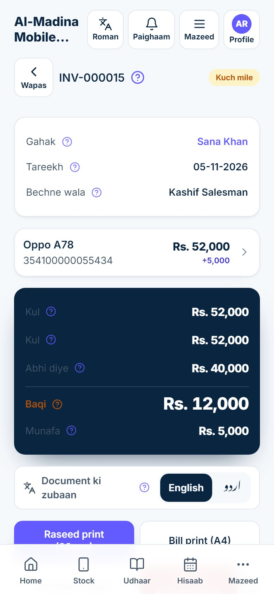
Tasveer 14: Document ki zabaan ke switch ke saath bikri ka page
Print ke button ke bilkul upar Document ki zabaan hai jis mein English aur اردو hain. Shuru mein English chuni hoti hai; yeh bill Urdu mein print ya share karne ke liye اردو dabayein.
Tax wale bill, gahak ki di hui raqam aur wapsi
Ab har bill par kul raqam ke neeche raqam alfaaz mein (masalan "Rupees Forty-One Thousand Seven Hundred Seventy Only"), bill banane wala cashier aur waqt chhapta hai.
Gahak ki di hui raqam aur wapsi. Jab gahak naqad de to Gahak ne kitne naqad diye mein likhein. Screen wapas dene wali raqam dikhati hai, aur chhape bill par Cash given aur Change aata hai. Zaroorat na ho to khaali chhor dein.
Tax wale bill. Jab aap Is bill par tax lagayein par nishaan lagayein to bill par Total excl. tax, har tax rate ki alag line (masalan "Tax 18% on 1,500") aur Total tax chhapta hai, FBR ke tax invoice ki tarah.
Mobile aur sales tax. Mobile phone Naveen Schedule mein hain: un ka sales tax import karne wala deta hai, dukaan oopar se nahi lagati. Mazeed → Dukaan ki settings → Mobile: sales tax import par ada (bill par tax nahi) on karein to tax wale bill par tax sirf charger, cover aur doosri cheezon par lagega, aur mobile ki line par likha hoga "Mobile phones — sales tax paid at import (Ninth Schedule)".
Misaal: mobile Rs. 40,000 + charger Rs. 1,500 par 18% → tax Rs. 270, kul Rs. 41,770. Gahak Rs. 42,000 deta hai → wapas Rs. 230.
Zyada cash purane udhaar mein. Kabhi woh gahak jis ne dukaan ko pehle se dena hai, is bill se zyada paise de deta hai. Jab gahak chuna hua ho aur us ne pehle se dena ho, to wapsi ke neeche ek tick aata hai: … us ke purane udhaar mein jama karein (dena hai …). Isay tick karein to zyada raqam wapas nahi di jati, us ke purane udhaar mein jama ho jati hai. Us ka khata kam ho jata hai, us ke sab se purane bill ada ho jate hain, aur chhape bill par yeh likha aata hai.
Misaal: Bill Rs. 2,000. Imran Rs. 5,000 deta hai aur pichle mahine ke Rs. 3,000 dene hain. Tick karein: wapas Rs. 0, purana udhaar khatam.
Har bill par QR code
Har chhape hue bikri ke bill (80mm aur A4) ke neeche ek QR code hota hai aur saath likha hota hai Scan to see this bill online (Urdu bill par Urdu mein). Gahak phone ke camera se scan karta hai aur baghair login bill dekh leta hai: dukaan ka naam, bill number aur tareekh, har cheez (IMEI ke sirf aakhri 4 hindse), kul raqam, kitna ada hua aur Baqi raqam, aur Dukaan ko call karein ka button. Upar likha hota hai Is dukaan ka asli bill, taake gahak, baad mein phone khareedne wala, ya warranty ke waqt koi bhi dekh sake ke bill asli hai.
Tasveer 15: QR wala chhapa hua bill
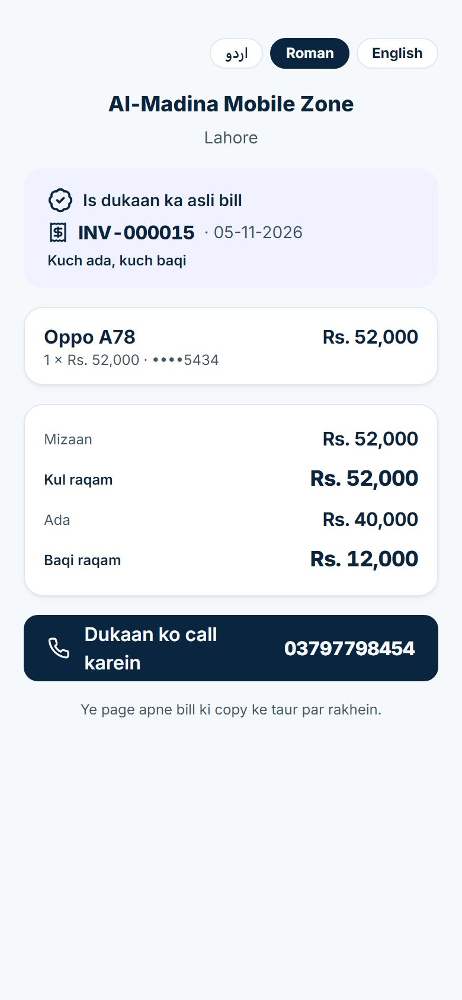
Tasveer 16: QR se khula hua bill
Is page par gahak ka phone number, CNIC, khareed qeemat ya munafa kabhi nahi aata.
Agar baad mein bill wapas ya cancel ho jaye to page yeh bata deta hai.
Link andaze se nahi banaya ja sakta aur na badla ja sakta hai: badla hua link "Ye bill nahi mila" dikhata hai.
QR ke baghair bill chhaapne hon to Mazeed → Dukaan ki settings → Business profile → Printed bill kholein aur Bill online dekhne ka QR code se tick hata dein.
9. Wapsi (return)
Kabhi kabhi customer phone wapas le aata hai: us mein koi kharabi hai, woh us ki pasand ka nahi, ya bas us ka iraada badal gaya. Wapsi screen phone ko wapas aap ke stock mein le leti hai, hisaab laga deti hai ke kitne paise wapas dene hain aur dukaan kitne rakhti hai, aur sab kuch record par likh deti hai. Kuch bhi delete nahi hota: asal bill wahin rehta hai, aur wapsi us ke saath apne number ke saath judd jaati hai (masalan RET-000001).
Wapsi teen chhote qadamon mein hoti hai: Kya wapas aaya?, Kitne wapas dene hain? aur Ho gaya.
Shuru karne se pehle
Aap ko bika hua phone (ya woh bill jis par woh bika tha) chahiye. Aap use IMEI, khareedar ke naam ya khareedar ke phone number se dhoond sakte hain.
Agar phone kisi aise walk-in customer ko bika tha jis ka naam nahi likha tha, to app poochegi Kaun wapas laya? taa ke paise kisi bande ke khilaaf likhe jayein.
Kitne paise wapas dene hain, yeh dukaan tay karti hai. App kabhi poore paise wapas karne par majboor nahi karti.
Phone wapas lena, qadam ba qadam
Misaal:Usman Tariq ne Vivo Y17sRs. 37,000 cash mein khareeda. Do din baad woh speaker ki kharabi ki wajah se wapas le aata hai. Aap use Rs. 35,000 dene par raazi hote hain aur takleef ke Rs. 2,000 rakh lete hain.
Home par Wapsi dabayein. Aap bike hue phone ka apna page khol kar wahan bhi Wapsi daba sakte hain.
Qadam 1/3 · Kya wapas aaya? mein ek search box Bika hua phone IMEI, khareedar ke naam ya phone se dhoondein aur haal hi mein bike phones ki list nazar aati hai. IMEI ka kuch hissa likhein (masalan 6706) ya Usman, ya Scan daba kar phone ka barcode ya IMEI scan karein.
List mein Vivo Y17s par dabayein. Aap Ya haal ki bikri mein se chunein se poora bill bhi chun sakte hain.
Qadam 2 mein us bill ki har line tick box ke saath nazar aati hai. Jis phone par aap ne dabaya tha woh pehle se tick hai. Agar bill par charger ya cover bhi tha jo wapas aa raha hai, to use bhi tick karein. Jo lines pehle hi wapas ho chuki hain woh halki (grey) hoti hain aur un par Wapas likha hota hai.
Agar bikri par customer ka naam nahi tha, to Kaun wapas laya? ke neeche banda chunein (ya naya banda daalein).
Gahak ne diye the dikhata hai ke tick ki hui lines ke liye customer ne asal mein kitne diye the: yahan 37,000.
Paise kahan se diye ke neeche dabayein ke paise kahan se ja rahe hain: Cash (aap ka galla) ya aap ka koi bank / wallet account. Jaane pehchane customer ke liye Khate mein rakhein bhi hai: paise diye nahi jaate, woh us ke khate (account) mein reh jaate hain aur woh agli khareed mein istemal kar sakta hai.
Gahak ko wapas (Rs) mein poori raqam pehle se bhari hoti hai. Use 35000 kar dein. Dukaan ne kaate wala box khud 2,000 dikha deta hai.
Kyun? (agar batana ho) mein wajah likhein, masalan speaker kharab.
Wapas lein dabayein.
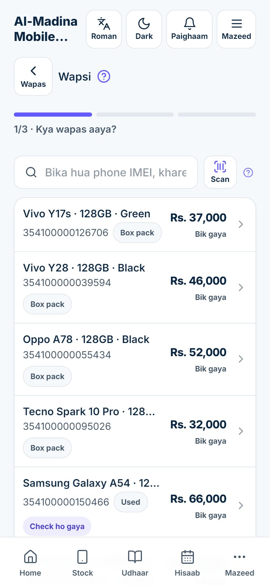
Tasveer 17: Wapsi screen: bika hua phone IMEI, naam ya phone se dhoondein, ya scan karein
Aakhri qadam par Wapsi ho gayi aata hai, saath mein wapas di gayi raqam, dukaan ki kaati hui raqam aur wapsi ka number. Us ke neeche: Phone wapas stock mein aa gaya. Agli wapsi ke liye Ek aur wapsi dabayein, ya Home par chale jayein.
Screen ke peeche kya hota hai
Phone ka status wapas Stock mein ho jata hai aur woh dobara bik sakta hai. Us ki history mein Bikri wapas ki line aa jaati hai, bande, raqam aur wajah ke saath.
Dukaan ne jo Rs. 2,000 rakhe woh aamdani mein gine jaate hain. Din ke hisaab mein Wapsi par diye (Rs. 35,000) aur Wapsi par kaate (Rs. 2,000) alag alag lines mein aate hain, is liye cash ki ginti phir bhi mil jaati hai.
Asal bikri mitaayi nahi jaati. Bill par aur reports mein wapas hui line kati hui hoti hai aur us par Wapas likha hota hai.
Jo charger ya cover aap ne tick kiya tha woh us item ke stock mein wapas jud jata hai.
Udhaar par bika phone
Agar phone udhaar (credit) par bika tha aur customer ne kuch nahi diya tha, to app dikhati hai Is ke paise nahi diye the; udhaar se kam ho jayega. Koi cash nahi hilta: raqam bas us ke zimme baqi se kam ho jaati hai.
Agar us ne kuch hissa diya tha, to sirf diya hua hissa hi wapas ho sakta hai; baqi hissa us ke udhaar se kam ho jata hai.
Misaal: Bilal ne Rs. 50,000 ka phone khareeda, Rs. 20,000 diye aur Rs. 30,000 baqi hain. Woh use wapas karta hai. Gahak ne diye the mein 20,000 aata hai. Aap Rs. 18,000 cash wapas dete hain aur dukaan Rs. 2,000 kaat leti hai. Is phone ka us ka Rs. 30,000 udhaar khatam ho jata hai.
Abhi kuch wapas, baqi baad mein
Jaane pehchane customer ke liye Gahak ko wapas (Rs) mein woh raqam likhein jo abhi de rahe hain. Phir Baqi, jo abhi wapas nahi diya poochta hai ke baqi kahan jaye: Customer ka khata (hum ne dena hai) use customer ka haq rakhta hai, Dukaan rakhe (katauti) use dukaan ki katauti banata hai. Neeche ka gehra card saaf likhta hai: Customer ko dena, Customer se lena ya Hisaab barabar.
Misaal: Ali ne 80,000 diye the. Aap abhi 30,000 dete hain aur Customer ka khata dabate hain: card Customer ko dena 50,000 dikhata hai. Baad mein khate se (Adaigi) dein, maslan pehle 20,000 phir 30,000.
Bill ki qeemat se kam credit
Agar wapsi ke usool kuch rakhte hain to Wapas aayi cheez ka credit (Rs) bill ki qeemat se kam kar dein. Farq dukaan ki katauti hai. Agar us bill ka baqaya tha to credit pehle woh khatam karta hai.
Misaal: bill 80,000, Ali ne 50,000 diye (30,000 baqaya). Poora credit 80,000 ho to 30,000 khatam aur Customer ko dena 50,000 baqi. Credit sirf 25,000 ho to Customer se lena 5,000 baqi.
10. Exchange
Exchange (jise upgrade bhi kehte hain) tab hota hai jab customer apna purana phone de kar naya le leta hai aur farq ke paise deta hai. Exchange / upgrade screen dono kaam ek saath karti hai: purana phone aap ke stock mein khareed leti hai, naya bech deti hai, aur farq ka hisaab khud laga deti hai.
Is ke chaar qadam hain: Gahak, purana phone, naya phone, aur Hisaab.
Exchange karna, qadam ba qadam
Misaal:Bilal Ahmed apna purana Oppo A17 laata hai. Aap us ki qeemat Rs. 18,000 lagate hain. Woh Rs. 54,000 wala Infinix Note 40 leta hai. Farq Rs. 36,000 hai. Woh abhi Rs. 30,000 deta hai, aur Rs. 6,000 us ke khate mein chale jaate hain.
Mazeed → Purana de kar naya par jayein. Screen ka naam Exchange / upgrade hai.
Qadam 1/4 · Gahak: Gahak chunein ke neeche naam, phone ya CNIC se dhoondein, aur Bilal Ahmed par dabayein. Agar woh naya hai, to + button daba kar use daalein. Har naam ke saath us ka abhi ka balance aata hai, masalan Mujhe lene hain (woh aap ka dena hai) ya Mujhe dene hain (aap ne use dena hai). Aage dabayein.
Purana phone darj karein dabayein. Ise bilkul phone khareedne ki tarah bharein: IMEI 358812091717195, brand Oppo, model A17, storage, rang, haalat aur PTA status. Khareed qeemat mein 18000 likhein: yeh purane phone ki qeemat (trade-in value) hai. Agar aap ko pehle se pata hai ke kitne mein bechenge to Bechne ki qeemat bhi likh dein, masalan 22000. Daalein dabayein, phir Aage.
Purana phone ab ek card ki shakal mein apni trade-in qeemat ke saath nazar aata hai. Agar ghalti ho gayi ho, to Purana phone badlein dabayein.
Stock se naya phone chunein: Infinix Note 40 par dabayein. Bechne ki qeemat (54000) check karein aur Aage dabayein.
Hisaab mein dono phone aate hain, phir Naya phone 54,000, Purane phone ki qeemat minus 18,000 (aur Pichla baqaya agar woh pehle se aap ka kuch deta tha), aur ek rangeen card jo lafzon mein batata hai: Farq gahak de ga Rs. 36,000.
Abhi diye likhein: 30000. Us ke neeche app yaad dilati hai: Is se kam: baqi un ke khate par jaye ga.Naya baqaya is exchange ke baad us ka poora khata dikhata hai: agar pehle woh kuch nahi deta tha, to 6,000 aata hai.
Exchange mukammal karein dabayein.
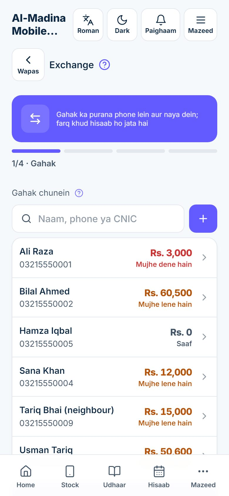
Tasveer 18: Exchange / upgrade, qadam 1: gahak chunein
Screen par Exchange ho gaya aata hai, saath mein receipt print karne (80mm thermal ya A4), download ya share karne, Bill kholein, ya Ek aur exchange shuru karne ke buttons.
Jab purana phone zyada qeemti ho
Kabhi customer ka phone us phone se zyada qeemat ka hota hai jo woh le raha hai. Tab card par likha aata hai Farq aap wapas dein ge, aur khulase mein Gahak ko wapsi aata hai. Agar dono barabar hon to likha aata hai Kisi ko kuch nahi dena.
Jab farq dukaan ne dena ho to abhi poora, kuch ya kuch nahi de sakte hain: Dukaan abhi de (Rs) badlein. Jo na diya woh customer ke khate mein rehta hai aur gehra card raqam ke saath Customer ko dena likhta hai. Jab customer ne dena ho to kam Abhi mile se Customer se lena baqi rehta hai. Abhi ki raqam ka tareeqa chunein: Naqd, Online ya Cheque.
Agar purana phone wahi hai jo aap ki dukaan ne pehle use becha tha to exchange pehli bikri qaim rakhta hai, phone tay shuda qeemat par stock mein wapas lata hai aur pehla bill jor deta hai (mukammal screen par Pehla bill). Chhape bill par Purana phone wapas liya exchange number ke saath, Abhi wusool (Urdu bill par: پرانا فون واپس لیا، ابھی وصول), aur aakhir mein Customer se lena ya Customer ko dena aata hai.
Misaal: Ali ne phone 80,000 ka liya. Aap use 70,000 mein wapas lete hain aur woh 55,000 ka phone leta hai; dukaan ne 15,000 dene hain. Abhi 5,000 diye: Customer ko dena 10,000. Baad mein khate se pehle 4,000 phir 6,000 dein.
Exchange ke baad
Purana phone ab aap ke stock mein hai, Bilal se Rs. 18,000 mein khareeda hua. Is ka apna page aur history hai, kisi bhi khareed ki tarah.
Kyunke purana phone customer se aaya hai, is ka Shanakhti card check (CNIC, declaration waghera) bilkul waise hi karein jaise kisi bhi used phone ki khareed par karte hain. Used tablet aur watch ke liye lock check bhi karein.
Naya phone aam bill par bikta hai. Munafa, din ka hisaab aur Bilal ka khata sab ek hi baar mein update ho jaate hain.
11. Stock, IMEI check aur phone ki history
Jo kuch aap ka hai woh sab Stock mein hai. Yahan se aap dekh sakte hain ke aap ka stock kitne ka hai, koi bhi phone seconds mein dhoond sakte hain, check kar sakte hain ke koi IMEI pehle aap ki dukaan mein aaya hai ya nahi, aur kisi phone ki poori kahani us din se khol sakte hain jab woh aaya tha.
Mera stock kitne ka hai?
Neeche wali bar mein Stock dabayein. Pehli screen hai Mera stock kitne ka hai? Kisi brand ko khol kar model dabayein: stock ki list mein sirf wahi model aata hai (iPhone 17 dabane par iPhone 17 Pro Max nahi aata); Sab dikhayein se hat jata hai.
Sab se upar: aap ke paas kitne phone hain aur un ki kul qeemat (bari raqam ho to lakh mein dikhayi jaati hai).
Neeche: har brand ki ek line, kitne phone aur un ki qeemat ke saath. Kisi brand par dabayein to us ke models nazar aate hain.
Sab phone dekhein poori stock list kholta hai. Download yahi figures file ki shakal mein deta hai.
Maalik aur manager ke liye qeemat khareed qeemat par hoti hai. Jis staff ko khareed qeemat dekhne ki ijazat nahi, unhein yeh bechne ki qeemat par nazar aati hai.
Stock list
Ise Sab phone dekhein se kholein, ya Mazeed → Stock list se.
Upar paanch buttons hain: Download, Share, Stickers, IMEI check karein aur Stock daalein. Un ke neeche:
Search: IMEI, model, brand, ya us bande ka naam ya phone number likhein jis se khareeda ya jis ko becha. Camera istemal karne ke liye Scan dabayein, ya bas USB scanner se scan kar dein.
Brand ke gol buttons: Sab, phir har brand ka ek gol button us ki ginti ke saath (masalan Apple · 2, Samsung · 2). Kisi ek par dabayein to sirf woh brand nazar aata hai.
Status ke chips: Stock mein, Amanat par, Bik gaya, Kharab aur Sab.
Filter: mazeed choices kholta hai: Grade (Used A, Used B, Refurbished, Copy / China), RAM (GB), qeemat ki range (sab se kam aur sab se zyada bechne ki qeemat), aur ek switch Lock check nahi jo sirf woh used devices dikhata hai jin ka lock check kabhi nahi hua.
Stock ki qism: Saara stock, Mobiles, Tablets, Smartwatches yeh list chhante hain. Accessories, Spare parts aur Deegar items wali screen usi qism ke saath kholte hain (items tadaad se gine jate hain).
Haalat ke card: Bechne ke liye tayyar (stock mein aur tayyar; neeche Dukaan mein, dukaan ka har phone), Customer ke paas (manzoori), Jaanch mein (ID check baqi ya mashkook, ya lock baqi), Repair mein, Kharab, items ke liye Kam stock aur Khatam (har item ki apni had se), aur maalik o manager ke liye Khareed ke hisaab se maliyat. Card par tap karein to sirf wahi phone; dobara tap to sab. Dekhne se kuch nahi badalta.
Mazeed Filter: haalat, PTA, stock ki umar (30+ / 60+ / 90+ din), Jis se khareeda (dealer), aur maalik o manager ke liye khareed ki had.
Koi phone khol kar wapas aayein: chuni hui qism, card, haalat, filter aur tarteeb waise hi rehte hain.
Card / Table / Grid / List: phone kaise dikhein. Card neeche bataye gaye bare card hain. Table Excel ki tarah hai: har phone ki ek line aur har tafseel ka ek column (memory, rang, haalat, PTA, battery, IMEI, din, khareed jo sirf maalik aur manager dekhte hain, farokht ki qeemat, haalat). Column ke naam ko dabayein to usi se tarteeb ho jati hai, dobara dabayein to ulti tarteeb. Aakhri line khareed aur farokht ka jor dikhati hai; phone par table ko side par khiskayein. Grid mein chhote khane hote hain, ek screen par bohat se. List mein har phone ki ek chhoti line hoti hai. App aap ka intikhab usi phone ya computer par yaad rakhti hai.
Fields: jo tafseel dekhni ho us par nishan lagayein (memory, rang, haalat, PTA, battery, region, IMEI, din, khareed, farokht waghera). Yeh charon andaaz mein lagta hai. Saath Download aur Share hain jo PDF / Excel / CSV inhi columns, aap ke filter aur isi tarteeb se banate hain.
Filters ke neeche app batati hai ke kitne phone milte hain, masalan 7 phone. Har phone ek card hai jis par us ka naam, rang aur storage, bechne ki qeemat, aur chaar chhote box hote hain: Memory, PTA, Haalat aur Din (dukaan mein kitne din se hai). Neeche IMEI, ID check ka badge aur Bechein button hota hai.
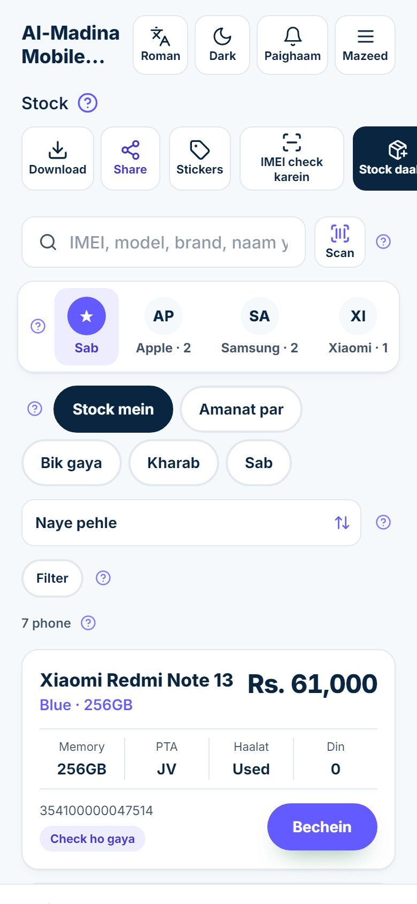
Tasveer 19: Stock list: search, brand ke gol buttons, status ke chips aur filters ke saath
Stock list mein tablet aur smart watch
Tablet aur smart watch phones ke saath usi stock mein rehte hain. Un ke card par woh cheez aati hai jo us qisam ke liye zaroori hai: watch par us ke case ka size aur GPS ya SIM; tablet par Wi-Fi ya SIM. Jis device mein SIM nahi, us ka IMEI nahi hota, is liye us ka Serial number dikhaya aur dhoonda jata hai.
Bechte waqt sirf ek qisam dekhne ke liye bikri ki screen par stock ke upar chips Sab · Mobile · Tablet · Smart watch istemal karein.
Qisam ke hisaab se ginti aur qeemat ke liye Report → Type ke hisaab se (Type ke hisaab se stock) par jayein: units, khareed qeemat aur bechne ki qeemat par maaliyat, kitne used hain, kitno ka lock check nahi hua ya lock abhi laga hai, kitne Non-PTA / JV hain, aur kitne 60 din se purane hain.
Agar koi device ghalat qisam mein darj ho gaya (masalan tablet mobile ke taur par save ho gaya), to maalik use stock list mein tick kar ke Type badlein istemal kar sakta hai. History, IMEI ya serial, barcode aur balance bilkul waise hi rehte hain; sirf qisam badalti hai, aur yeh tabdeeli history mein likhi jaati hai.
Used phone khareedne se pehle check kar lena acha hai ke kya yeh pehle aap ki dukaan se guzra hai.
Stock list mein IMEI check karein dabayein (ya Mazeed → IMEI dhoondein).
15 hindse likhein, ya Scan daba kar camera dabbe par lage IMEI barcode ki taraf karein. Aap phone par *#06# dial kar ke screen bhi scan kar sakte hain.
Jawab in mein se ek hota hai:
Aap ko kya nazar aata hai
Is ka matlab
Naya IMEI, pehle nahi aaya
Yeh phone kabhi aap ki dukaan mein nahi aaya.
Yeh IMEI pehle aap ki dukaan mein aa chuka hai · 1 baar khareeda
Aap yeh phone pehle khareed chuke hain. Is par dabayein to poori history khul jaati hai: kis ne aap ko becha, aap ne kis ko becha, waghera.
IMEI ghalat lag raha hai, dobara dekhein
Number ghalat likha gaya hai. Har asli IMEI ka ek aakhri "check digit" hota hai; yeh us se nahi milta.
Phone ka apna page
Stock list mein kisi bhi phone par dabayein to us ka page khulta hai. Upar wala gehra card dikhata hai:
IMEI (ya serial) aur status, masalan Stock mein, Amanat par, Bik gaya, Marammat mein ya Kharab;
Barcode (masalan MS000006), storage aur rang;
haalat ke badge (Used, Box pack...), PTA (PTA approved, Non-PTA, JV), lock check (Lock check nahi ya Locks clear) aur ID check (ID checked, ID check baqi);
Bechne ki qeemat aur, sirf maalik aur manager ke liye, Khareed qeemat.
Card ke neeche do bare buttons hain, Bechein aur Shanakhti card check, aur phir Kaam:
Button
Kya karta hai
Amanat par dein
Yeh phone kisi doosri dukaan ko dein (chapter 15).
Kharab likhein
Jo kharabi hai chunein (Camera, LCD, Display, Display par dots, Board, RAM, Battery waghera), ya apni kharabi likh kar + dabayein (agli baar bhi milegi). Mobile stock ki list mein laal Faulty: … ke saath rehta hai aur jaisa hai waisa becha ja sakta hai; bill par Sold as faulty aata hai. Kharabiyan badlein se list badlein; theek ho jaye to Faulty cleared. Jo phone kharab haalat mein aaye use stock daalte waqt hi Faulty likha ja sakta hai: More details → Yeh kharab haalat mein aaya, us ki kharabiyan dabayein; yeh stock mein Faulty likha jata hai.
Marammat ko bhejein
Apne phone ki repair job kholein (chapter 14).
Sticker print karein
Is ka barcode wala price sticker print karein (chapter 12).
Qeemat badlein
Nayi bechne ki qeemat lagayein; purani history mein rehti hai.
Note likhein
Jo kuch yaad rakhna ho likhein, aap ke naam aur waqt ke saath.
Tafseel badlein
Storage, rang aur aisi tafseel theek karein.
Lock check
Used device ke iCloud / Google (FRP) / account lock checks darj karein.
Wapsi
Bike hue phone par aata hai: wapsi shuru karein (chapter 9).
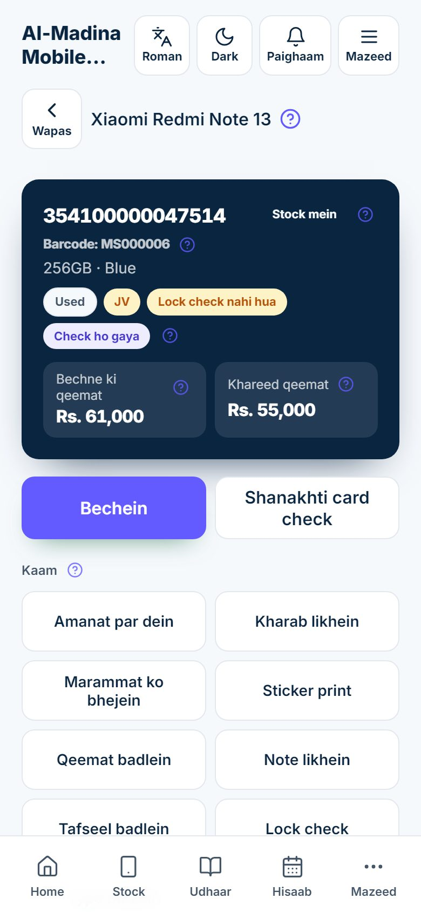
Tasveer 20: Phone ka apna page: IMEI, barcode, badges, bechne ki qeemat aur khareed qeemat, aur kaam ke buttons
Is phone ka paisa
Page par neeche Is phone ka paisa wala card hai. Yeh jawab deta hai ke "yeh phone kitne ka aaya, kitne ka bika, aur kya abhi kuch baqi hai?"
Khareed qeemat, Abhi dene hain, Kitne mein bika, Abhi lene hain aur Munafa ek hi line mein.
Kis se khareeda: kis ne aap ko becha, khareed ka bill, tay qeemat, us waqt aap ne kitne diye, baad ki har adaigi, aur kitne abhi dene baqi hain.
Kis ko becha: yahi sab bikri ke liye: tay qeemat, Usi waqt wasool, baad ki adaigiyan, aur kitne abhi lene baqi hain.
Is phone ki adaigi aur Is phone ki wasooli: aisi adaigi lein ya dein jo isi bill ke khilaaf likhi jaye, taa ke phone ke figures aur bande ka khata saath saath chalein.
Bande ke mobile brand aur model ke hisaab se. Customer ya dealer ke page par Phones pehle jor dikhata hai: in se khareede, inhein beche, Abhi dene hain aur Abhi lene hain. Brand aur model ke hisaab se (aam andaaz) har brand kitne mobile aur kitne dene / lene baqi hain ke saath; dabayein to us ke model, har ek isi hisaab ke saath; model dabayein to us ke mobile. Brand ya model par Raqam dein / Raqam wusool karein us ke saare khule bill ek saath, purane pehle ada karta hai; har mobile ka apna button bhi rehta hai. Mobile dabayein to us ka page, us ka apna raqam ka hisaab aur history; bande ka poora khata Khata history mein rehta hai. Ek list pehle ki tarah sab mobile ek list mein.
Misaal: aap ne Ahmed se ek Vivo Rs. 35,000 mein khareeda aur Rs. 30,000 diye (Rs. 5,000 aap ne dene hain). Aap ne woh Bilal ko Rs. 40,000 mein becha aur us ne Rs. 35,000 diye (Rs. 5,000 us ne dene hain). Baad mein aap Ahmed ko Rs. 2,000 dete hain aur Bilal aap ko Rs. 3,000 deta hai. Ab card dikhata hai khareed qeemat 35,000, abhi dene hain 3,000, kitne mein bika 40,000, abhi lene hain 2,000, munafa 5,000. Ahmed aur Bilal ke khate ke page bilkul yahi numbers dikhate hain.
Agar phone purane stock ke taur par darj hua tha, to card par likha aata hai Purana stock: laagat ke saath darj, khareed ka bill nahi.
IMEI ya bechne wala ghalat likha gaya
Yeh sirf maalik ya manager durust kar sakte hain, aur har ek ke liye mukhtasar wajah likhni hoti hai. Kuch mitaya nahi jata: phone ki History mein Durust kiya ki line purani cheez, nayi cheez aur wajah ke saath aati hai.
Ghalat IMEI: phone kholein, IMEI durust karein dabayein, sahi IMEI 1 likhein (aur IMEI 2, ya nishan lagayein ke is phone ka IMEI 2 nahi), wajah likhein aur Mehfooz karein dabayein. Number 15 hindson ka ho aur dukaan ke kisi aur phone ka na ho. Barcode wahi rehta hai.
Ghalat dealer ya customer: khareedari kholein (More → Purchases, ya phone ki history mein khareedari wali line par tap), Dealer / customer badlein dabayein, sahi shakhs chunein, wajah likhein aur Mehfooz karein dabayein. Bill aur us ke saath di gayi raqam sahi shakhs ke khate mein chali jati hai; ghalat shakhs ka khata pehle jaisa ho jata hai. Agar baad mein is bill ki adaigi ho chuki ho ya kuch wapis hua ho to yeh nahi ho sakta: pehle woh khatam karein.
Ada shuda likha, maal udhaar par aaya tha (ya ulta): khareedari kholein (ya mobile, bika hua bhi) aur Di gayi raqam badlein dabayein. Kuch nahi diya (poora udhaar), Poora diya dabayein ya khareedari ke waqt asal mein jitna diya likhein; zyada diya ho to tareeqa chunein (cash, online, cheque). Upar asar dikhta hai, maslan "20,000 wapas usi account mein; dealer ka khata: 20,000 zyada dene hain". Chahein to waade ki tareekh likhein, wajah likhein aur Save karein. Bill par baad mein di gayi raqam waisi rehti hai; mobiles ko kuch nahi hota. Sirf owner ya manager. Us din ka cash band ho chuka ho to tabdeeli aaj ki tareekh par lagti hai.
Qeemat-e-khareed ghalat: mobile kholein, Qeemat-e-khareed badlein dabayein, durust qeemat likhein, wajah likhein aur Save dabayein. Pehle Yeh kyun badal rahi hai? chunein: Likhne mein ghalti (khareedari ke waqt isi qeemat ke paise diye — maslan 40,000 likha, 45,000 diye: 5,000 mazeed galle se nikle, khata saaf; 25,000 ke phone ke liye 30,000 likha: 5,000 galle mein wapas) ya Qeemat waqai badli (farq bechne wale ke khate mein, maslan "2,000 zyada dene hain"). Bill ka total, stock ki maliyat aur mobile ki laagat saath badalte hain; history mein purani qeemat rehti hai. Sirf owner ya manager, aur sirf jab mobile abhi dukaan mein ho (bika na ho).
Phone ya items customer ke liye reserve
Phone ke page par Customer ke liye reserve dabayein, customer chunein, aur chahein to Kab tak aur note (maslan "advance 5,000"). Page phir naam ke saath Reserve baraye dikhata hai. Phone stock mein rehta hai magar Bechne ke liye tayyar mein nahi gina jata, stock screen par Reserve ka card hai, aur kisi aur ko bechne ki koshish ruk jati hai. Usi customer ko bechne se reserve khud khatam ho jata hai; woh na aaye to Reserve khatam karein dabayein. Item ke page par Customer ke liye reserveKitne poochta hai: doosre sirf baqi piece khareed sakte hain. Koi raqam ya entry nahi hoti; phone ki history mein Reserve hua aur Reserve khatam aata hai.
Shelf / jagah
Phone daalte ya badalte waqt Shelf / jagah (optional) batata hai ke phone kahan rakha hai, maslan Rack A2. Yeh phone ki line par dikhta hai, aur stock ka search aur Shelf / jagah filter use dhoond lete hain.
Jis se khareeda woh badlein
Phone ke page par Dealer / customer badlein dabayein: us ki khareedari badalne ke liye tayyar khulti hai (upar "IMEI ya bechne wala ghalat likha gaya" dekhein). Items ke liye khareedari item ki movements se ya More → Purchases se kholein.
Page ka andaaz: Purana, Smart, Tabs, Khane, Mukhtasar
Phone ke page ke upar se chun sakte hain ke page kaisa dikhe. Yeh intikhab isi phone ya computer par yaad rehta hai.
Purana: pehle wala page.
Smart: har cheez ke saath us ka kaam. IMEI ke saath Copy aur IMEI durust karein, qeemat ke saath Bechne ki qeemat badlein, shelf ke saath Badlein, barcode ke saath Sticker, ID check ke saath Tasdeeq. Upar Bechein hai. Jis se khareeda (ya jise becha) woh baqi raqam ke saath dikhta hai, saath Dein / Wusool karein, Bill kholein aur Badlein. Neeche history.
Tabs: yahi page Phone, Customer aur raqam aur History mein.
Khane: bare khane; dabayein to badalne ka kaam khulta hai (qeemat, IMEI, haalat, shelf, sticker, ID check).
Mukhtasar: ek chhoti list, aur neeche Bechein ka button hamesha maujood.
Sab andaaz ek hi kaam karte hain; jo kaam kisi cheez ke saath nahi woh Mazeed kaam mein hain.
Poori history
Page ke bilkul neeche History hai: is phone ke saath jo kuch bhi hua us ki ek timeline, sab se naya upar. Har line par tareekh, banda, raqam aur woh staff member hota hai jis ne kaam kiya. Aap is tarah ki lines dekhenge:
Khareeda (bill aur jis se khareeda us ke saath) aur Barcode laga;
Check hua (ID check, masalan "Bechne wale ka CNIC counter par dekha");
Qeemat badli (purani aur nayi bechne ki qeemat);
Bika invoice number ke saath (masalan INV-000017), Usi waqt wasool aur lene baqi;
Bikri wapas wapsi number ke saath (masalan RET-000001), wapas di gayi raqam aur wajah;
Amanat par diya, Amanat wapas, Marammat ko bheja, Marammat se wapas, Kharab likha, Label print hua, Note.
History ki lines kabhi edit ya delete nahi ho saktin. Ghalti nayi line se theek hoti hai, is liye timeline hamesha sachi kahani batati hai. History ke upar Download ya Share daba kar ise file ki shakal mein bhejein, masalan us customer ko jo saboot chahta hai ke phone kahan se aaya.
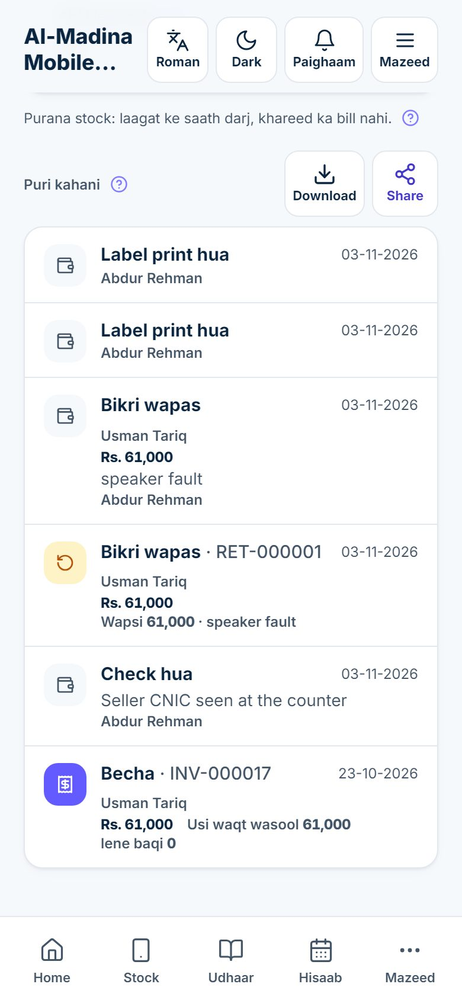
Tasveer 21: Phone ki history: bika, check hua, bikri wapas, har ek tareekh, bande aur raqam ke saath
Stock ginti sheet (kaghaz par ginti)
Stock → Mera stock kitne ka hai? (aur Stock ginti) par Stock ginti sheet ka card har maujood mobile haath se ginne ke liye chhaapta hai.
Print (A4) sheet printer ke liye kholta hai (ya "Save as PDF"); Download se PDF ya Excel.
Upar: dukaan ka naam, pata aur number, tareekh aur kis ne nikali; figures (maujood mobile, dukaan mein, bahar — repair / approval / amanat, faulty, reserved, ID check baqi, owner / manager ke liye qeemat-e-khareed aur farokht par maliyat, items, lena / dena, aur owner ke liye cash + bank); brand aur model ke hisaab se ginti.
Phir har mobile, brand aur model ke hisaab se, har ek do lines mein taake saari tafseel A4 par aaye: IMEI / IMEI 2 / serial, storage · RAM / rang, haalat · grade / PTA · SIM lock, battery / region · SIM, barcode / shelf, status / din, khareed / farokht, Mila ka khana aur Note ki jagah. Har page par column ke naam dobara aate hain; koi mobile do pages mein nahi kat-ta.
Phir items Record mein aur khali Ginay column ke saath, aur dastakhat ki lines.
Excel mein Summary, Phones (har tafseel ka alag column, Mila column, filter, A4 landscape par ek page chaurai mein print) aur Items sheets.
#### Staff ki copy (baghair qeemat) aur owner ki ijazat
Ginti sheet ke neeche Staff copy (baghair qeemat) yehi sheet baghair kisi raqam ke chhaapti hai: na khareed qeemat, na farokht qeemat, na stock ki maliyat, na lena / dena, na cash aur na bechne wala. Yeh staff ko ginti ke liye dein.
Salesman ya technician ko Mera stock kitne ka hai? par card mein Owner se sheet maangein nazar aata hai. Dabane ke baad card batata hai ke darkhwast intezar mein hai.
Owner ko home screen par "1 staff ne stock ginti sheet maangi hai" nazar aata hai; yeh card kholta hai, har darkhwast ke saath Ijazat dein / Mana karein.
Ijazat ke baad woh staff sirf staff copy (PDF / Excel / CSV) chhaap aur download kar sakta hai, jab tak owner Ijazat wapas lein na dabaye.
Scanner se stock ki ginti
Mahine mein ek baar (ya jab bhi lage ke kuch ghayab hai) scanner se shelf gin lein. App batati hai ke kya ghayab hai aur kya yahan nahi hona chahiye.
Mazeed → Stock ki ginti par jayein. (Maalik aur manager.)
Shelf par har phone aur har item ek ke baad ek scan karein. USB ya Bluetooth scanner sab se tez hai, lekin aap Code likh kar Enter dabayein mein code likh bhi sakte hain. Bara number dikhata hai ke kitne scan hue.
Chargers ka ek hi dabba paanch baar scan karein to paanch piece gine jaate hain.
Shelf mukammal ho jaye to Stock se milayein dabayein.
Natije mein teen lists hoti hain: Mil gaye (scan hue aur stock mein hain), Ghayab (stock mein hone chahiye the lekin scan nahi hue) aur Yahan nahi hona chahiye (scan hue, lekin app ke hisaab se bik chuke, amanat par hain, ya bilkul anjaan hain). Items ke liye aap ko 10 mein se 8 scan nazar aata hai aur yeh ke barabar hai ya farq hai.
Lists mein kisi bhi phone par daba kar us ka page kholein aur maamla suljhayein. Saaf karein ya Nayi ginti shuru karein dobara shuru karta hai.
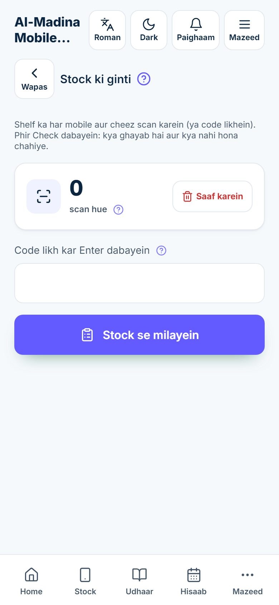
Tasveer 22: Stock ki ginti: sab kuch scan karein, phir Stock se milayein
Misaal: app kehti hai 12 mobile stock mein hone chahiyein. Aap 11 scan karte hain. Ghayab mein ek Samsung A15 aata hai. Aap use kholte hain aur us ki history mein dekhte hain ke kal woh Star Mobiles ko Amanat par diya gaya tha, lekin kabhi mark nahi hua. Ya woh waqai ghayab hai, aur ab aap ko pata hai kaun sa.
Doosri branch ko stock bhejna
Agar aap ki ek se zyada branches hain to aap in ke darmiyan mobile aur items bhej sakte hain. Kuch bikta nahi: stock apni khareed ki qeemat par is dukaan se nikalta hai aur usi qeemat par branch mein aata hai, is liye munafa nahi badalta.
Mobile kholein aur Doosri branch ko bhejein dabayein (ya item khol kar yehi button dabayein, ya Mazeed → Branch transfer → Branch ko bhejein par jayein).
Kis branch ko ke neeche branch dabayein.
Mazeed mobile ke liye Mobile shamil karein dabayein (talaash karein ya IMEI ya barcode scan karein), aur charger, cover aur doosri cheezon ke liye Item shamil karein. + aur − se piece ki tadaad rakhein.
Misaal: Saddar ek Galaxy A04 (khareed Rs. 40,000) aur 2 charger (Rs. 900 wale) Mall Road ko bhejta hai. Saddar ka stock Rs. 41,800 kam hota hai aur Mall Road ka Rs. 41,800 barhta hai.
Is dukaan mein mobile par Branch ko bheja likha aata hai; us ki poori history yahin rehti hai.
Branch mein woh usi IMEI, barcode aur farokht ki qeemat ke saath stock mein hota hai, aur us ki pehli line batati hai ke woh aap ki doosri branch se aaya.
Mazeed → Branch transfer mein sab bheja aur aaya hua maal TRF-000001 jaise number ke saath dikhta hai.
12. Price sticker, barcode aur scanning
Mobile Shop mein har phone aur har item ko khareed ke lamhe hi apna barcode mil jata hai. Aap use chhote price sticker par print kar ke dabbe par chipka dete hain, aur us ke baad ek scan se phone mil jata hai: counter par, wapsi mein, stock ki ginti mein. 15 hindson wale IMEI likhne ki zaroorat khatam.
Barcode kaise milte hain
Jab aap stock daalte hain, har phone ko MS000006 jaisa barcode milta hai (aap ki dukaan ka prefix aur ek number). Charger jaise items ko har item ka ek barcode milta hai, har piece ka alag nahi.
Barcode kabhi nahi badalta aur kabhi kisi aur cheez ko nahi diya jata. Agar aap phone bech kar baad mein wapas khareed lein, to us ka purana barcode hi rehta hai.
Barcode phone ke page par IMEI ke neeche (Barcode: MS000006) aur har item ki line par nazar aata hai.
Jis dabbe par pehle se company ka barcode ho, woh bhi kaam aa sakta hai: khareedte waqt use Company ka barcode (ikhtiyari) mein scan kar dein. Aap Apna barcode (ikhtiyari) mein apna code bhi likh sakte hain.
Price sticker print karna
Sticker kai jagah se print ho sakte hain:
Ek phone: us ka page kholein aur Sticker print karein dabayein.
Kai phone: stock list mein Stickers dabayein, phones tick karein (ya Sab chunein), phir Stickers (n) dabayein.
Khareedne ke foran baad: khareed ke natije par In phones ke sticker print karein (aur items ke liye Item label print karein) hota hai.
Ek item: item ka page kholein aur Sticker print karein dabayein. Chargers ke poore dabbe ke liye copies istemal karein.
Phir sticker sheet ek dafa chand cheezein poochti hai:
Sticker ka size: label printer ke liye roll ke size jaise 38×25, 40×30, 50×25, 50×30, 58×40, 60×40 aur 70×40 mm, aam printer ke liye A4 sheet (65 fi safha), ya apni Chaurai (mm) aur Unchai (mm) ke saath Apna size (mm). 22 mm se kam ooncha sticker sirf mobile ka naam, qeemat, bara barcode aur IMEI chhaapta hai taake sab poora aaye.
Is par kya ho: kisi line par daba kar use on ya off karein: Dukaan ka naam, Model, storage aur rang, Qeemat, Barcode, IMEI number, IMEI aakhri 4, Haalat, PTA, Tareekh aur Laagat code.
Har ek ki copies: har phone ya item ke kitne sticker.
Print karein dabayein. Page pehle se bilkul ek sticker ke size ka hota hai, is liye label printer har sticker par ek print karta hai. Aap ise PDF ki shakal mein download ya share bhi kar sakte hain.
Yeh intikhab yaad rakhen tick karein to dukaan agli baar wahi size aur lines istemal karegi.
Misaal: aap dabbe ke saamne ke liye saaf sticker chahte hain. 50×30 chunein aur sirf Dukaan ka naam, Model, storage aur rang, Qeemat aur Barcode on karein. Sticker par likha hota hai AL-MADINA MOBILE ZONE · Xiaomi Redmi Note 13 · 256GB · Blue · Rs. 61,000 aur us ke neeche barcode MS000006.
Kuch dukaanein sticker par khareed qeemat dekhna pasand karti hain, lekin aise huroof mein jo customer na parh sake. Ise Dukaan ki settings → Sticker ka laagat code mein set karein: 10 alag huroof wala ek lafz likhein, masalan BLACKHORSE. Hindsa 0 pehla harf hai, 1 doosra, aur isi tarah. Phir Rs. 45,000 khareed wala phone KHBBB print hota hai.
Barcode settings (maalik)
Mazeed → Settings → Barcode settings woh jagah hai jahan maalik barcode set karta hai. Zyada tar dukaanon ko yahan kuch badalne ki zaroorat nahi parti.
Naye labels ke liye barcode qisam: Code 128 (har scanner par parha jata hai, yahi default hai), EAN-13 (sirf hindse) ya QR (2-D scanner aur phone camera ke liye). Ise badalne par purane labels chalte rehte hain.
Dukaan ka prefix aur Number yahan se shuru: woh huroof aur number jin se naye barcode shuru hote hain.
Value: Prefix + number (MS000123) ya Mobile ka IMEI.
Test print aur Test scan: ek test sticker print karein, phir use Yahan scan karein box mein scan karein. Use woh phone ya item dikhana chahiye jis ka yeh hai.
Purane stock ke barcode: agar aap barcode aane se pehle app istemal karte the, to ise ek dafa dabayein taa ke har purane phone aur item ko barcode mil jaye. Phir stock list se un ke sticker print karein.
USB ya Bluetooth scanner se scanning
Koi bhi aam barcode scanner chalta hai. Ise computer ke USB port mein lagayein (ya Bluetooth wala pair karein). Koi driver ya setup nahi chahiye.
Scanner ko code khud likh kar Enter dabana chahiye. Ek dafa Notepad mein test karein: barcode scan karein to code aana chahiye aur us ke baad nayi line. Agar aisa na ho, to scanner ki chhoti kitab (manual) mein "add Enter / CR suffix" wala code scan karein.
Pehle kisi box mein click karne ki zaroorat nahi. App mein jahan bhi hon, bas scan karein. Urdu keyboard on ho tab bhi chalta hai.
Phone ke camera se scanning
Phone par koi bhi Scan button dabayein (search boxes ke saath, aur khareedte waqt IMEI boxes mein). Camera khulta hai: use barcode ki taraf karein aur achi roshni mein hath na hilayein. Agar camera na khule, to Tasweer le kar parhein daba kar barcode ki tasweer lein.
IMEI ke liye dabbe par lage IMEI barcode ki taraf karein, ya phone par *#06# dial kar ke screen scan karein. Agar IMEI 1 pehle se bhara ho, to app IMEI 2 ke barcode ki taraf karne ko kehti hai.
Scan kya kholta hai
App apne barcode, IMEI 1, IMEI 2, item codes aur company ke barcode samajhti hai. Kya hota hai, yeh is par munhasir hai ke aap kahan hain:
Aap kahan hain
Scan kya karta hai
Home, ya zyada tar screens
Phone ya item ka page kholta hai. Bika hua phone apni history kholta hai.
Bikri ki screen
Phone ko us ki bechne ki qeemat par bill mein daal deta hai. Item scan karne se 1 judta hai; dobara scan karein to tadaad 2 ho jaati hai.
Wapsi ki screen
Bika hua phone dhoond kar seedha us ke bill par le jata hai.
Stock khareedte waqt
Pehle IMEI 1, phir IMEI 2, phir company ka barcode bharta hai.
Stock ki ginti
Phone ya piece ko ginta hai.
Repair sticker, kahin bhi
Woh repair job kholta hai (REP- number, chapter 14).
Agar code anjaan ho, to app beep karti hai aur Cheez nahi mili ke saath Shamil karein button dikhati hai.
13. Accessories aur items
Charger, cable, cover, glass protector, earphones, power bank, aam gharriyan aur aisi cheezein ginti se rakhi jaati hain: koi IMEI nahi, bas yeh ke aap ke paas kitni hain. App inhein items kehti hai. Yeh aap ko Mazeed → Accessories mein milte hain, ek screen par jis ka naam hai Charger, cover waghera.
Screen par teen tabs hain: Stock mein, Kam stock aur Baqi accessories. List ke upar ek search box (Naam ya code) Scan ke saath, ek Filter button (qisam, brand, quality, supplier, shelf, stock khatam) aur Item reports hain. Har line par item ka naam, us ki quality (masalan Original), us ka code (masalan BASEUSTY-001), qisam, brand, rang, shelf (Rack A2), kitne baqi hain aur bechne ki qeemat hoti hai. Jab item khatam hone wala ho to laal Kam stock badge aa jata hai.
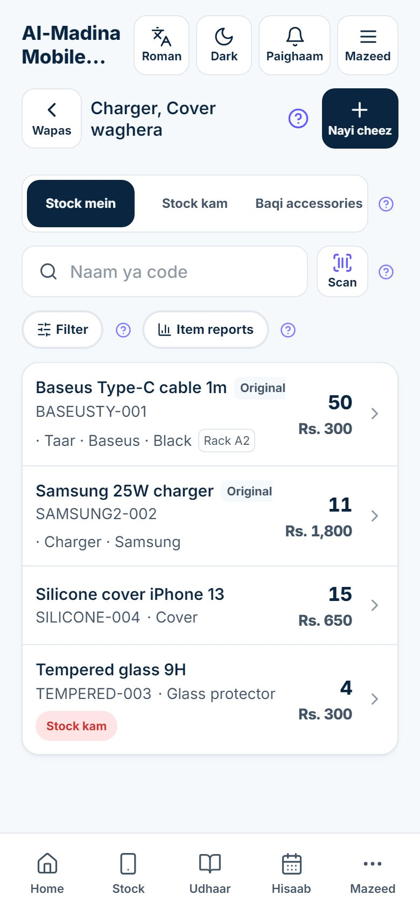
Tasveer 24: Charger, cover waghera: items ginti, qeemat, shelf aur kam stock ke badge ke saath
Chand aasaan usool
Ginti hamesha piece mein hoti hai. Aap darjan, dabbe ya carton mein khareed sakte hain, lekin stock piece mein rakha jata hai.
Bechne ki qeemat ek piece ki qeemat hai jo aam customer ke liye hai.
Har khareed apna alag batch ban kar rehti hai, tareekh, supplier, tadaad aur laagat ke saath. Jab aap bechte hain, sab se purana batch pehle khatam hota hai.
Item par kuch bhi kabhi delete nahi hota. Agar ginti ghalat ho, to aap wajah ke saath use adjust karte hain, aur yeh adjustment history mein likhi jaati hai.
Naya item daalna
Misaal:Baseus Type-C cable 1m, bechne ki qeemat Rs. 300 fi piece, kabhi Rs. 200 se kam nahi, jab 20 reh jayein to khabardar karein.
Charger, cover waghera mein Nayi cheez dabayein.
Naam likhein: Baseus Type-C cable 1m.
Qisam chunein: Taar. List mein charger, cable, cover, glass protector, earphones, power bank, watch, speaker aur bohat kuch hai, aur aap apni qisam bhi daal sakte hain.
Bechne ki qeemat likhein: 300.
Reorder at likhein: 20. Yeh aap ki kam stock ki warning hai.
Agar shelf par pehle se kuch maujood hain, to Shuru ki tadaad aur Fi piece cost likhein.
Agar mazeed bharna chahte hain to Mazeed tafseel dabayein. Yeh sab ikhtiyari hai: Brand, Kis phone par lagta hai (masalan "iPhone 14/15, Samsung A series"), Quality (Original, Company / OEM, A-grade, Copy / China, Used), Rang, Size, Capacity (mAh / GB), Connector, Watt, Wholesale qeemat, Kam se kam qeemat (200), Promo qeemat us ki tareekhon ke saath, Warranty (din), Shelf / rack, Ziyada se ziyada stock, Supplier ke code aur Note / tafseel.
Save karein dabayein. Item ko foran apna code aur barcode mil jata hai.
Agar bilkul milta julta item pehle se maujood ho, to app Milte julte item pehle se maujood dikhati hai, taa ke aap ek hi item do baar na banayein.
Items piece, darjan ya dabbe mein khareedna
Items aam tor par dealer se khareede jaate hain, aksar usi bill par jis par phone hote hain.
Stock daalein dabayein aur dealer chunein.
Accessory / ghari daalein dabayein.
List se item chunein, ya Nayi cheez (list mein nahi) dabayein, us ka naam, woh kya hai aur fi piece bechne ki qeemat bharein, aur Save kar ke daalein dabayein.
Jis unit mein khareeda us par dabayein: Piece, Darjan, Dabba ya Carton. Kitne khareede aur ek unit ki kitni qeemat di, likhein.
App ek piece ki laagat khud nikaal deti hai: Rs. 1,200 fi darjan ke 3 darjan ban jaate hain Rs. 100 fi piece ke 36 piece.
Agar chahein to supplier ka bill number aur koi kiraya ya loading charge bharein. Kiraya lines par baant kar laagat mein jod diya jata hai.
Khareed aam tareeqe se save karein (abhi diye, baqi dealer ke khate mein). Natije ki screen par agar sticker chahiye to Item label print karein dabayein.
Ek darjan, dabbe ya carton mein kitne piece hote hain, yeh ek dafa Settings → Item settings mein set hota hai. Kisi ek item ka apna dabbe ka size bhi ho sakta hai (Is item ke aik dabbe mein piece).
Batch aur ausat laagat
Har khareed ek batch hai. Item ke page par har batch ki list hoti hai, supplier, tareekh, kitne khareede, kitne baqi hain, aur ek piece ki laagat ke saath.
Misaal: aap ne Rehman Traders se Rs. 100 fi piece par 3 darjan Baseus cable khareede, aur baad mein Rs. 120 fi piece par 2 darjan aur. Ab aap ke paas 60 piece hain aur Ausat qeematRs. 108 hai. Aap 10 piece bechte hain: yeh pehle Rs. 100 wale purane batch se nikalte hain, is liye woh 26 / 36 baqi dikhata hai aur naya batch abhi bhi 24 / 24 baqi dikhata hai.
Maalik tay karta hai ke stock ki qeemat kaise lagani hai, Settings → Item settings → Stock valuation mein: Average cost (default) ya FIFO (pehle purana), jis mein har bikri ki laagat usi batch se li jaati hai jis se woh asal mein nikli.
Items bechna
Bechein mein Accessory / ghari dabayein. Yahi button phone ke neeche bhi aata hai, taa ke aap us ke saath charger ya cover bech sakein.
Item par dabayein, ya bas us ka barcode scan karein. Ek aur jodne ke liye dobara scan karein.
Line dikhati hai ke stock mein kitne hain. Qeemat khud bhar jaati hai: aam customer ke liye retail qeemat, agar customer dealer mark hai to Dealer qeemat, ya promotion chal rahi ho to Promo qeemat.
Zaroorat ho to tadaad ya qeemat badlein, aur bikri aam tareeqe se mukammal karein.
Ginti kam ho jaati hai aur munafa laagat se nikal aata hai.
Kuch hifazati intezamaat aap ko bachate hain:
Aap jitne hain us se zyada nahi bech sakte (Stock se zyada), jab tak maalik ne Item settings mein Stock zero ho to bhi bechne dein on na kiya ho.
Kam se kam qeemat se kam bechne par Minimum qeemat se kam — manager chahiye aata hai. Yeh wahi qeemat ka usool hai jo phone ko us ki bechne ki qeemat se kam bechne par lagta hai (chapter 15 dekhein).
Laagat se kam bechne ke liye maalik chahiye.
Baqi accessories
Kabhi charger ya earphones ka wada hota hai lekin abhi diye nahi gaye. Baqi accessories tab inhein sambhal kar rakhta hai taa ke kuch bhool na jaye:
Dealer se: dealer ne abhi aap ko kuch dena hai, masalan Galaxy A55 ka charger, us tareekh ke saath jis ka us ne wada kiya.
Gahak ko: aap ne customer se kisi cheez ka wada kiya, masalan Vivo Y36 ke saath earphones.
Yeh sawalon Phone ke saath kya kya aaya? (khareedte waqt) aur Phone ke saath kya kya de rahe hain? (bechte waqt) se aate hain, jahan aap aane wali cheez ke liye Baad mein jawab dete hain. Jab cheez de di jaye, to De diya dabayein.
Stock alert (kam stock)
Har item ka ek Reorder at level hota hai. Jab ginti us level tak ya us se neeche aa jaye:
item par laal Kam stock badge aa jata hai aur woh Kam stock tab mein nazar aata hai;
Home par Dhyan dein ke neeche "N cheezein kam stock mein" aata hai, aur us par dabane se Kam stock tab khulta hai;
maalik ki raat wali report mein kam items ki list hoti hai.
Item reports → Kam stock ek qadam aage jata hai: yeh kam items ko un ke aakhri supplier ke hisaab se group karta hai aur batata hai ke kitne mangwane hain, andazan laagat ke saath, taa ke aap tayyar list ke saath dealer ko phone kar sakein. Baqi item reports dikhati hain Stock ki maliyat (laagat par aur bechne ki qeemat par), Tez / sust bikne wale, qisam aur brand ke hisaab se Munafa, Ruka hua stock (kuch dinon se nahi bika) aur Suppliers.
Stock adjust karna (toot phoot, gum, ginti ki durusti)
Ginti sirf khareed, bikri aur wapsi se badalni chahiye. Jab koi piece toot jaye, gum ho jaye, ya shelf ki ginti farq ho, to use adjust karein:
Item kholein aur Stock theek karein dabayein.
Tabdeeli (+/−) mein tabdeeli likhein, masalan do toote covers ke liye -2.
Wajah (lazmi) mein wajah likhein, masalan toot gaye ya ginti ki durusti. Wajah ke baghair app save nahi karti.
Save karein dabayein. History mein −2 ki Adjust wali line aap ke naam, waqt aur wajah ke saath aa jaati hai.
Item ka page
Kisi bhi item par daba kar us ka page kholein. Yeh dikhata hai:
tafseel: Bechne ki qeemat, Wholesale qeemat, Kam se kam qeemat, Ausat qeemat, Fi piece munafa (margin % ke saath), Stock ki maliyat, Reorder at aur Shelf / rack;
Khareedari ke batch: har khareed supplier, tareekh, pack (masalan 3 Darjan), kitne baqi aur laagat ke saath;
History: har harkat us ki tareekh aur raqam ke saath: Khareeda (kis se, kitne, kitne abhi dene baqi), Becha (kis ko, invoice number ke saath), Wapas, Adjust, Repair mein laga, aur bechne ki qeemat, kam se kam qeemat aur ausat laagat ki Qeemat badli wali lines. Har line ke daayein taraf tabdeeli (masalan −4) aur us ke baad ki ginti nazar aati hai.
Page ke buttons: sab ke liye Sticker print karein, aur maalik aur manager ke liye upar Stock theek karein, Badlein aur Mitayein (woh item jo aap ab nahi bechte; us ke purane bill aur history rehte hain).
Hamari cable wali misaal mein page Rs. 300 bechne ki qeemat par Ausat qeemat Rs. 108, Fi piece munafa Rs. 192 (178%), aur baqi 50 piece ke liye Stock ki maliyat Rs. 5,400 dikhata hai.
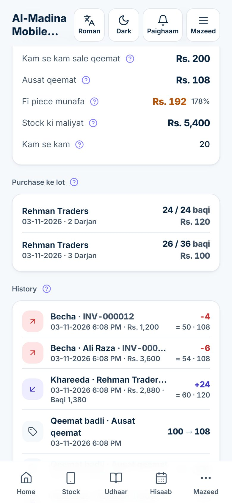
Tasveer 25: Item ka page: ausat laagat, fi piece munafa, stock ki maliyat, khareedari ke batch aur history
14. Repair aur repair labs
Repair ka hissa customer ke phone ka us lamhe se peecha karta hai jab woh counter par aata hai, jab tak woh wapas us ke haath mein na pahunch jaye: kya kharabi hai, aap ne kya wada kiya, us ne kitna advance diya, kya woh bahar kisi lab gaya, lab ne kitna charge kiya, aur aakhir mein us ne kitne diye.
Har job chaar marhalon se guzarti hai, jo job par ek bar ki shakal mein nazar aate hain: Phone liya → Theek ho raha hai → Tayyar → Wapas de diya. Har job ko REP-000004 jaisa number milta hai.
Repair ki list
Ise Home → Marammat, ya Mazeed → Marammat se kholein. Upar Marammat ke liye phone lein aur Repair labs hain. Un ke neeche:
Jaari woh jobs dikhata hai jo abhi wapas nahi di gayin; Sab har job dikhata hai.
Search box job ko Job no, IMEI, naam ya phone se dhoondta hai.
Har line par phone aur kharabi (masalan Vivo Y20 — screen par lines), customer, job number, tayyar hone ki tareekh, marhala (Phone liya, Theek ho raha hai, Tayyar) aur raqam hoti hai.
Jab phone bahar kisi lab mein ho, to line par lab ke naam ke saath Lab mein likha hota hai, aur agar lab der kar rahi ho to laal.
Jab jobs tayyar hon, to ek line Tayyar hai — gahak ko call karein aap ko unhein phone karne ki yaad dilati hai.
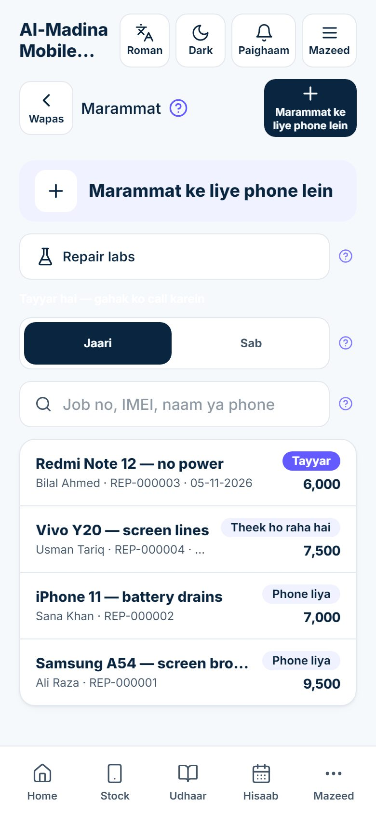
Tasveer 26: Repair ki list: jaari jobs marhale aur raqam ke saath, aur Repair labs ka rasta
Phone repair ke liye lena
Misaal:Usman Tariq ek Vivo Y20 laata hai jis ki screen par lines hain. Aap ke khayal mein bill takreeban Rs. 7,500 banega. Woh Rs. 2,000 advance deta hai. Aap teen din mein dene ka wada karte hain.
Marammat ke liye phone lein dabayein.
Gahak ke neeche naam, phone ya CNIC se dhoondein aur Usman Tariq par dabayein. Naye customer ke liye + daba kar us ka naam aur mobile number likhein.
Phone ka naam (jaise Samsung A54) mein Vivo Y20 likhein.
Kya kharabi hai? ke neeche milti julti kharabi ke chips par dabayein (masalan Screen / display). Agar us ki kharabi list mein nahi, to use Koi aur kharabi (likhein) mein likhein: screen par lines.
Kab tak tayyar ke neeche Aaj, Kal, 3 din dabayein, ya koi tareekh chunein.
Agar IMEI aur jo cheezein woh phone ke saath chhor gaya (SIM, memory card, cover, charger, dabba ya earphones) likhni hon to IMEI, phone ke saath chhori cheezein dabayein.
Advance aap ke cash mein aa jata hai aur job ke khilaaf gina jata hai. Agar customer phone lene kabhi wapas na aaye, to bhi record mein bilkul likha hota hai ke us ne kitne diye.
Jab aap us par kaam kar rahe hon
Repair ki list se job kholein. Marhalon wali bar ke neeche aap ke paas hain:
Kaam shuru: job Theek ho raha hai mein chali jaati hai.
Purzon ka intezar: masalan, market se screen mangwayi gayi hai.
Theek nahi hua: repair ke baghair job band karta hai (phone baghair theek hue wapas diya jata hai).
Theek ho gaya: bill kholta hai (neeche dekhein).
Neeche Sticker print karein (repair sticker), Parchi print (customer ki job sheet dobara), aur Document ki zubaan hain, jo chunti hai ke print hui parchi English mein ho ya Urdu mein.
Phone bahar lab ko bhejna
Market mein bohat si dukaanein har cheez khud theek nahi kartin. Board ki kharabi ya iPhone ki screen aksar kisi mahir lab ya technician ke paas jaati hai. Mobile Shop har aise chakkar ka poora record rakhta hai: phone kis lab ke paas hai, kab se, unhein kya karna hai, unhon ne kitna charge kiya, aur dukaan ne unhein kitne dene hain.
Misaal (jaari): aap ka technician Vivo ki screen theek nahi kar sakta. Aap use Zain Mobile Lab (Hall Road) ko de dete hain. Woh Rs. 4,000 batate hain aur do din mein wapas dene ka wada karte hain.
Job par Lab ko bhejein dabayein.
Repair lab / technician ke neeche Zain Mobile Lab (Hall Road) chunein. Nayi lab wahin us ke naam aur phone ke saath daali ja sakti hai.
Lab kya kare mein kaam likhein, masalan screen badalni hai.
Lab ka bataya rate likhein: 4000. Yeh sirf record ke liye hai; asal charge phone wapas aane par likha jata hai.
Wapsi mutawaqqa chunein: woh din jis ka lab ne wada kiya.
Bhej dein dabayein.
Job Theek ho raha hai mein chali jaati hai, aur us par ek card Abhi lab mein aa jata hai jis par lab ka naam, Call button, bhejne ki tareekh, wahan kitne din se hai, mutawaqqa din aur bataya hua rate hota hai. Agar lab mutawaqqa din tak wapas na de, to card laal ho jata hai aur likha aata hai Der: mutawaqqa din tak wapas nahi aaya.
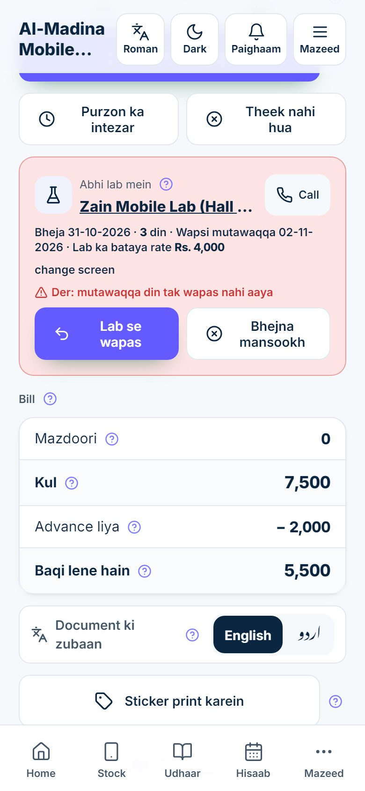
Tasveer 28: Repair job jab phone lab mein ho: der ki warning, Lab se wapas aur Bhejna mansookh
Har job par sirf ek lab ka chakkar khula reh sakta hai. Agar aap ne ghalat lab likh di, ya lab ne phone kabhi liya hi nahi, to Bhejna mansookh dabayein aur Kyun mansookh? mein wajah likhein. Mansookh hua chakkar history mein rehta hai.
Kya lab ne theek kiya? ka jawab dein: Theek ho gaya ya Theek nahi hua.
Is chakkar ka Lab ka charge likhein: 4000. Agar lab theek nahi kar saki lekin check karne ki fees le li, tab bhi likhein.
Lab ko abhi diye mein woh likhein jo aap ne mauqe par cash diya, masalan 1500. App dikhati hai Rs. 2,500 lab ke khate mein (dukaan ne dene hain).
Save karein dabayein.
Agar Theek ho gaya tha, to job Tayyar ho jaati hai aur customer ko aam "aap ka phone tayyar hai" wala message chala jata hai. Agar Theek nahi hua tha, to job khuli rehti hai aur aap use kisi aur lab ko bhej sakte hain.
Har chakkar job par Lab ke chakkar ke neeche likha hota hai: kaun si lab, bhejne aur wapsi ki tareekhein, theek hua ya nahi, aur charge. Kuch bhi kabhi delete nahi hota.
Lab ke charge ka kya hota hai
Customer ke phone par lab ka charge us repair ka kharcha hai. Aap ka repair ka munafa hai bill minus purze minus lab ke charges.
Aap ke apne stock ke phone par lab ka charge us phone ki laagat mein jud jata hai.
Charge ek hi dafa likha jata hai, jab phone wapas aata hai. Jab aap phone customer ko dete hain to dobara nahi likha jata.
Jo aap ne mauqe par nahi diya woh lab ke khate mein rehta hai. Use baad mein lab ke khate se Paise diye ke zariye ada karein, kisi bhi aur dealer ki tarah.
Misaal: ek phone Ali Repair Lab jata hai, Rs. 500 check karne ki fees ke saath Theek nahi hua wapas aata hai, phir Zain Mobile Lab jata hai aur Rs. 4,000 mein Theek ho gaya wapas aata hai. Lab ke chakkar dono dikhata hai. Repair ka lab ka kharcha Rs. 4,500 hai.
Jab theek ho jaye
Job kholein aur Theek ho gaya dabayein. Purze aur mazdoori wali sheet khulti hai.
Jo purze lagaye woh + Purza se daalein (naam, tadaad, qeemat). Neeche apne stock ke kisi item par daba kar use Stock se istemal karein: us ki ginti khud kam ho jaati hai.
Mazdoori likhein. Kul likhte likhte nikal aata hai.
Theek ho gaya dabayein. Job Tayyar dikhati hai aur bill: kul, minus Advance liya, barabar Baqi lene hain.
Customer ko phone karne ke liye Call dabayein.
Misaal (jaari): Vivo ka bill Rs. 7,500 mazdoori hai. Advance Rs. 2,000 tha, is liye Baqi lene hainRs. 5,500 hai.
Wapas dena
Jab customer aaye, job kholein aur Gahak ko wapas dein dabayein.
Kul, advance aur Baqi lene hain check karein.
Jo woh deta hai Abhi kitne mile mein likhein: 5500. Agar woh kam de, to app kehti hai Baqi raqam gahak ke khate mein jayegi.
Agar aap repair ki warranty dete hain, to Warranty ke din (agar ho) likhein.
Gahak ko wapas dein dabayein. Job par Wapas de diya aata hai aur woh band ho jaati hai.
Hamari misaal mein dukaan ne Rs. 7,500 ka bill banaya aur lab ne Rs. 4,000 charge kiye, is liye is repair par munafa Rs. 3,500 hai.
Repair labs aur un ka record
Repair ki list par Repair labs dabayein. Aap ko har woh lab aur technician nazar aata hai jis ko aap phone bhejte hain. Har card dikhata hai kitne phone Bheje, kitne abhi Lab mein hain, Theek %, aur Dukaan ne lab ko dene hain. 1 der se jaisa laal badge aap ko khabardar karta hai ke koi lab wada kiye din ke baad bhi phone rakhe hue hai. Upar + daba kar Lab shamil karein.
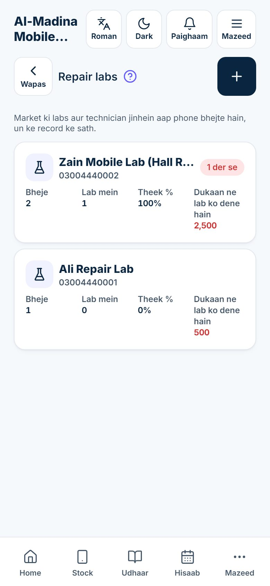
Tasveer 29: Repair labs: har lab bheje, lab mein, theek % aur dukaan ne kitne dene hain ke saath
Kisi lab par daba kar us ka record kholein. Sab se upar Dukaan ne lab ko dene hain us ke phone aur pate ke saath, aur Lab ka khata kholein hai. Phir nau figures:
Figure
Matlab
Bheje
Is lab ko bheje gaye phone (mansookh chakkar nahi gine jaate).
Lab mein
Is waqt is lab ke paas phone.
Der
Wada kiye din ke baad bhi wahan pare phone.
Theek ho gaya
Woh phone jo us ne theek kar ke wapas kiye.
Theek nahi hua
Woh phone jo us ne baghair theek kiye wapas kiye.
Theek %
Tamam wapas aaye phones mein se theek hue.
Ausat din
Woh aam tor par phone kitne din rakhti hai.
Charges
Us ne ab tak jo kuch charge kiya.
Mauqe par ada
Jo aap ne phone lete waqt diya.
Us ke neeche, Lab ke chakkar mein har woh phone hai jo aap ne wahan bheja, job number, tareekhon, lage din, kaam, aur natije (Lab mein, charge ke saath Theek ho gaya, Theek nahi hua) ke saath.
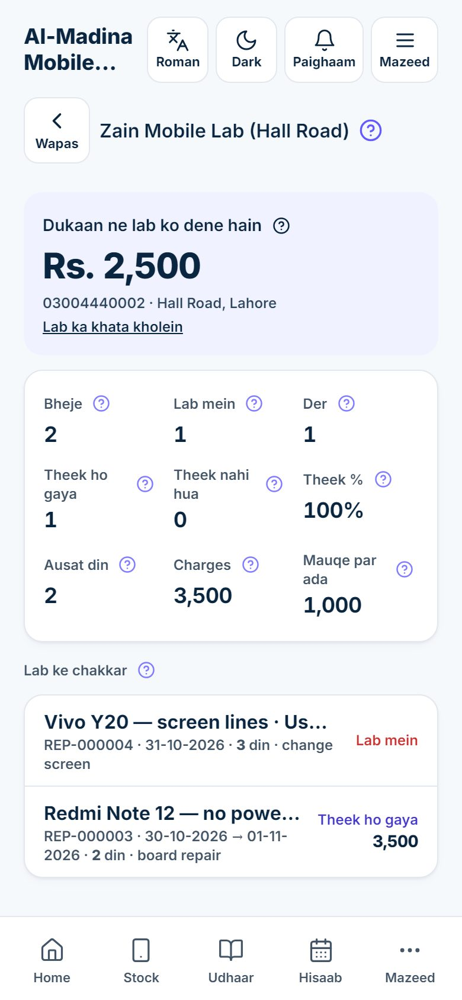
Tasveer 30: Ek lab ka record: dukaan ne kitne dene hain, nau figures aur har lab ka chakkar
Repair sticker
Jab customer ka phone aaye, us par ek chhota sticker chipka dein taa ke woh bench par ya lab mein kabhi kisi doosre phone ke saath gadmad na ho.
Job par Sticker print karein dabayein. Repair sticker sheet khulti hai: Ise customer ke phone par chipkayein. Chunein ke is par kya ho.
Is par kya ho ke neeche har field par daba kar use lagayein ya hatayein: Dukaan ka naam, Job number, Barcode, Gahak, Mobile number, Phone model, IMEI, Kharabi, Sath aaya, Aane ki tareekh, Kab tak tayyar, Andaza, Advance, Baqi raqam, Lab aur Note.
Sticker ka size (50×30, 58×40, 60×40, 70×40 mm ya A4 sheet) aur Har aik ki copies (1, 2 ya 3) chunein.
Print karein dabayein.
Fields, size aur copies ka aap ka intikhab agli baar ke liye isi phone ya computer par yaad rehta hai.
Sticker par barcode job number hai. App mein kahin bhi ise scan karein aur repair job foran khul jaati hai, jo tab bohat kaam aata hai jab lab ek saath paanch phone wapas kare.
Misaal: Vivo ke sticker par likha hai AL-MADINA MOBILE ZONE · REP-000004 · Usman Tariq · 03215550003 · Vivo Y20 — screen lines · Screen / display · Ready 02-11 · Left Rs. 5,500, aur neeche barcode.
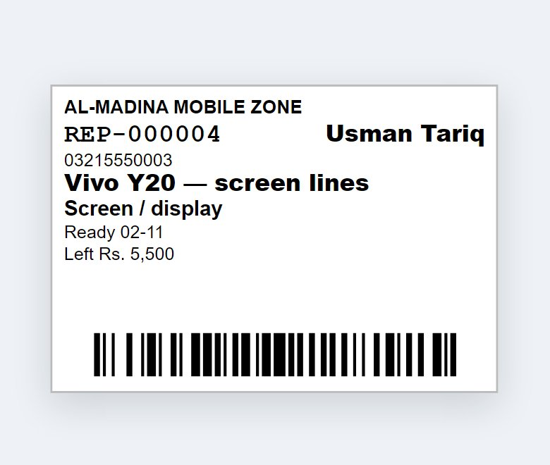
Tasveer 31: Print hua repair sticker job number, customer, phone, kharabi, tayyar hone ki tareekh aur barcode ke saath
Gahak ko status ka link bhejna
Gahak aksar phone kar ke poochte hain ke un ka mobile tayyar hua ya nahi. Unhein ek baar link bhej dein, phir woh khud dekh lete hain.
Repair ki job kholein aur Gahak ko status ka link bhejein dabayein.
WhatsApp par bhejein dabayein. WhatsApp gahak ke number aur tayyar paigham ke saath khulta hai; bhej dein. Ya Link copy karein daba kar kahin bhi laga dein.
Gahak baghair login link kholta hai aur dukaan ka naam, mobile aur job number, har marhala (Mil gaya, Kharabi mil gayi, Kaam jaari, Tayyar, De diya) apni tareekh ke saath, tayyar hone ka din, bill, di hui aur baqi raqam, aur Dukaan ko call karein ka button dekhta hai. Jaise jaise aap job aage barhate hain, safha badalta hai.
15. Doosri dukaanon ko amanat
Market mein dukaanein aksar ek doosre ko phone "amanat par" deti hain: doosri dukaan use apne customer ko dikhati hai aur ya to bech deti hai ya wapas le aati hai. Phone bikne ya wapas aane tak aap ka rehta hai. Mobile Shop aise har phone ka hisaab rakhta hai taa ke koi bhi kisi aur ke counter par bhool na jaye.
Phone amanat par dena
Misaal: aap ek Apple iPhone 12 teen din ke liye Star Mobiles (Hall Road) ko dete hain.
Mazeed → Amanat par jayein. Upar wala card dikhata hai kitne phone is waqt doosri dukaanon par hain.
Phone amanat par dein dabayein.
Kaun sa phone?: list mein iPhone 12 par dabayein, ya use dhoondein ya scan karein.
Kis dukaan ko?: Star dhoondein. Nayi dukaan wahin + se daali ja sakti hai.
Wapsi: 3 din dabayein (ya 7, 15, 30 din, ya Tareekh nahi).
Chahein to Note likhein, aur Amanat par dein dabayein.
Yahi button, Amanat par dein, phone ke apne page par bhi hai.
Ab phone stock list mein Amanat par dikhata hai (aur aap ke counter par ghalti se nahi bikta), aur Amanat ki screen par ek card ki shakal mein aata hai jis par likha hota hai ke kitne din se bahar hai (0 din se bahar), dukaan ka naam, dene ki tareekh aur kab tak wapas, aur ek Dukaan button jo dukaan ka page khol kar unhein call karne deta hai.
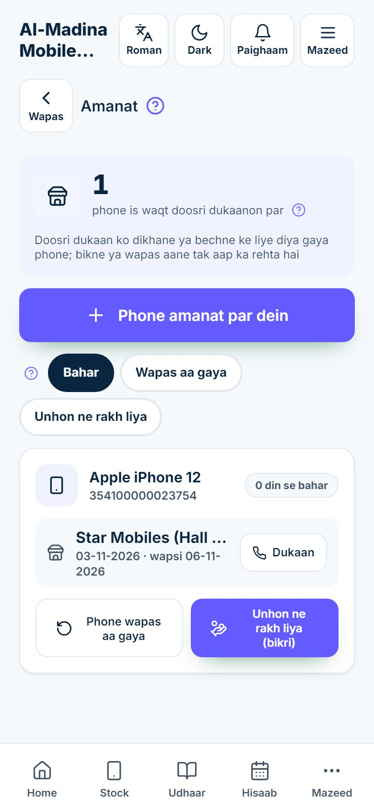
Tasveer 32: Amanat: doosri dukaanon par phone, Phone wapas aa gaya aur Unhon ne rakh liya (bikri) ke saath
Jab wapas aaye, ya woh rakh lein
Amanat ki screen par teen tabs hain: Bahar, Wapas aa gaya aur Unhon ne rakh liya. Bahar mein har card ke neeche:
Phone wapas aa gaya: app poochti hai Kya yeh phone aap ke paas wapas aa gaya? Yeh wapas aap ke stock mein chala jayega.Ji, wapas aa gaya dabayein. Phone dobara Stock mein ho jata hai.
Unhon ne rakh liya (bikri): doosri dukaan ne use bech diya ya rakhna chahti hai. Tay shuda qeemat likhein (masalan 150000) aur jo unhon ne Abhi diye (masalan 100000). Card par Un ke khate mein50,000 aata hai. Pakka karein dabayein. Bikri mein ek aam bikri ka bill ban jata hai, aur baqi us dukaan ke khate mein rehta hai.
Jis amanat ki wapsi ki tareekh guzar gayi ho us par Der ho gayi aata hai aur woh upar wale card par gini jaati hai. Unhon ne rakh liya tab mein har us phone ke liye Bill kholein button rehta hai jo unhon ne rakh liya.
Bechne ki qeemat, qeemat ki tabdeeli aur kaun kam par bech sakta hai
Har phone ki ek bechne ki qeemat hoti hai: woh qeemat jo aap us ki chahte hain. Yeh phone khareedte waqt lagti hai, aur aap ise us ke page par Qeemat badlein se badal sakte hain.
Bikri ke waqt
Bill par qeemat ke box ke saath Tay qeemat: 40,000 nazar aata hai. Asal Bechne ki qeemat likhein: tay qeemat sirf ek nishana hai.
Agar market badal gayi hai, to Tay qeemat badlein tick karein, nayi tay qeemat likhein (maan lein 45,000) aur wajah. Phir bikri nayi figure par hoti hai.
Bechne se pehle check karein
Jab aap Bikri mukammal karein dabate hain, aakhri screen Bechne se pehle check karein bill ka har phone dikhati hai: us ki laagat (sirf maalik aur manager), tay qeemat, agar badli to nayi tay qeemat, bechne ki qeemat aur munafa. Jab koi phone apni tay qeemat se kam bik raha ho to laal line aati hai. Bill likhne ke liye Tasdeeq karein aur bill banayein dabayein.
Us ke baad ek hi record hota hai: customer ki receipt, phone ki history, reports aur khata sab ek hi bechne ki qeemat dikhate hain.
Kuch bhi mitaya nahi jata
Phone ki history mein pehli tay qeemat (40,000), ek line Qeemat badli 40,000 → 45,000 · bikri ke waqt · market rate bechne wale ke naam aur waqt ke saath, aur 45,000 par bikri rehti hai. Phone ke paise wale card par aap ko Ab tay qeemat aur, agar farq ho to, Pehli tay qeemat nazar aati hai.
Qeemat ke usool: kaun tay qeemat se kam par bech sakta hai
Yeh maalik Mazeed → Settings → Qeemat ke usool mein tay karta hai. Do settings hain:
Tay qeemat se kam bechna
Tay qeemat badalna
Har ek ko yeh rakha ja sakta hai:
Choice
Is ka matlab
Koi bhi
Har staff member yeh kar sakta hai.
Maalik / manager
Staff ko message aata hai ke is ke liye maalik ya manager chahiye, aur woh aage nahi barh sakte.
Maalik ke PIN se
Check wali screen par PIN ka box aata hai. Maalik wahin apna fori PIN likhta hai, bikri ho jaati hai, aur manzoori record par likhi jaati hai.
Maalik aur manager hamesha dono kaam kar sakte hain. Maalik apna PIN Mazeed → Staff mein set karta hai. Paanch ghalat PIN box ko das minute ke liye band kar dete hain. Yahi usool kisi item ko us ki kam se kam qeemat se kam bechne par bhi lagta hai (chapter 13).
Misaal: aap ka salesman Kashif Rs. 40,000 ka phone Rs. 38,500 mein bechna chahta hai. Usool Maalik ke PIN se hai. Check wali screen par laal line dikhati hai ke phone tay qeemat se Rs. 1,500 kam ja raha hai. Aap us ke phone par apna PIN likhte hain, bill ban jata hai, aur record mein "maalik ki manzoori" likha aata hai.
Qeematon ki report
Report → Qeematein (maalik aur manager) chune hue arse mein har tay qeemat ki tabdeeli aur tay qeemat se kam har bikri ki list deti hai: phone aur IMEI, kis ne kiya, purani aur nayi qeemat ya tay qeemat ke muqable mein bechne ki qeemat, farq, munafa, wajah, bill number, aur kis ne PIN se manzoori di. Upar har bande ki ginti hoti hai, taa ke aap ek nazar mein dekh sakein ke sab se zyada discount kaun deta hai.
16. Udhaar khata aur payments
Har dukaan kuch cheezen udhaar par deti hai aur kuch udhaar par leti hai. App mein isay udhaar kehte hain, aur har bande ka ek khata hota hai (us ka hisaab ka safha). App har khata aap ke liye rakhti hai: us bande ke saath har sale, khareed, payment, wapsi aur len-den khud hi us mein aa jata hai, aur baqaya hamesha inhi records se nikalta hai. Aap kabhi baqaya haath se nahi likhte.
Udhaar khata kholein
Neeche wali bar mein Udhaar dabayein (ya Home → Udhaar, ya More → Udhaar).
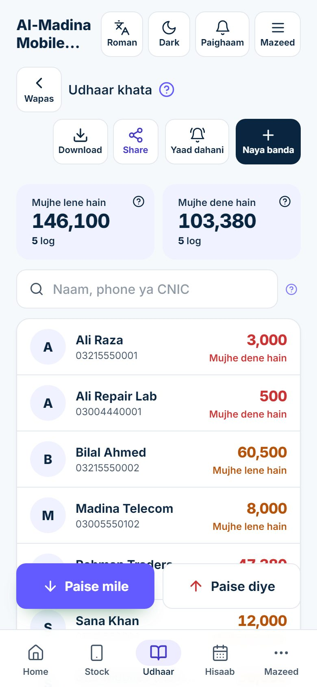
Tasveer 33: Udhaar khata: kis ne aap ko dena hai aur aap ne kis ko dena hai
Upar do bade box nazar aate hain:
Mujhe lene hain woh kul raqam hai jo logon ne aap ko deni hai, aur kitne log hain. Is par dabayein to sirf woh log dikhenge.
Mujhe dene hain woh kul raqam hai jo aap ne doosron ko deni hai (dealer, doosri dukaanein, repair labs), aur kitne logon ko.
In ke neeche logon ki list hai. Har naam ke saath raqam aur rang mein Mujhe lene hain ya Mujhe dene hain likha hota hai. Jis bande ka hisaab barabar ho us par Saaf likha aata hai.
Upar wale button:
Download poora khata PDF, Excel ya CSV mein deta hai. Share isay seedha WhatsApp ya kisi aur app par bhejta hai.
Yaad dahani WhatsApp reminder ki list kholta hai (neeche dekhein).
Naya banda customer, dealer, doosri dukaan ya karigar daalta hai.
Kisi ko jaldi dhoondne ke liye search box (Naam, phone ya CNIC) istemal karein. Phone number ke chand hindse bhi kaafi hain.
Naya banda daalein
Naya banda dabayein.
Naam likhein aur agar ho to Mobile number (+92 ke baad, pehle 0 ke baghair, maslan 3001234567). Number zaroori nahi; number ke baghair us shakhs ko WhatsApp message ya reminder nahi jata. Baad mein Edit se daal sakte hain.
Qism chunein: Gahak, Dealer, Doosri dukaan ya Karigar.
Mazeed likhna ho to Mazeed tafseel dabayein: CNIC (aur card ka scan), Shehar, Pata, Note aur dealer ke liye wholesale qeemat. Jis bande ki yeh tafseel pehle se ho, usay badalte waqt yeh khud khul jata hai.
Agar is bande ne aap ke purane register mein pehle se dena tha (ya aap ne us ko dena tha), to Purana baqaya mein likhein aur Yeh mujhe dega ya Main isay doon ga chunein.
Mehfooz karein dabayein.
Paise mile (customer aap ko paise deta hai)
Misaal: Bilal Ahmed ne aap ko ek phone ke Rs. 60,500 dene hain. Aaj woh Rs. 10,000 laya hai.
Paise mile dabayein (khate par, ya Bilal ke apne safhe par).
Agar pehle se chuna hua nahi to Bilal Ahmed chunein. Us ka baqaya naam ke saath dikhta hai.
Raqam mein 10000 likhein.
Tareeqa chunein (neeche list dekhein). Yahan Cash hai.
Chahein to Note daalein (maslan "pehli qist").
Paise lein dabayein.
Chaar tareeqe:
Cash: us ne counter par diye. Paise aap ke galle mein jate hain.
Online: us ne bank transfer, Easypaisa, JazzCash ya kisi aur app se bheje. Chunein ke aap ke kis account mein aaye; galla nahi badalta.
Cheque: us ne cheque diya. Cheque clear hone tak apne alag account mein rehte hain.
Bahar se: kisi rishtedaar ne remittance service se bheje. Raqam un ki currency mein aur rate likhein (maslan 500 SAR × 74.20); app rupay khud nikal leti hai.
Bilal ka baqaya foran Rs. 50,500 ho jata hai. Payment pehle us ke sab se purane baqi bills par lagti hai, is liye us ke bills sahi tor par Pure mile ya Kuch ada dikhate hain. Raseed print karne ya WhatsApp par bhejne ke liye tayyar hai.
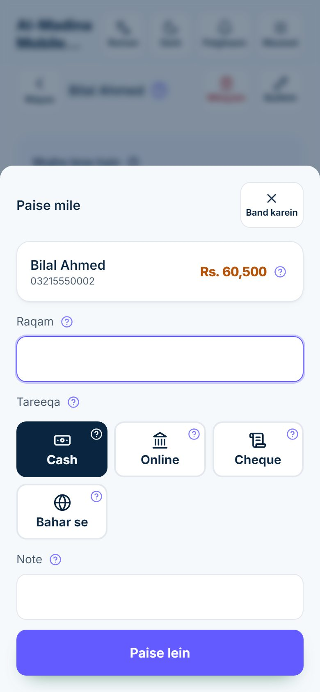
Tasveer 34: Paise mile: raqam aur tareeqa
Paise diye (aap dealer ya seller ko dete hain)
Misaal: aap ne Rehman Traders se paanch phone khareede aur abhi un ke Rs. 47,280 dene hain. Aaj aap apne HBL account se Rs. 20,000 dete hain.
Paise diye dabayein.
Rehman Traders chunein.
Raqam20000, TareeqaOnline, account HBL Current.
Paise dein dabayein.
Rehman Traders ka jo aap ne dena hai woh Rs. 27,280 reh jata hai aur Cash aur bank mein HBL ka baqaya Rs. 20,000 kam ho jata hai.
Bande ka safha
Khate mein kisi bhi naam par dabayein to us ka safha khul jata hai.
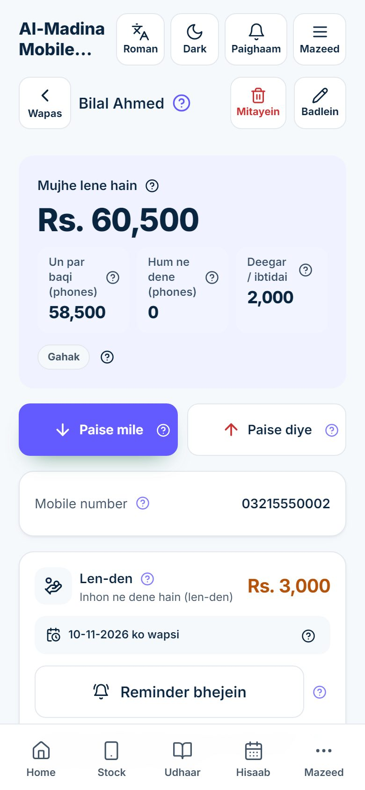
Tasveer 35: Ek bande ka khata safha
Upar bada baqaya card hai: Mujhe lene hain, Mujhe dene hain ya Saaf. Us ke neeche baqaya teen hisson mein bata hota hai taa ke samajh aaye ke yeh kahan se aaya:
Un par baqi (phones) woh hai jo un ke sale bills par abhi tak ada nahi hua.
Hum ne dena (phones) woh hai jo aap ne un se khareed ke bills par abhi dena hai.
Deegar / shuru ka baqi sab kuch hai: purani diary ka shuru ka baqaya, accessories, len-den aur adjustments.
Us ke neeche aap ko milega:
Is bande ke liye Paise mile aur Paise diye button.
Un ka Mobile number, call aur WhatsApp ke saath.
Len-den card (chapter 17).
Woh phone jo aap ne unhein beche aur un se khareede.
Khate ki history: har sale, payment, wapsi aur len-den, tareekh, raqam aur har line ke baad chalta baqaya.
Badlein naam, phone ya qism badalne ke liye, Mitayein ghalti se daale gaye bande ko hatane ke liye, aur Download un ka statement PDF, Excel ya CSV mein lene ke liye.
Karobar ka khulasa: sab kuch ek screen par
Owner aur manager: home screen par Karobar ka khulasa dabayein (yeh More mein bhi hai). Aaj, Kal, Hafta, Is mahine ya apni tareekhein chunein. Har card par Tafseel dekhein us ki screen kholta hai.
Farokht aur Khareedari: wapsi ke baad kul raqam, kitne bill aur mobile, kitna ada hua (cash / bank / cheque) aur kitna udhaar par; owner / manager ke liye munafa.
Aane aur jaane wali raqam: is arse mein wusool aur ada ki gayi payments (kitne log), udhaar diya aur wusool, kharche aur wapsi.
Is mahine: mahine ki pehli tareekh se aaj tak farokht, kharche aur munafa.
Gahak aur dealer: kul kitne, is arse mein kitne naye, aur aaj kul lena / dena.
Stock alert: maujood aur bikne ko mobile, kharab, ID check baqi, repair mein, 60 din se purane, reserved; kam hote ya khatam items.
Yaad dihani: sab se zyada dene wale 10 log aur jin 10 ko dukaan ne sab se zyada dena hai; naam dabayein to khata.
Kis se wusool / kis ko ada: is arse ki payments har shakhs ke hisaab se.
Sab se zyada bike (munafe ke saath) aur sab se zyada khareede model; Haaliya kaam; Har hisse ki kul tadaad — dabayein to us ki list.
Khule baqaya jaat: phone, customer, dealer, technician ke hisaab se lena / dena
Sirf maalik aur manager ke liye. Udhaar screen par upar Lena / Dena dabayein (ya More → Khule baqaya jaat).
Upar ke do card dukaan ka kul hain: Lena hai aur Dena hai. Kisi ek par dabayein to sirf wahi taraf dikhe gi.
Mobile / IMEI, Customer, Dealer aur Technician mein badlein. Yeh wahi raqam chaar tarah dikhati hai; har raqam ek hi dafa gini jati hai.
IMEI, model, naam ya bill number se dhoondein.
Har line Lena aur Dena alag dikhati hai, chahe ek hi phone ya shakhs par dono hon. Misaal: ek phone Bilal se udhaar par 20,000 mein khareeda, Ali ko udhaar par 15,000 mein becha aur Usman ki lab mein repair hua (2,000 abhi nahi diye) to Lena 15,000 aur Dena 22,000.
Jis bill mein ek se zyada phone hon us ka baqaya bill par rehta hai. Phone wale hisse mein yeh ek dafa IMEI ke baghair (kai phone ka bill) mein aata hai, aur shakhs ke neeche bhi dikhta hai.
Jo kisi bill se na jure, jaise purana baqaya ya advance, woh shakhs ke neeche Purana baqaya / deegar mein aata hai.
Kisi line par dabayein to har bill, kaam ya lab charge dikhe ga: shakhs, kul raqam, kitna diya (adaigiyon ke saath) aur kitna baqi. Kholein bill dikhata hai. Raqam wusool karein ya Raqam dein mamool ka adaigi form shakhs, simt, raqam aur bill ke saath bhara hua kholta hai; Yeh ada hoga wali line batati hai ke raqam kis cheez ki hai. Poori ya kuch raqam de sakte hain. Raseed mamool ke mutabiq chhapti hai aur har list taaza ho jati hai.
Ghalti theek karna
Khata ek jild wale register ki tarah hai: safhe kabhi phade nahi jate. Agar koi payment ghalat likhi gayi, to usay kholein aur wajah likh kar cancel karein. Purani entry rehti hai (kati hui) aur ek ulti entry baqaya theek kar deti hai. Phir sahi entry daalein. Is tarah history hamesha dikhati hai ke kya hua aur kis ne kiya.
WhatsApp par udhaar ki yaad dahani
Udhaar khate ke upar Yaad dahani dabayein. Har woh banda jis ne aap ko dena hai list mein aata hai, sab se bada baqaya pehle, saath mein yeh ke un ka khata kitne din se ruka hai aur aakhri yaad dahani kab hui. List ko 7 / 15 / 30 din se purana se chhota karein.
Naam ke saath hara WhatsApp button dabayein.
WhatsApp dukaan ki zubaan mein pehle se likhe paighaam ke saath khulta hai, maslan: "Bilal, Al-Madina Mobile ki taraf se yaad dahani: aap ke khate mein Rs. 50,500 baqi hain."
WhatsApp mein send dabayein.
Sab ko bhejein list mein ek ek kar ke chalta hai taa ke aap har paighaam jaldi bhej sakein.
Khud-ba-khud yaad dahani: More → Notifications → Udhaar ki yaad dahani par jayein, Customers ko khud-ba-khud yaad dahani par tick lagayein, aur chunein ke kitne khamosh dinon ke baad (Jab khata ruka rahe) aur kis waqt. Har raat app un logon ko yaad dilati hai jin ke khate itne din se ruke hain. Khud bhejne ke liye aap ke software provider ki taraf se WhatsApp Business service set honi chahiye; us ke baghair paighaam Paighaam (upar ghanti) mein intezar karte hain aur ek tap se WhatsApp mein khulte hain.
Raat ki report
Owner har raat poore din ka hisaab WhatsApp ya email par le sakta hai, chahe woh dukaan par na ho.
More → Notifications par jayein.
Maalik ko ke neeche Maalik ka WhatsApp number aur/ya Maalik ka email likhein.
Malik ko raat ki report ke neeche Har raat din ka hisaab bhejein · WhatsApp aur/ya · Email par tick lagayein.
Waqt (Waqt) set karein, maslan 21:30.
Har raat ek paighaam aata hai jis mein: bike phone aur raqam, haath mein paise, diya aur wapas mila udhaar, kharche, munafa, kul lene aur dene, aur stock mein phone. Aaj ka hisaab abhi bhejein isay foran bhejta hai, jo test karne ke liye kaam ka hai.
17. Len-den (baghair bill ke diye ya liye paise)
Har market mein log aapas mein baghair kisi sale ya khareed ke paise dete lete hain. Aap ek purane customer ko ghar ki zaroorat ke liye Rs. 25,000 udhaar dete hain. Padosi dukaan aap ko dealer ko dene ke liye ek din ke liye Rs. 50,000 deti hai. Dukaan ki zubaan mein yeh len-den hai. Yeh na sale hai na khareed, is liye is se aap ki sale ya udhaar ke figures kharab nahi hone chahiye.
App len-den ko bande ke bills wale usi khate mein rakhti hai, taa ke bande ka hamesha ek hi total ho. Lekin har jagah is par len-den ka nishan hota hai, is liye har report isay alag dikhati hai, aur baad mein agar woh banda aap se khareede ya aap ko beche to aap isay bill ke saath adjust kar sakte hain.
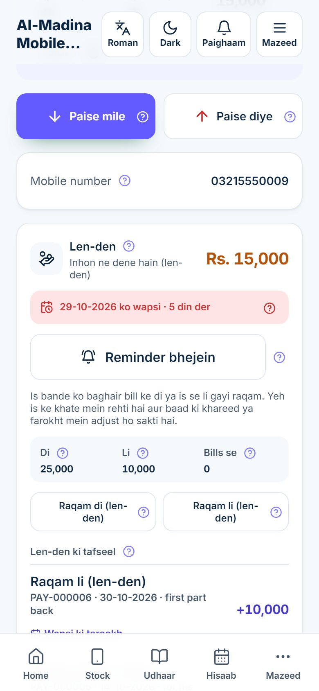
Tasveer 36: Bande ke safhe par Len-den card
Diye hue paise likhein (len-den bahar)
Misaal: Usman, ek purana customer, Rs. 25,000 mangta hai aur 29 tareekh tak wapas karne ka wada karta hai.
Udhaar khate se Usman ka safha kholein (agar naya hai to Naya banda se daalein).
Neeche Len-den card tak jayein aur Paise diye (len-den) dabayein.
Len-den ki raqam likhein: 25000.
Chunein paise kaise gaye: galle se Cash, ya bank ya wallet se Online.
Wapsi ki tareekh (optional) set karein, maslan 29-10-2026.
Chahein to note likhein ("behan ki shadi ke liye").
Save karein — raqam di dabayein.
Ab Usman ke card par Inhon ne dene hain (len-den) Rs. 25,000 aur 29-10-2026 ko wapsi dikhta hai. "Len-den" naam ki ek chhoti raseed print ki ja sakti hai ya usay bheji ja sakti hai.
Liye hue paise likhein (len-den andar)
Misaal: saath wali Madina Telecom aap ko Rs. 50,000 cash udhaar deti hai.
Madina Telecom ka safha kholein.
Paise liye (len-den) dabayein.
Raqam 50000, tareeqa Cash, agar tay hui ho to wapsi ki tareekh.
Save karein — raqam li dabayein.
Card par Hum ne dene hain (len-den) Rs. 50,000 dikhta hai. Paise ab aap ke galle mein hain, aur din ka hisaab isay Len-den liya dikhata hai, sale nahi.
Len-den card kya dikhata hai
Khula len-den bade hindson mein, Inhon ne dene hain (len-den), Hum ne dene hain (len-den) ya Koi len-den baqi nahi ke saath.
Wapsi ki tareekh: tareekh ke saath wapsi, Aaj wapsi hai, ya laal mein 5 din late. Jo paise dukaan ne dene hain un ke liye likha aata hai tak hum ne wapas dene hain aur tareekh.
Diye: len-den ke woh tamam paise jo dukaan ne is bande ko diye.
Liye: is bande se liye gaye len-den ke tamam paise, us ke wapas kiye paise samet.
Bills se: khate ke baqaye ka baqi hissa jo bills se aata hai, len-den se nahi.
Len-den ke indraaj: har entry apne number, tareekh aur note ke saath. Diye minus ke saath, liye plus ke saath. Cancel hui entries kati hui dikhti hain.
Hal ki hui misaal: aap ne Usman ko Rs. 25,000 diye. 30-10 ko us ne Rs. 10,000 wapas kiye. Card dikhata hai Diye 25,000, Liye 10,000, aur Inhon ne dene hain (len-den) Rs. 15,000.
Jab banda wapas kare
Len-den ke wapas aane wale paise bhi len-den hain. Bande ka safha kholein aur jitne us ne wapas kiye utni raqam ke saath Paise liye (len-den) dabayein. Is ke liye Paise mile istemal na karein, kyun ke woh bills ke liye hai.
Isi tarah, jab aap Madina Telecom ko udhaar liye paise wapas karein, to Paise diye (len-den) istemal karein.
Wapsi ki tareekhen aur yaad dahani
Entry likhte waqt ya baad mein tareekh set karein: Len-den ke indraaj mein entry ke neeche tareekh wali line dabayein, nayi Wapsi ki tareekh chunein aur Tareekh save karein dabayein.
Jab tareekh qareeb ho ya guzar jaye, card laal ho jata hai aur late dinon ki tadaad dikhata hai.
Yaad dehani bhejein dabayein. WhatsApp raqam aur tareekh ke saath tameez wale paighaam se khulta hai. Send dabayein. Phir card par tareekh ke saath Aakhri reminder dikhta hai.
Agar khud-ba-khud yaad dahani on hai (More → Notifications → Udhaar ki yaad dahani), to app un logon ko bhi yaad dilati hai jin ka len-den kal wapas hona hai ya late hai, zyada se zyada teen din mein ek baar.
Home screen ka Dhyan dein bhi "len-den wapas karne mein late log" dikhata hai.
Len-den ko bill ke saath adjust karein
Kabhi wahi banda baad mein aap se phone khareedta hai, ya aap ko bechta hai. Pehle se diye paise phir us bill ko ada kar sakte hain.
Misaal: Kamran ne aap ke paas Rs. 10,000 len-den ke tor par chhore (aap ne Paise liye (len-den) likha). Agle hafte woh Rs. 8,000 ka handsfree, charger aur cover udhaar par khareedta hai. Ab us ke safhe par app ek card Bills se milayein dikhati hai: "Un ke diye paison mein se Rs. 8,000 un ke khule sale bills ada kar sakte hain".
Bande ka safha kholein.
Bills se milayein card dhoondein.
Abhi adjust karein dabayein.
Bill Pure mile ho jata hai, aur Rs. 2,000 len-den ke tor par khule rehte hain. Khate ka total bilkul nahi badalta; sirf bills ab ada dikhte hain. Galle mein koi paisa nahi hilta.
Ulta bhi aise hi hota hai: dukaan ke diye paise us bande ke dukaan ke khule khareed bills ada kar sakte hain. Purane advance pehle istemal hote hain, phir len-den, sab se purana pehle.
Ghalat len-den entry cancel karna
Len-den entries mein ghalat entry ke saath Cancel dabayein (owner ya manager), wajah likhein, phir Sirf cancel karein, ya agar ulti taraf daali gayi thi to Cancel kar ke diye / liye mein daalein: doosri taraf usi raqam ke saath khulti hai; tareeqa dekh kar save karein. Cancel entry list mein kati hui rehti hai, aur baqaya aur cash ulti entry se theek ho jate hain.
Misaal: Ali se 5,000 liye likha gaya, magar dukaan ne diye thay: Cancel → wajah "diye thay" → Cancel kar ke diye mein daalein → Save. Ab Ali ne dukaan ko 5,000 dene hain.
Len-den reports mein kahan dikhta hai
Din ka hisaab: Gaya ke neeche Len-den diya aur Aaya ke neeche Len-den liya.
Dukaan ka audit → Udhaar: line Jis mein len-den batati hai ke kul udhaar mein kitna len-den hai. Yeh total ke andar hai, alag se nahi.
Dukaan ka audit → Len-den: is ki apni poori screen (chapter 21 dekhein).
Reports mein Udhaar wapas mila sirf bill ke paise ginta hai, len-den kabhi nahi.
18. Qistein (qist)
Bahut se customer phone qiston par khareedte hain: kuch paise abhi (advance), baqi barabar mahana hisson mein jinhein qist kehte hain. Ek zamin (zamin) customer ke liye sign karta hai. App plan banati hai, batati hai ke kis ki qist banti hai, aur sab kuch customer ke khate mein rakhti hai.
Phone qiston par bechein
Misaal: Waqas Ali Rs. 85,000 ka Samsung Galaxy A35 khareedta hai. Woh Rs. 25,000 abhi deta hai aur baqi 6 mahana qiston mein.
Bechein dabayein aur phone chunein.
Qeemat set karein: Rs. 85,000.
Qiston par bechein par tick lagayein.
Customer chunein, Waqas Ali (ya usay daalein).
Abhi advance (Rs) likhein: 25000. Yeh usi payment tareeqe se liya jata hai jo aap ne sale par chuna (cash, online ya cheque).
Kitne mahine ke neeche 3, 6, 9, 12, 18 ya 24 dabayein. Yahan 6 dabayein.
Mahana (Rs) raqam khud bhar jati hai: (85,000 − 25,000) ÷ 6 = Rs. 10,000. Agar aap ne koi aur raqam tay ki to badal dein; aakhri qist jo bache woh le leti hai.
Mahine ki tareekh set karein jis din qist banti hai (maslan 10 tareekh). Pehli qist khali chhorein to agle mahine usi din se shuru hogi, ya koi tareekh chunein.
Zamin ke neeche zamin ka naam, mobile aur CNIC likhein.
Sale mukammal karein.
Raseed par plan print hota hai: "Advance Rs. 25,000 · 6 × Rs. 10,000 · har mahine ki 10 tareekh", pehli tareekh aur zamin. Baqi (Rs. 60,000) Waqas ke khate mein aam udhaar ki tarah rehta hai.
Qiston ki list
More → Qistein par jayein.
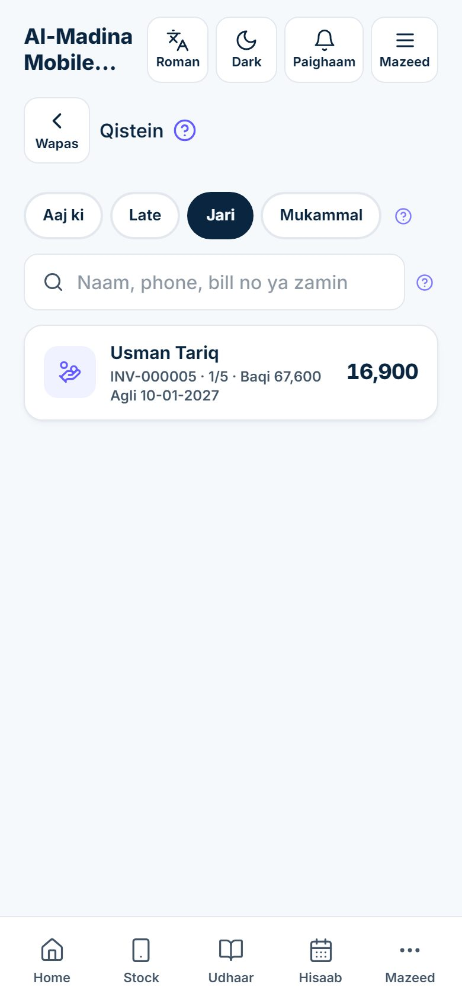
Tasveer 37: Qistein: status ke hisaab se plan
Chaar tab plan dikhate hain:
Aaj ki: woh qistein jo aaj banti hain.
Late: woh plan jin ki koi qist reh gayi.
Chal rahi: woh tamam plan jo abhi ada ho rahe hain.
Mukammal: poore ada shuda plan.
Naam, phone, bill no ya zamin se search karein. List mein har plan customer, bill number, kitni qistein ada hui (maslan 1/5), baqi raqam aur agli tareekh dikhata hai.
Schedule dekhne ke liye plan par dabayein. Har qist par Pure mile, Juzwi, Aaj, Late ya Baqi likha hota hai. Customer aur zamin ke number Call aur WhatsApp ke saath wahan hote hain.
Qist lein
Plan kholein aur Qist lein dabayein.
Agli qist ki raqam bhari hoti hai. Agar woh sirf kuch hissa de, ya do mahine ki ek saath de, to badal dein.
Cash, online ya cheque chunein.
Save karein.
Yeh us bill par aam payment hai, is liye khata, din ka hisaab aur customer ka statement sab mel khate hain.
Yaad dahani
Plan par WhatsApp par yaad dilayein dabayein. WhatsApp "aap ki Rs. 10,000 ki qist 10-01-2027 ko banti hai" (ya "5 din late hai") ke saath khulta hai.
Jab Customers ko khud-ba-khud yaad dahani on ho, to jin plans ki qist kal banti hai ya late hai unhein raat ko khud yaad dahani jati hai, zyada se zyada teen din mein ek baar.
Home ka Dhyan deinAaj ki qistein aur qist ke plan late dikhata hai.
19. Din ka hisaab, kharche aur paison ke accounts
Din ke aakhir mein har dukaandar teen sawal poochta hai: maine kitna becha, mere haath mein kitne paise hain, aur baqi kahan gaye? Din ka hisaab teenon ka jawab ek screen par deta hai.
Din ka hisaab kholein
Neeche wali bar mein Hisaab dabayein (ya Home → hisaab card → Tafseel dekhein, ya More → Din ka hisaab).
Upar muddat chunein: Aaj, Kal, Hafta, Is mahine ya Tareekh se tak. Tareekh se tak ke liye do tareekhen chunein; "se" wali "tak" ke baad nahi ho sakti, aur koi bhi aage ki nahi ho sakti.
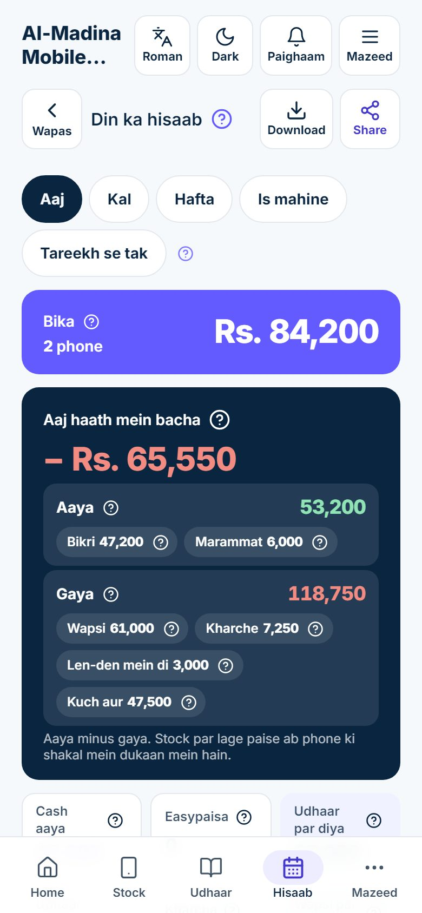
Tasveer 38: Din ka hisaab
Upar se neeche kya dikhta hai:
Bika: kitne phone bike aur kul raqam. Jo sale wapas hui woh nahi gini jati.
Aaj haath mein bacha: bada gehra card. Yeh Aaya minus Gaya hai.
Aaya, wajahon ke chhote chips ke saath: Bikri, Udhaar wapas mila, Marammat, Len-den liya, Apne account se aaya, Kuch aur.
Gaya, wajahon ke saath: Stock khareeda, Wapsi, Kharche, Logon ko diye, Len-den diya, Apne account mein gaya, Kuch aur.
Box: Cash aaya, Easypaisa (aur aap ke doosre wallet), Udhaar par diya, Udhaar wapas mila, Kharcha, Wapsi par diye, Wapsi par kaate aur Munafa (sirf owner aur manager).
Kya kya bika: har sale aur us ki adaigi kaise hui (Cash, Udhaar, Kuch udhaar waghera) aur kis staff ne bechi.
Kisi chip ya box par dabayein to us ke peeche ki entries dikhti hain. Download hisaab PDF, Excel ya CSV mein deta hai, aur Share isay WhatsApp par bhejta hai.
"Haath mein bache" ka matlab, misaal ke saath
"Haath mein bache" asli paise hain: chuni hui muddat mein jo kuch aap ke galle, bank aur wallets mein aaya, minus jo kuch gaya. Yeh munafa nahi hai. Stock par kharch kiye paise zaya nahi hue; ab woh aap ki shelf par phone hain.
Ab farz karein usi din aap ne ek dealer se Rs. 150,000 cash mein paanch phone bhi khareede. Phir Gaya Rs. 228,050 hoga aur Haath mein bache − Rs. 129,050 dikhayega. Pareshan na hon. Minus ka matlab yeh nahi ke aap ka nuqsan hua; Rs. 150,000 ab aap ki dukaan mein paanch phone ki shakal mein khade hain. Aap ka munafa alag se Munafa aur Reports mein dikhta hai.
Kharcha daalein
Owner aur manager. Home → Kharcha, ya More → Kharche.
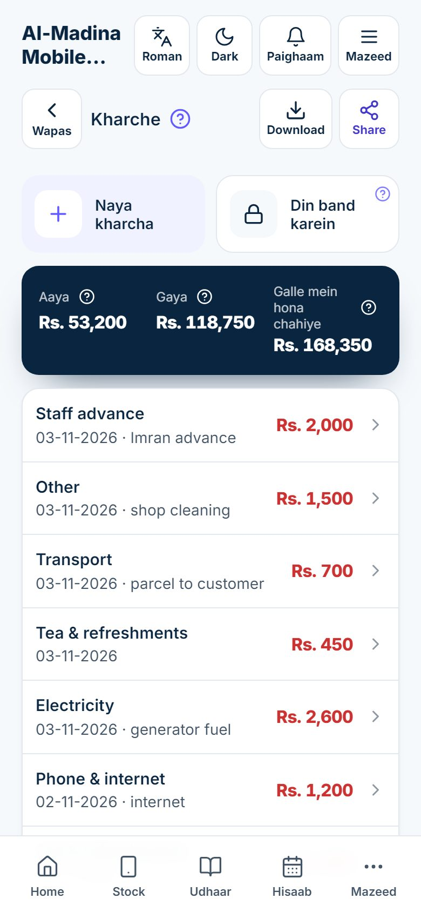
Tasveer 39: Kharchon ki list aur Din band karein
Screen ke upar aaj ka Paise aaye, Gaya aur Galle mein hona chahiye dikhta hai, taa ke aap ko hamesha pata ho ke galle mein kitna hona chahiye.
Misaal: aap ne generator ke tel ke Rs. 2,600 diye.
Naya kharcha dabayein.
Qism chunein: Bijli. Doosri tayyar qismein hain Dukaan ka kiraya, Tankhwah, Staff advance, Chai pani, Repair ke purze, Kiraya / transport, Phone aur internet, Tax aur fees, Maalik ne nikale aur Kuch aur.
Raqam: 2600.
Tafseel (optional): "generator ka tel".
Mehfooz karein dabayein.
Kharcha galle se nikalta hai aur list mein apni tareekh aur tafseel ke saath dikhta hai. Yeh din ke hisaab mein Kharche ke neeche aur munafe ki report mein bhi aata hai.
Apni qism daalne ke liye (maslan "Committee" ya "Generator"), qismon ki list kholein aur naam daalein. Aap apni qismon ka naam badal ya unhein hata bhi sakte hain.
Kharcha theek karne ke liye us par dabayein aur Badlein chunein, ya wajah likh kar cancel karein. Cancel hua kharcha list mein kata hua rehta hai, taa ke kuch bhi baghair nishan ke ghayab na ho.
Din band karein
Raat ko galla ginein aur din band karein. Is se ghaltiyan tab pakdi jati hain jab sab ko din abhi yaad hota hai.
Kharche par Din band karein dabayein.
Aap ko Shuru ka cash, Paise aaye, Gaya aur Galle mein hona chahiye dikhta hai.
Farq koi kami ya zyadti dikhata hai. Agar hona chahiye tha Rs. 168,350, to farq − Rs. 350 hai.
Din band karein dabayein.
Din band ho jaye to us par Pehle hi band likha aata hai.
Paison ke accounts: galla, bank, Easypaisa, JazzCash
Zyada tar dukaanein paise ek se zyada jagah rakhti hain: galla, ek bank account, aur Easypaisa aur JazzCash jaise ek do wallet. App har ek ka alag baqaya rakhti hai.
More → Cash aur bank par jayein.
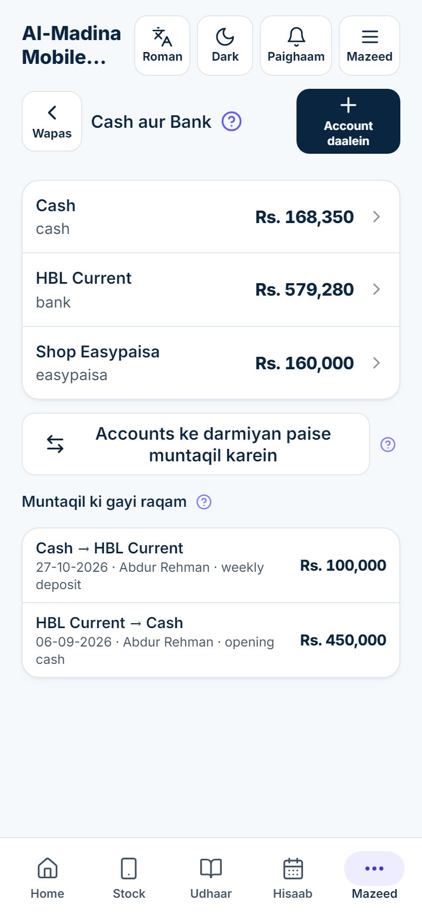
Tasveer 40: Cash aur bank: har account apne baqaye ke saath
Har account apna naam, qism aur baqaya dikhata hai. Kisi account par dabayein to us ki Cash book khulti hai: andar aur bahar har rupaya tareekh aur wajah ke saath.
Account daalein:
Account daalein dabayein.
Account ka naam likhein, maslan "Dukaan Easypaisa" ya "HBL Current".
Qism chunein (cash, bank, Easypaisa, JazzCash waghera).
Chahein to Account / wallet number likhein.
Purana baqaya likhein: aaj us account mein kitna hai.
Save karein.
Naya account ab har us waqt chunne ke liye aata hai jab aap sale, khareed ya payment ke liye Online chunte hain.
Accounts ke darmiyan paise muntaqil karein. Misaal: har Saturday aap galle se Rs. 100,000 HBL mein jama karwate hain.
Accounts ke darmiyan paise muntaqil karein dabayein.
Kahan se: Cash. Kahan: HBL Current.
Raqam: 100000. Note: "hafte ka jama".
Muntaqil karein dabayein.
Sirf do baqaye badalte hain. Yeh na sale hai na kharcha. Muntaqili Muntaqil ki gayi raqam ke neeche tareekh aur karne wale ke naam ke saath likhi jati hai.
20. Reports aur downloads
Owner aur manager: Home → Munafa aur reports, ya More → Reports.
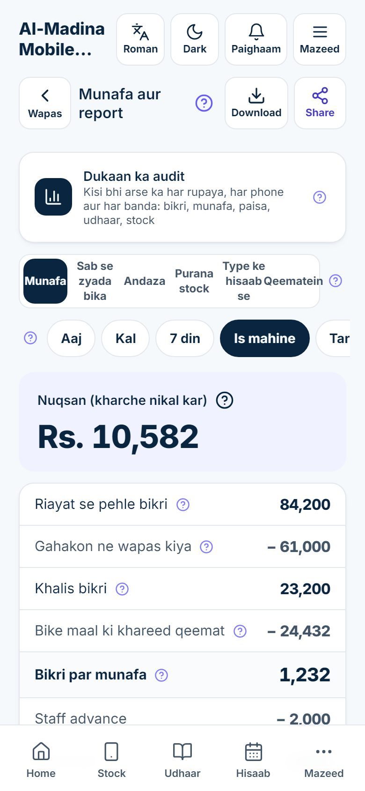
Tasveer 41: Munafa aur reports
Upar ek card hai jo Dukaan ka audit (chapter 21) kholta hai, app ki sab se gehri report. Us ke neeche jaldi wali report ke tab hain:
Munafa: muddat ka munafa.
Sab se zyada bikne wale: kaun se model sab se zyada bikte hain.
Andaza: agle 7 din ka andaza aur kaun se phone khatam honge.
Purana stock: phone is hisaab se ke kitne din se dukaan mein hain.
Type ke hisaab se: qism ke hisaab se stock (phones, tablets, watches), units, laagat par aur maangi qeemat par maaliyat ke saath.
Qeematein: maangi qeemat ki har tabdeeli aur maangi qeemat se kam har sale, karne wale ke naam ke saath.
Chips se muddat chunein: Aaj, Kal, 7 din, Is mahine ya Tareekh se tak.
Munafe ki report
Munafa tab ek saade hisaab ke statement ki tarah line ba line padha jata hai:
Discount se pehle sale
Diya gaya discount
Gahakon ne wapas kiya (minus)
Net sale
Bike maal ki khareed qeemat (minus)
Sale par munafa
Repair aur doosri aamdani (repair, wapsi par rakhi gayi katauti)
Har kharche ki qism (minus)
Asal munafa (kharche nikal kar), ya agar kharche zyada the to Nuqsan (kharche nikal kar).
Is ke neeche aap ko Tax liya aur Maalik ne nikale (kharcha nahi) bhi dikhta hai.
Hal ki hui misaal (ek hafta): Net sale Rs. 420,000. Bike maal ki khareed qeemat Rs. 371,500. Sale par munafa Rs. 48,500. Repair ki aamdani Rs. 12,000. Kharche Rs. 18,200 (kiraye ka hissa, bijli, chai, transport). Asal munafa = 48,500 + 12,000 − 18,200 = Rs. 42,300.
Sab se zyada bikne wale aur Andaza
Sab se zyada bikne wale model is hisaab se dikhata hai ke kitne bike aur kitni raqam laye. Market mein khareedne jane se pehle isay dekhein.
Andaza aap ke pichle chaar hafte dekhta hai aur Agle 7 din (andaza) aur Kaun sa phone khatam hone wala hai dikhata hai, mashwara Aur mangwayein, Theek ya Nahi bik raha ke saath. Yeh aap ki apni sale par mabni andaza hai, wada nahi.
Purana stock aur Qeematein
Purana stock dukaan mein mojood phone stock mein dinon ke hisaab se group karta hai. 60 din se pada phone shelf par atka hua paisa hai; kam qeemat ya exchange deal ka sochein.
Qeematein maangi qeemat ki har tabdeeli aur maangi qeemat se kam har sale dikhata hai, kis ne aur kab ki. Yeh aap ke staff ke diye discount par ek khamosh nazar hai.
Download aur share (PDF, Excel, CSV)
App ki taqreeban har list download ya share ki ja sakti hai.
Report ke upar daayen Download ya Share dabayein.
Format chunein (neeche list dekhein).
Download file save karta hai (website: aap ka Downloads folder; Android app: Documents › MobileShop). Share aap ke phone ki share list kholta hai, taa ke aap isay foran WhatsApp par bhej sakein.
Formats:
PDF: bhejne ya rakhne ke liye tayyar file. Urdu reports sahi Nastaliq mein rehti hain.
Excel: Excel ya Google Sheets ke liye.
CSV: saadi file jo koi bhi software khol sakta hai.
Print (sirf Download): kaghaz par print.
Download aur Share button Din ka hisaab, Dukaan mein stock, Udhaar khata, bande ka safha, Stock list, Kharche, Sales list aur Purchases list par bhi hain.
Balance sheet aur trial balance
Balance ka tab aap ki dukaan ka hisaab waise dikhata hai jaise accountant dekhta hai. Dono safhe har entry se bante hain, is liye in mein kuch bhi haath se nahi likha jata aur na hi yahan kuch badla ja sakta hai.
Mazeed → Reports kholein aur Balance ka tab dabayein.
Is din tak mein aaj ka din rehne dein ya purana din chunein, masalan saal ke hisaab ke liye 30 June.
Balance sheet mein teen khaane hain: Dukaan ke paas kya hai (galla, bank aur wallet, Logon ne aap ko dena hai, Stock (khareed ki qeemat par)), Dukaan ne kya dena hai (Aap ne logon ko dena hai, Liya hua tax, abhi jama karana hai) aur Maalik ka hissa (maalik ki daali hui raqam, Ab tak ka munafa, minus Maalik ne nikaale).
Trial balance dabayein to har khaata apne debit ya credit balance ke saath aur dono ka kul dikhega.
Sabz line Barabar hai batati hai ke dukaan ke paas jo hai woh dena hai + maalik ka hissa ke barabar hai.
Misaal: paas hai Rs. 9,50,000 = dena hai Rs. 1,50,000 + maalik ka hissa Rs. 8,00,000.
21. Dukaan ka audit
Dukaan ka audit aap ke karobar ka poora check-up hai. Yeh aise sawalon ka jawab deta hai: "Maine pichle mahine asal mein kitna kamaya?", "Paise kahan gaye?", "Kis ne mujhe dena hai, aur kab se?" aur "Kaun se phone meri shelf par atke hue hain?". Har figure dukaan ke apne records se nikalta hai, aur har figure par daba kar us ke peeche ke bilkul wahi bills, payments ya phone dekhe ja sakte hain.
Kahan: More → Dukaan ka audit, ya Munafa aur reports ke upar Dukaan ka audit card. Sirf owner aur manager. (Security tab sirf owner ke liye hai.)
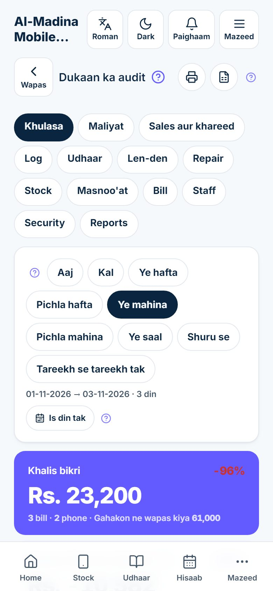
Tasveer 42: Dukaan ka audit: tab aur muddat ki bar
In ke neeche muddat ki bar hai, har tab par ek jaisi:
Aaj, Kal, Ye hafta, Pichla hafta, Is mahine, Pichla mahina, Ye saal, Shuru se, ya kinhi do tareekhon ke liye Tareekh se tareekh tak.
Chips ke neeche wali line bilkul sahi tareekhen aur kitne din dikhati hai, maslan "01-11-2026 → 03-11-2026 · 3 din".
Is din tak se aap baqayon ke liye koi guzra din chun sakte hain. 30 September chunein to har baqaya (cash aur bank, kis ne kis ko dena hai, stock mein phone) bilkul waisa ban jata hai jaisa us shaam tha.
Upar daayen do gol button Print aur Excel hain: jo screen aap dekh rahe hain usay print hone wale safhe ya Excel file mein dete hain.
Zyada tar figures pichli muddat ke muqable mein tabdeeli bhi dikhate hain, maslan hare mein "+12%" ya laal mein "−8%".
Andar jayein: har figure apni rows kholta hai
Audit mein yeh sab se zaroori aadat hai. Jab koi number ajeeb lage, us par dabayein.
Misaal: Khulasa is mahine "Kharche Rs. 38,400" dikhata hai, aur aap ko lagta hai yeh zyada hai. Is par dabayein. Har kharche ki list khulti hai, sab se bada pehle, tareekh, qism, raqam aur daalne wale ke saath. Aap ko Rs. 9,000 ki "Repair ke purze" entry milti hai jo customer ke repair par lagni chahiye thi. Ab aap ko bilkul pata hai ke kya theek karna hai.
Yahi sale, aane jaane wale paison, logon ke baqayon, stock ke phones aur baqi sab par chalta hai. Audit mein koi number aisa nahi jo aap check na kar sakein.
Khulasa
Khulasa poori muddat ke liye ek safha hai:
Net sale bills aur phones ki tadaad ke saath, aur jo customers ne wapas kiya.
Asal munafa (kharche nikal kar), ya nuqsan.
Muddat ka khareeda stock, kharche, aaye paise aur gaye paise.
Cash aur bank, stock mein phone, jin logon ne humein dena hai aur jinhein hum ne dena hai, har ek Shuru → Aakhir → Ab ki shakal mein.
Abhi dekhna hai: aaj nimtane wali cheezen, jaise clear na hue ID check, stock alerts, late qistein aur len-den ki wapsi ki tareekhen. List kholne ke liye chip dabayein.
Jaanch: khud ko sabit karte hue hisaab. Maslan: shuru ka cash + aaye paise − gaye paise = aakhir ka cash; har entry barabar; khata ledger se milta hai; shuru ka stock + aaya − gaya = aakhir ka stock. Hara tick matlab figures mel khate hain.
Maliyat: munafa aur cash
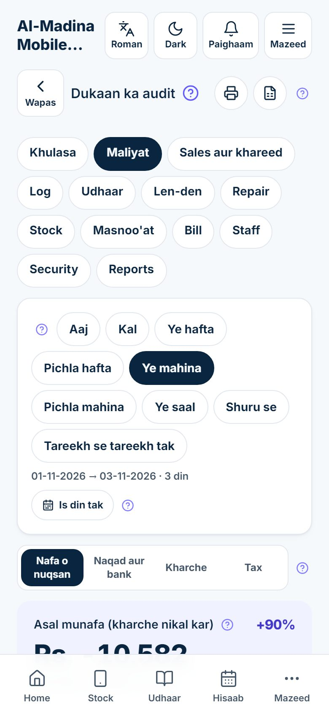
Tasveer 43: Maliyat: nafa nuqsan, cash aur bank, kharche, tax
Maliyat ke chaar hisse hain:
Nafa nuqsan: discount se pehle sale, discount, wapsi, net sale, bike maal ki laagat, gross munafa, kharche, kharchon ke baad munafa, doosri aamdani aur Asal munafa (kharche nikal kar). Har line ke saath bracket mein pichli muddat hai, aur ek chart din, hafte ya mahine ke hisaab se munafa dikhata hai.
Cash aur bank: paise kahan se aaye aur kahan gaye, galle, har bank aur har wallet ke liye, muddat ke shuru se aakhir tak. Apne hi accounts ke darmiyan muntaqil paise alag dikhte hain. Bahar se aaye paise bhejne wala, currency, rate aur reference dikhate hain.
Kharche: qism ke hisaab se pichli muddat ke saath, sab se badi entries aur daalne wale.
Tax: har woh bill jis par tax laga.
Hal ki hui misaal: pichle mahine Net sale Rs. 1,250,000, maal ki laagat Rs. 1,105,000, gross munafa Rs. 145,000, kharche Rs. 61,000, repair ki aamdani Rs. 22,000. Asal munafa = 145,000 − 61,000 + 22,000 = Rs. 106,000.
Sales aur khareed
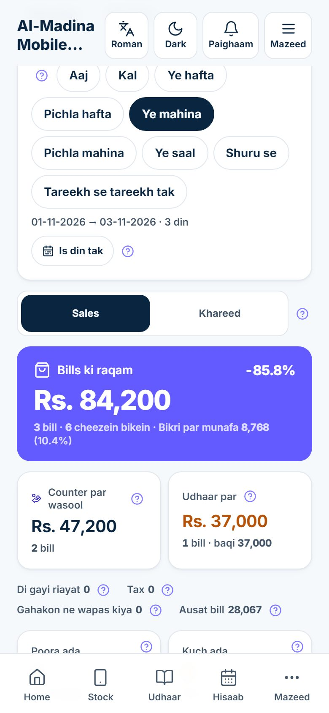
Tasveer 44: Sales aur khareed: bill ki raqam, counter par ada, udhaar par
Do hisse, Bikri aur Khareedari.
Bikri par: kul Bill ki raqam bills, bike items aur Sale par munafa ke saath; phir Counter par ada ke muqable mein Udhaar par (abhi kitna baqi hai ke saath); Diya gaya discount, Tax, Gahakon ne wapas kiya aur Ausat bill; aur kitne bill Poora ada, Kuch ada ya ada nahi hue. Us ke neeche, employee aur customer ke hisaab se sale.
Khareedari par: kya khareeda, kya ada kiya aur kya abhi dena hai, har supplier aur har employee ke hisaab se.
Log
Aap ke chune hue paimane par top customer aur supplier: sale, bills ki tadaad, munafa, khareed, phone, ya dono taraf ki sab se badi baqi raqam. Kisi bande par dabayein to us ka Poora safar khulta hai: pehla aur aakhri len-den, us ko beche aur us se khareede phone, mile aur diye paise, wapsi aur baqaya, kisi bhi guzre din tak bhi.
Udhaar
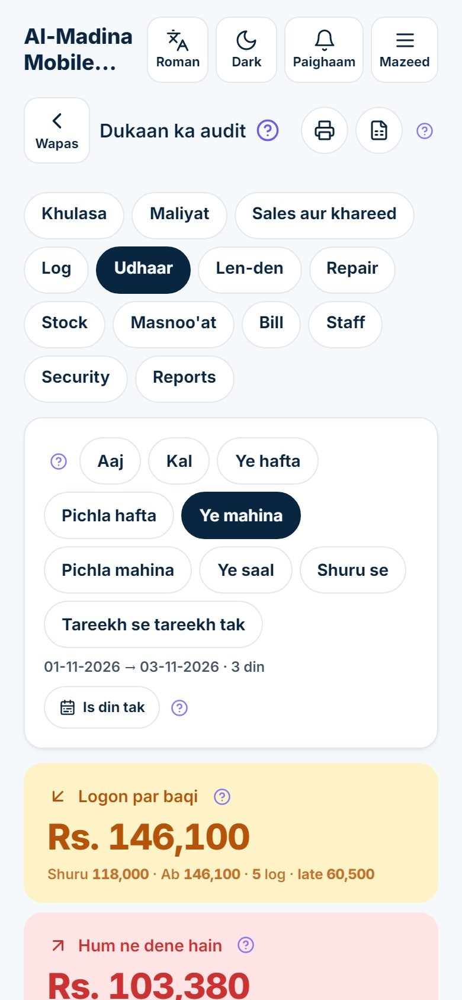
Tasveer 45: Udhaar: logon ne dena hai, hum ne logon ko dena hai
Logon ne dena hai aur Hum ne logon ko dena hai, alag alag, har ek shuru, ab, logon ki tadaad aur jo late hai us ke saath.
Jis mein len-den: udhaar ka woh hissa jo len-den hai. Yeh total ke andar hai, alag se nahi.
Muddat mein khate kaise chale: diya udhaar, wapas mila, liya, ada kiya, wapsi, diya aur liya len-den, shuru ke baqaye.
Har qarz ki umar, sab se purane baqi bill se gini hui, umar ke darjon mein.
Late: sirf woh bill late ho sakte hain jin par wade ki tareekh thi (sale par "Is tareekh tak ada karega"). Baghair tareekh wala bill sirf apni umar dikhata hai; usay kabhi late nahi kaha jata.
Baqi bills wale log aur phone.
Len-den
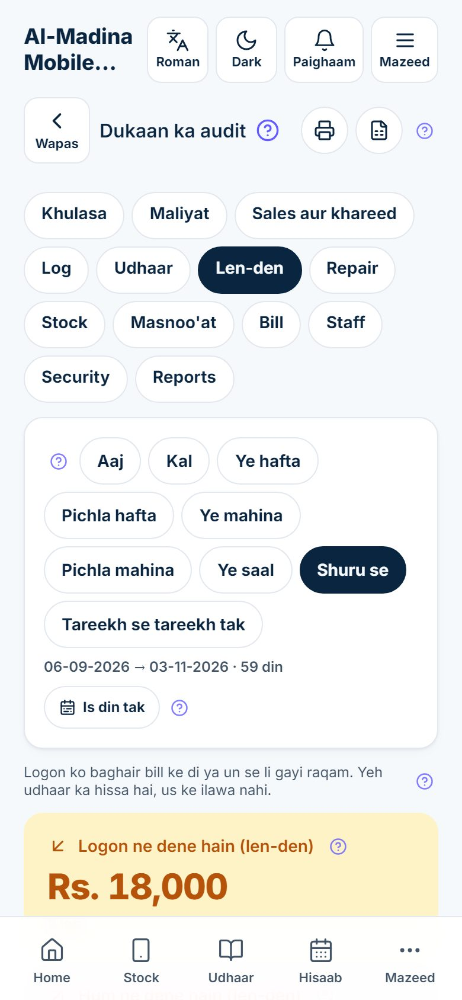
Tasveer 46: Dukaan ke audit mein len-den
Yeh tab woh paise dikhata hai jo logon ko baghair bill ke diye ya un se liye gaye (chapter 17):
Logon ne dena hai (len-den) aur Hum ne dena hai (len-den): ab (ya Is din tak wale din) kya khula hai, aur kitne log.
Muddat mein diya aur liya len-den, pichli muddat ke muqable mein.
Kitna baad mein bills ke saath adjust hua, aur kitni entries cancel hui (kuch bhi mitaya nahi jata).
Din, hafte ya mahine ke hisaab se chart; tareeqe ke hisaab se taqseem (cash, bank, Easypaisa waghera).
Wapsi ki tareekhen: tareekh wali entries, late pehle: Late, Aaj, 3 din mein, Baad mein.
Shakhs ke hisaab se len-den: har bande ka diya aur liya, us ka poora khata aur jo abhi khula hai.
Muddat ki har entry apne number, tareekh, daalne wale aur note ke saath.
Marammat aur labs
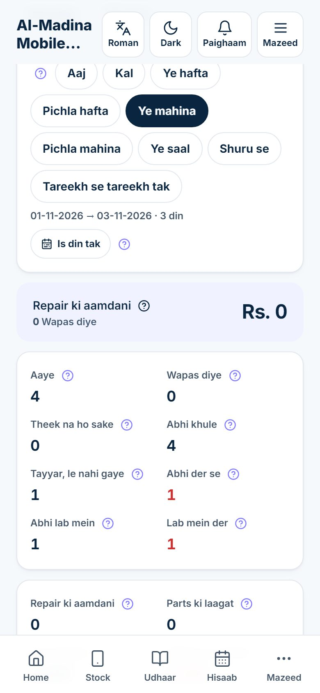
Tasveer 47: Dukaan ke audit mein marammat
Ginti: Phone liya, Wapas de diya, Theek nahi hua, Abhi khule, Tayyar, le nahi gaye, Abhi der se, Abhi lab mein aur Lab mein der.
Paise: Repair ki aamdani, Parts ki laagat, Lab charges, Repair ka munafa, dukaan ke apne phones par lab charges, aur ausat bill.
Muddat ka chart, har repair lab apne record ke saath, abhi kya dekhna hai, aur sab se aam kharabiyan.
Misaal: aap ko "Tayyar, le nahi gaye 6" dikhta hai. Is par dabayein, aur un chhe customers ko call karein. Yeh paise aur shelf ki jagah hai jo aap ke counter par intezar kar rahi hai.
Stock aur umar
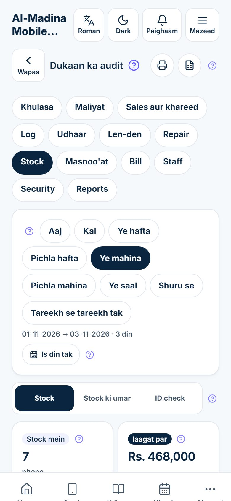
Tasveer 48: Dukaan ke audit mein stock
Stock ke teen hisse hain:
Stock: ab (ya Is din tak wale din) stock mein phone, halat, PTA status, ID check, qism aur brand ke hisaab se; maaliyat laagat par aur maangi qeemat par; mutawaqqa margin; sab se mehngay phone aur sab se patle margin wale.
Stock ki umar: umar ke darjon mein phone (Taaza, Aam, Sust, Tawajjo aur us se purane) aap ki apni hadon se jo Settings → Stock audit ki hadein mein hain. Alerts murda stock, sust chalne wale mehngay phone, patle margin, baghair maangi qeemat wale phone, abhi baqi ID check, aur ek se zyada baar wapas aaye phone batate hain.
ID check: kitne check hue, aur har chhora gaya check, kis ne chhora, kis phone aur supplier ke liye, aur kyun. Chhora gaya check kabhi mukammal check nahi gina jata.
Products, Bills aur Staff
Products: model, brand ya qism ke hisaab se kya bika: units, hissa, aamdani, munafa, margin, ausat qeemat, bikne mein ausat din, wapsi aur bacha stock, Top, Ausat ya Kam ke nishan ke saath.
Bills: muddat ka har bill qism, status aur employee ke hisaab se, aur jo kuch cancel hua, kis ne cancel kiya aur kyun.
Staff: muddat mein har employee ki sale, wasool paise, khareed aur kaam. Owner security ke columns bhi dekhta hai.
Security (sirf owner)
Har mude hue number ya usool ki ek feed: maangi qeemat badli, maangi qeemat ya laagat se kam becha, discount, cancel, stock adjustments, shuru ke baqaye, chhore gaye ID check aur ghalat owner PIN. Har line batati hai kis ne, kab, pehle aur baad, wajah aur kis ne manzoori di, har employee ki ginti ke saath.
Reports: mukammal audit report
Reports tab Mukammal dukaan audit report banata hai. Jo hisse chahiye chunein, khulasa ya tafseeli chunein, aur isay Print / PDF ya Excel (har hisse ki ek sheet) mein lein. Report muddat, Is din tak wala din, currency aur jo record nahi hota woh batati hai. Har akeli report bhi yahan apne download ke saath likhi hai.
Audit kya nahi dikhata
Audit sirf woh dikhata hai jo app record karti hai, aur yeh saaf bata deta hai:
Bills par wapsi ki tareekhen record nahi hoti jab tak aap ne wade ki tareekh na likhi ho, is liye app qarz ko late kehne ke bajaye us ki umar dikhati hai.
Khareed par tax record nahi hota, is liye input-tax ka koi figure nahi.
Remittance fees sirf tab pata hoti hai jab aap ne bahar se paise aane par likhi ho.
Dukaan mein kaam karne wale har bande ka apna login hona chahiye. Phir har bill dikhata hai ke kis ne banaya, owner dekh sakta hai ke har bande ne kya kiya, aur har banda sirf woh dekhta hai jo us ka ohda ijazat deta hai.
Sirf owner: More → Staff.
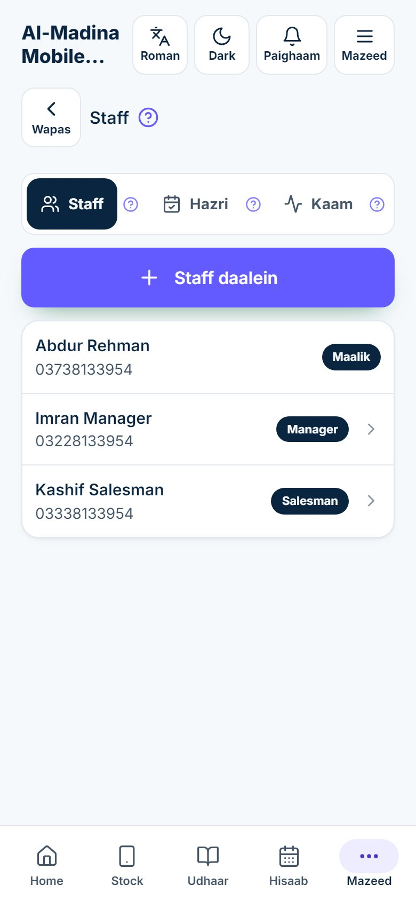
Tasveer 49: Staff: har ohde ke saath list
Staff screen ke teen tab hain: Staff, Hazri aur Activity.
Staff daalein
Misaal: naya salesman, Kashif Mehmood.
Staff daalein dabayein.
Naam: Kashif Mehmood. Yeh naam us ke banaye bills par print hota hai.
Mobile number: 3005550707. Yeh us ka login hai.
Password: kam az kam 6 huroof.
Jaldi PIN (4-6 hindse), maslan 4321, us ke apne phone par tez login ke liye.
Ohda: Salesman.
Mehfooz karein dabayein.
Baad mein staff member par daba kar Ohda badlein, Naya password set karein, ya usay Band karein / Chalu karein. Band kiya gaya banda login nahi kar sakta, lekin us ka kiya hua sab kuch record mein rehta hai.
Chaar ohde
Chaar ohde hain: Maalik, Manager, Salesman aur Karigar. Har dukaan ka ek owner hota hai.
Banda kya kar sakta hai
Maalik
Manager
Salesman
Karigar
Bechna, stock daalna, wapsi lena
Haan
Haan
Haan
Nahi
Paise mile / diye, len-den
Haan
Haan
Haan
Nahi
Khareed qeemat aur munafa dekhna
Haan
Haan
Nahi
Nahi
Khareed qeemat se kam bechna
Haan
Haan
Nahi
Nahi
Bills aur payments cancel karna
Haan
Haan
Nahi
Nahi
Kharche daalna, din band karna
Haan
Haan
Nahi
Nahi
Munafa aur reports, dukaan ka audit
Haan
Haan
Nahi
Nahi
Audit mein security feed
Haan
Nahi
Nahi
Nahi
Repair ke liye phone lena
Haan
Haan
Haan
Nahi
Repair par kaam karna
Haan
Haan
Nahi
Haan
Brands aur models badalna
Haan
Haan
Nahi
Nahi
Staff, dukaan settings, software fees
Haan
Nahi
Nahi
Nahi
Ruka hua ID check override karna
Haan
Nahi
Nahi
Nahi
Salesman aur karigar phir bhi apne din ka kaam dekhte hain.
Jo salesman munafa na dekhe us ke liye kaun sa ohda?
Salesman chunein. Salesman bech sakta hai, stock daal sakta hai, wapsi le sakta hai aur paise le de sakta hai, lekin woh kabhi khareed qeematein, munafa, reports ya dukaan ka audit nahi dekhta. Jab woh khareed qeemat se kam bechne ki koshish kare, app usay rok deti hai aur owner ya manager ko bulati hai.
Manager sirf us bande ke liye chunein jis par aap poore karobar ka bharosa karte hain, maslan bhai ya partner jo aap ki ghair mojoodgi mein dukaan chalata hai.
Hazri
Jab Staff ki hazri module on ho, Home sab ke liye ek Hazri card dikhata hai.
Aate waqt Hazri lagayein dabayein.
Jate waqt Chhutti karein dabayein.
Phir card kuch aisa dikhata hai: "Aaye 9:05 AM · Gaye 7:10 PM · 10.1 ghante".
Din mein ek hazri. Owner Staff → Hazri kholta hai, muddat chunta hai, aur har bande ke liye dekhta hai: aaj ka status, kaam ke ghante, aur Hazir, Aadha din, Chhutti, Ghair hazir aur Record nahi ki ginti. Kisi bande par daba kar koi din haath se likhein, maslan kal = Chhutti, note "Eid". Tankhwah aur advance Kharche se diye jate hain (qismein Tankhwah aur Staff advance).
Activity: har bande ne kya kiya
Staff → Activity chuni hui muddat ke liye har bande ki Bikri (tadaad · Rs), Wasooli (Rs), Khareed (tadaad · Rs), Kharche (Rs), Marammat aur Kaam ki tadaad dikhata hai, un ke Aakhri login ke saath. Kisi bande par dabayein to poora log dikhta hai: har bill, payment, khareed, kharcha, repair, cancel aur settings ki tabdeeli, waqt, number aur raqam ke saath. Yeh us record se aata hai jo app har tabdeeli ka rakhti hai, is liye kuch bhi chhoot nahi sakta.
Login ki sargarmi: app kahan kahan login hai
Sirf owner, aur sirf jab software provider ne aap ki dukaan ke liye Login ki sargarmi on ki ho: More → Login ki sargarmi. Aaj, Pichle 7 din ya Pichle 30 din chunein.
Abhi online: pichle 5 minute mein istemal hua. Login hain: abhi login hai magar abhi istemal nahi ho raha. Band ho chuke: logout hua ya aap ne kiya.
Har row mein banda aur us ka role, phone ya browser (dukaan ki app, Android par Chrome, Windows par Edge …), IP, kab aur kaise shuru hua (password, PIN, fingerprint …) aur aakhri istemal. Yeh device woh hai jo aap istemal kar rahe hain.
Kya kaam kiya us bande ke kaam kholta hai.
Is device ko logout karein woh login band karta hai: agle qadam par us phone ya browser ko password se dobara login karna hoga. Jo save kiya woh zaya nahi hota. Phone gum ho ya salesman chala jaye to istemal karein (phir Staff mein use band bhi karein).
23. Settings, karobar ki profile aur WhatsApp paighaam
Dukaan ki settings
Sirf owner: More → Dukaan ki settings. Screen cards se bani hai, har mauzoo ka ek card.
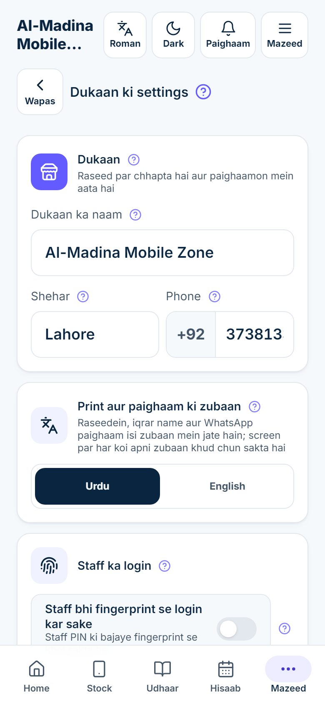
Tasveer 50: Dukaan ki settings
Dukaan: Dukaan ka naam, Shehar aur Phone. Raseedon par print hote hain aur paighaamon mein istemal hote hain.
Print aur paighaam ki zubaan: Urdu ya English. Raseedein, declarations aur WhatsApp paighaam isi zubaan mein jate hain. Har banda phir bhi apni screen ki zubaan khud chun sakta hai.
Staff ka login: Staff bhi fingerprint se login kar sake, PIN ki jagah.
Sales tax: Sales tax lagayein on karein, phir Tax ki sharah %, Qeemat mein tax shamil hai, NTN aur STRN set karein. Yeh shuru mein off hota hai aur zaroorat par bill par tick hota hai.
Raseed: Bill number ka shuru (ek misaal dikhti hai, jaise INV-000123), Raseed ke neeche aur Raseed ke neeche (Urdu), maslan "7 din ke baad wapsi nahi".
Sticker ka laagat code: 10 huroof ka code lafz taa ke price sticker par khareed qeemat sirf aap padh sakein.
Qeemat ke usool: kaun maangi qeemat se kam bech sakta hai aur kaun usay badal sakta hai.
Stock audit ki hadein: stock ki umar ke darje kahan khatam hote hain, kya mehnga gina jata hai aur kya patla margin.
Item settings: stock ki maaliyat (weighted average ya FIFO), zero stock se aage bechne ki ijazat hai ya nahi, aur ek dozen, dabbe ya carton mein kitne piece.
Device settings: kya used mobiles ko bhi lock check chahiye, aur used units ke liye aap ke grades.
Barcode settings: naye stock ke liye barcode ki qism. Purane labels chalte rehte hain.
Jab aap kuch badalte hain, neeche ke tabs ke upar Mehfooz karein bar "Abhi save nahi hua" ke saath aati hai. Is par dabayein aur Mehfooz ho gaya tabdeeli ki tasdeeq karta hai.
Karobar ki profile: aap ke bills par logo aur tafseel
Isi Dukaan ki settings mein, Logo aur karobar ki tafseel cards tay karte hain ke aap ke print hue bill kaise dikhte hain.
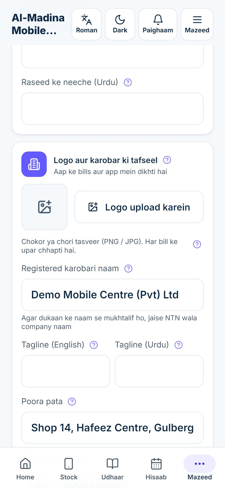
Tasveer 51: Logo aur karobar ki tafseel
Logo upload karein dabayein aur chaukor ya chaudi tasveer (PNG ya JPG) chunein. Yeh har bill ke upar print hoti hai. Baad mein zaroorat ho to Logo badlein ya Logo hatayein.
Agar dukaan ke naam se alag ho to Registered karobari naam bharein (maslan aap ke NTN par company ka naam), Tagline (English) aur Tagline (Urdu), Poora pata, WhatsApp number, Email, Website / page, Karobar ki qisam, Soobah aur Auqaat (maslan "11 am – 10 pm, Jumma band").
Malik ki tafseel: owner ka naam aur CNIC.
Tax registration (FBR): NTN, STRN aur FBR POS registration ID (sirf agar aap FBR ki point-of-sale scheme mein hain). Bhare hon to bills par print hote hain.
Currency: paise hamesha Pakistani rupay hain, lekin aap chunte hain ke likhe kaise jayein: Nishan (Rs., Rs, PKR waghera), Nishan kahan (Pehle (Rs. 500) ya Baad mein (500 PKR)), aur Sirf rupay ya Hamesha paise (.00). Aisa dikhega preview natija dikhata hai.
Printed bill: tick karein ke sale bills aur repair slips par kya aaye: Logo, Tagline, NTN / STRN / FBR POS ID, Maalik ka naam, Bank / wallet tafseel (baqaya ada karne ke liye), Sharait (wapsi / warranty) aur social pages. Sharait (English) aur Sharait (Urdu) aur apne bank aur Easypaisa / JazzCash ki tafseel yahan likhein. Bill online dekhne ka QR code (shuru se on) baab 8 wala QR chhaapta hai.
Save bar par Mehfooz karein dabayein.
WhatsApp paighaam aur notifications
More → Notifications tay karta hai ke app kya bhejti hai aur kis ko.
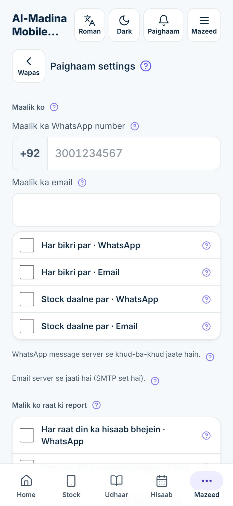
Tasveer 52: Notifications aur raat ki report
Maalik ko: Maalik ka WhatsApp number aur Maalik ka email. WhatsApp ya email se Har sale par aur/ya Stock daalne par par tick lagayein.
Malik ko raat ki report: har raat din ka hisaab (chapter 16).
Udhaar ki yaad dahani: khata kuch din ruke rehne ke baad Customers ko khud-ba-khud yaad dahani. Qist aur len-den ki yaad dahani bhi isi switch se chalti hai.
Screen batati hai ke paighaam kaise jate hain:
"WhatsApp paighaam server se khud-ba-khud jate hain." ka matlab hai aap ke software provider ne WhatsApp Business service set kar di hai; paighaam khud jate hain.
Warna paighaam WhatsApp mein khulte hain taa ke aap ek tap se bhejein. Yeh Paighaam (har screen ke upar ghanti) mein intezar karte hain jahan aap har ek khol kar Bhej diya laga sakte hain.
"Email server se jati hai (SMTP set hai)." ka matlab hai emails khud jati hain. Agar email set nahi, to apne software provider se kahein; tab tak email paighaam list mein intezar karte hain.
Customers ko paighaam (raseedein, yaad dahani) Print aur paighaam ki zubaan se dukaan ki zubaan istemal karte hain.
Zubaan, theme aur andaaz
Zubaan: kisi bhi screen ke upar zubaan ka button dabayein aur اردو, Roman Urdu ya English chunein. App ek waqt mein ek zubaan dikhati hai; Urdu daayen se baayen padhi jati hai. Hindse hamesha 0–9 hote hain.
Dark / Light: upar Dark (ya Light) dabayein. More → Theme mein Phone ke mutabiq bhi hai.
Andaaz: More → Andaaz chaar style deta hai: Modern, Professional, Navy aur Rangeen.
Har screen par chhote ? button hain. Kisi ek ko dabayein to misaal ke saath mukhtasar wazahat milti hai; har wazahat ka apna English / Urdu / Roman switch hai.
FBR Digital Invoicing (sales tax registered dukaanon ke liye)
Agar FBR aap ke karobar ko invoice report karne ka kahe (sales tax registered, FBR ne bataya ho) to app har sale ka bill khud FBR ko bhej kar bill par FBR number aur us ka QR code chhaap sakti hai.
Yaqeen kar lein ke Tax registration mein aap ka NTN aur STRN likha hai.
IRIS (FBR ka portal) se Digital Invoicing security token lein (pehle sandbox / test wala).
Mazeed → Dukaan ki settings → FBR Digital Invoicing kholein, token lagayein, Sandbox (test) chunein aur Save dabayein.
FBR se test karein dabayein. Jab likha aaye ke FBR ne test bill maan liya, to Bill FBR ko bhejein on karein aur Save karein.
Chand bill theek jaane ke baad production token ke saath Production (asal) par jayein.
Is ke baad har sale foran FBR ko jati hai. Internet ya FBR band ho to bill intezar karta hai aur baad mein khud chala jata hai. Bill ke safhe par FBR number, Baqi, ya FBR ne ye bill radd kiya wajah ke saath aur Dobara bhejein ka button aata hai.
24. Bulk Excel import aur export
Jab koi dukaan register ya kisi aur software se aati hai, to koi bhi 300 phone ek ek kar ke likhna nahi chahta. Bulk Excel se aap ek Excel sheet bhar kar saari rows ek saath la sakte hain. Sirf owner aur manager: More → Bulk Excel.
Tasveer 53: Bulk Excel: chunein kya lana hai
Import qadam ba qadam
Misaal: aap ki dukaan mein 120 phone hain aur purane udhaar register mein 45 customer.
Chunein aap kya la rahe hain: Phone (stock), Log, Accessories, Bikri ya Kharche. Log se shuru karein, phir Phone (stock).
Sheet download karein dabayein. Yeh Excel mein teen sheets ke saath khulti hai: Data (sirf yahi bharni hai), Help (har column ki wazahat, zaroori hai ya nahi) aur Lists (dropdowns ke liye aap ke brands, models, rang, suppliers aur qismein).
Data ki pehli teen rows peeli misaal wali rows hain, maslan Rs. 35,000 ka Vivo Y21 128 GB. Apni rows in ke neeche ya in ke upar likhein. Misaalein pehchaan kar chhor di jati hain, is liye misaal se kabhi kuch nahi banta.
File upload karein. Har row wapas aati hai ok (theek), note (kuch banega, jaise naya brand ya naya banda), error (wajah saade lafzon mein, jaise "IMEI 15 hindson ka hona chahiye" ya "Maangi qeemat laagat se kam hai") ya skipped (misaal ya khali line) ke nishan ke saath. Abhi kuch save nahi hua.
Excel mein ghaltiyan theek kar ke dobara upload karein, ya Ghalat rows chhor dein, baqi import karein par tick lagayein.
Import karein dabayein. Ya to har theek row save hoti hai, ya kuch bhi nahi. Natija batata hai kya bana (phone, khareed bills, log, shuru ke baqaye waghera).
Har sheet kya karti hai
Phone (stock): har phone ki ek row. Apne purane stock ke liye supplier khali chhorein. Supplier ka phone number dein to rows har supplier aur tareekh ka ek khareed bill ban jati hain, ada ki gayi raqam us ke khilaf aur baqi supplier ke khate mein. Non-PTA aur JV phones ko SIM time chahiye.
Log: naam, phone aur qism kaafi hain. Kis ne dena hai ke saath opening balance khate ka shuru likhta hai. Jo phone number pehle se aap ke khate mein hai woh chhor diya jata hai.
Accessories: naam, haath mein tadaad, ek ki laagat aur bechne ki qeemat. Code (SKU) khali chhorein to khud ban jata hai.
Bikri: sirf woh phone jo app mein pehle se stock mein hain, IMEI se. Agar paise khate par rahein to customer ka phone number chahiye. Laagat se kam bechna mana hai jab tak owner ya manager ijazat na de.
Kharche: tareekh, qism, raqam aur account (Cash, jab tak aap koi bank ya wallet ka naam na lein).
Har import hui row counter wale hi qadmon se guzarti hai, is liye khata, ledger aur phone ki history mukammal hoti hai, bilkul aise jaise aap ne har ek khud likha ho.
Export: mera data download
Isi safhe par Mera data download aap ke mojooda phone, log, accessories, sales ya kharche bilkul isi tarteeb mein deta hai. Aap Excel mein cheezen theek kar ke file wapas la sakte hain. Pichle imports neeche likhe hote hain, kis ne kiye aur kya bana.
25. Software fees, backup aur PC version
Aap ka plan aur fees ada karna
Sirf owner: More → Software fees.
Aap ka plan, Mahana fees aur Kab tak ada.
In mein se kisi mein ada karein: software provider ke accounts (Easypaisa, JazzCash, SadaPay, bank), har ek number ke liye Copy button ke saath.
Ada karne ke liye:
Apne Easypaisa, JazzCash ya bank app se fees bhejein.
Software fees mein Maine ada kar diya bharein: Raqam (Rs), Mahine, Kis zariye ada kiya, Transaction ID / hawala, aur Screenshot lagayein.
Bhejein dabayein.
Aap ki adaigiyan har payment ko Check ho rahi hai, Mil gaya ya Qabool nahi hui (wajah ke saath) dikhata hai. Jab mil jaye, aap ki Kab tak ada tareekh aage chali jati hai, aap ko "Shukriya! Aap ka plan renew ho gaya" dikhta hai, aur aap raseed print kar sakte hain.
Renewal code: kabhi kabhi, khaas kar baghair internet wale PC version ke liye, provider WhatsApp par ek code bhejta hai. Isay Renewal code mein paste karein aur Code se renew karein dabayein. Yeh baghair internet ke chalta hai, lekin sirf ek baar.
Fee jo abhi deni hai
Kabhi software dene wala aap ke paise dene se pehle package barha deta hai (aap ne phone par baat ki). Tab Software fees mein Fee jo abhi deni hai nazar aata hai: har line mein us ka number (maslan FEE-0001), muddat, mahine aur fee, aur Ada nahi hui, Kuch ada hui ya Ada ho gayi. Us ke neeche Abhi deni hai mein kul raqam surkh rang mein hoti hai. Agar ada karne ka din tay hua ho to Ada karne ki tareekh nazar aati hai, aur din guzar jaye to Ada karne ki tareekh guzar gayi.
Fee ka bill bill kholta hai jise print karein ya rakh lein: har muddat, fee, aap ne kitna diya, kitna baqi hai, aur kahan ada karna hai.
Jab aap paise bhejte hain to pehle yeh baqi fee poori hoti hai, purani pehle; bachi raqam se Adaigi is tareekh tak aage barhti hai. Main ne ada kar di mein raqam pehle se baqi fee samait likhi hoti hai.
Aap ki adaigiyan mein payment ke neeche Pichli fee mein gaya aur woh hissa likha aata hai. Raseed par bhi.
Misaal: dene wale ne 9 tareekh ko 2 mahine Rs. 3,000 mein diye, 15 tak adaigi. Aap Rs. 1,000 bhejte hain: line Kuch ada hui, Rs. 2,000 baqi. Phir Rs. 3,500 bhejte hain: Rs. 2,000 purani fee poori karte hain (Ada ho gayi) aur Rs. 1,500 se ek mahina aur barhta hai.
Fees ki yaad dahani
Plan khatam hone se pehle app tameez se yaad dilati hai:
Kab
Aap ko kya dikhta hai
7 din baqi
Upar peeli bar
3 din baqi
Narangi bar, aur din mein ek baar yaad dahani ki window
1 din baqi aur aakhri din
Laal bar, aur yaad dahani ki window zyada baar
Plan khatam, mohlat ke din (aam tor par 7)
Laal bar: sab kuch ab bhi chalta hai
Mohlat ke din ke baad
Sirf dekhne wala mode (neeche dekhein)
Payment bheji, abhi check nahi hui
Halki neeli bar: "Payment mil gayi, tasdeeq baqi hai."
Yaad dahani ki window plan, khatam hone ki tareekh, fees, kahan ada karna hai (Copy button ke saath) aur teen button dikhati hai: Fee ada karein, Baad mein yaad dilayen (4 ghante, kal ya 3 din mein) aur Band karein. Yeh woh akeli screen hai jo English, Urdu aur Roman Urdu ek saath dikhati hai. Yeh kabhi sale, payment ya kisi form ke beech mein nahi khulti. Staff ko sirf ek chhoti line dikhti hai ke owner ko bata dein.
Agar fees ada na ho to kya hota hai
Kuch bhi kabhi mitaya nahi jata. Mohlat ke dinon ke baad app sirf dekhne wale mode mein chali jati hai:
Aap ab bhi login kar ke apna saara data dekh sakte hain.
Aap ab bhi har report aur list download kar sakte hain, aur backup le sakte hain.
Aap ab bhi fees ada kar sakte hain.
Nayi sales aur khareed fees ada hone tak ruki rehti hain.
Jis lamhe payment manzoor ho (ya renewal code paste ho), sab kuch bilkul waisa hi dobara khul jata hai jaisa tha.
Mere data ka backup
Software fees mein (aur yaad dahani ki window mein) Mera data backup karein dabayein. Yeh har list (stock, khata, sales, khareed, kharche, accessories aur bahut kuch) Excel files ki shakal mein ek zip mein download karta hai. Yeh kisi bhi waqt chalta hai, plan khatam hone par bhi.
Baghair internet ke kaam
Agar market ka internet chala jaye, bechte rahein. Baghair internet ke ki gayi sale, khareed, payment ya kharcha phone par save hota hai, aur header ke neeche wali patti kehti hai "Is phone par save hai. Internet wapas aane par bhej diya jayega." Jab connection wapas aaye, yeh khud tarteeb se jate hain, har ek sirf ek baar. Bill number server tak pahunchne par milte hain. Reports, downloads aur WhatsApp bhejne ke liye internet chahiye.
PC version (internet ki zaroorat nahi)
Jin dukaanon ka internet bharosemand nahi woh yahi software Windows computer par chala sakti hain:
MobileShop-Setup.exe install karein (aap ka software provider aap ko deta hai).
Desktop se Mobile Shop kholein. Ghadi ke paas ek chhota icon aata hai, aur app browser mein khulti hai.
Ek baar dukaan ka account banayein, phir aam tarah kaam karein.
Sab kuch usi computer par rehta hai. Chhote icon ke menu mein Backup now (tareekh wali copy, Desktop par bhi rakhi jati hai), Open data folder aur Quit hain. Dukaan ke Wi-Fi par phone bhi isay khol sakte hain; is ke liye apne software provider se kahein. Update ke liye naya Setup chalayein; aap ka data rehta hai.
26. Aam sawal aur masle ka hal
Customer kehta hai us ka baqaya ghalat hai. Udhaar khate se us ka safha kholein aur us ke saath Khate ki history dekhein. Har line par tareekh, bill number aur chalta baqaya hai. PDF statement WhatsApp par bhej dein.
Maine ek payment do baar likh di. Un mein se ek kholein aur wajah likh kar cancel karein. Baqaya ulti entry se theek ho jata hai, aur cancel wali kati hui nazar aati rehti hai.
Ek dost ne mujh se paise udhaar liye. Kya main Paise mile / Paise diye istemal karoon? Nahi. Us ke safhe par Paise diye (len-den) aur Paise liye (len-den) istemal karein (chapter 17). Paise mile aur Paise diye bills ke liye hain.
Haath mein bache minus hai lekin aaj maine achha becha. Shayad aap ne stock khareeda ya wapsi par paise lautaye. Gaya ke neeche chips dekhein. Stock par kharch kiye paise ab aap ki shelf par phone hain.
Meri galle ki ginti Galle mein hona chahiye se nahi milti. Check karein ke kahin koi online payment Cash to nahi likhi gayi, ya galle se koi kharcha diya gaya lekin likha nahi gaya. Easypaisa ya bank wali payments hamesha Online honi chahiyein.
Is mahine munafa nuqsan dikha raha hai. Munafe ki report kholein. Gahakon ne wapas kiya aur kharchon ki lines dekhein. Badi wapsi ya isi mahine diya gaya kiraya mahine ko nuqsan mein badal sakta hai. Dukaan ke audit ka Maliyat tab yahi cheez pichli muddat ke muqable ke saath dikhata hai.
Mera salesman munafa na dekhe. Usay Salesman ka ohda dein (More → Staff → us ka naam → Ohda). Woh bech sakta hai aur paise le sakta hai lekin kabhi khareed qeematein, munafa ya reports nahi dekhta.
Mujhe Kharche, Reports ya Dukaan ka audit nahi mil raha. Yeh owner aur manager ke liye hain. Agar aap owner hain aur phir bhi koi feature nazar nahi aata, to ho sakta hai woh module aap ke plan mein na ho; apne software provider se poochein.
WhatsApp yaad dahani khud nahi gayi. Khud bhejne ke liye aap ke software provider ki taraf se WhatsApp Business service set honi chahiye. Us ke baghair Paighaam (ghanti) kholein aur har paighaam par daba kar WhatsApp se bhejein.
Raat ki report nahi aayi. More → Notifications check karein: owner ka number likha hai, Har raat din ka hisaab bhejein par tick hai, aur waqt set hai. Test ke liye Aaj ka hisaab abhi bhejein dabayein.
Qist wale customer ne aadhi raqam di. Plan kholein, Qist lein dabayein aur raqam utni kar dein jitni us ne di. Qist baqi aane tak Juzwi dikhati hai.
Bulk Excel upload ghaltiyan dikhata hai. Wajah padhne ke liye laal row par dabayein ("IMEI 15 hindson ka hona chahiye", "Batayein kis ne dena hai" waghera). Excel mein theek kar ke dobara upload karein, ya Ghalat rows chhor dein, baqi import karein par tick lagayein. Jab tak aap Import karein na dabayein kuch save nahi hota.
Mera logo bill par nahi aata. Dukaan ki settings → Printed bill check karein: Logo par tick hona chahiye. Saaf PNG ya JPG istemal karein, aur Save bar par Mehfooz karein dabayein.
Fees ki yaad dahani baar baar aati hai. Fees ada karein aur transaction ID ke saath Maine ada kar diya dabayein. Bar neeli ho jati hai ("Payment mil gayi, tasdeeq baqi hai") aur yaad dahani ruk jati hai.
Mera plan khatam ho gaya. Kya mera data chala gaya? Nahi. Kuch bhi kabhi mitaya nahi jata. Aap sab kuch dekh sakte hain, download kar sakte hain aur backup le sakte hain. Fees milte hi nayi sales dobara khul jati hain.
Main apna password ya PIN bhool gaya. PIN: PIN bhool gaye? Password lagayein dabayein. Password: staff dukaan ke owner se kahe (More → Staff → naam → Naya password). Owner software provider se kahe.
Android app mein print ya download Chrome kholta hai. Yeh aam baat hai: Chrome print screen dikhata hai ya file save karta hai. Agar likha aaye ke link expire ho gaya, to wapas jayein aur dobara Print ya Download dabayein.
Sale ke dauran internet chala gaya. Kaam jaari rakhein. Sale phone par save hoti hai aur internet wapas aane par bhej di jati hai. Agar koi na bheji ja sake (maslan wahi phone kisi aur device se bik gaya), to woh wajah ke saath laal mein dikhti hai; theek karein aur Dobara koshish dabayein.
Alfaaz ke maani
Lafz
Matlab
Udhaar
Maal abhi diya aur paise baad mein, ya woh paise jo aap ne abhi kisi ko dene hain.
Khata
Bande ka hisaab ka safha: jo kuch becha, khareeda, diya aur mila, baqaye ke saath.
Len-den
Baghair bill ke kisi bande ko diye ya us se liye paise, us ke khate mein rakhe jate hain.
Qist
Qiston par bike phone ki ek mahana qist.
Zamin
Woh zamin jo qist wale customer ke liye sign karta hai.
Amanat
Doosri dukaan ko dikhane ya bechne ke liye bharose par diya gaya phone; bikne ya wapas aane tak aap ka rehta hai.
Galla
Counter par paison ka daraaz.
Hisaab
Ek din ya muddat ka hisaab: kya aaya, kya gaya, kya bacha.
Left in hand
Muddat mein aaye paise minus gaye paise (Haath mein bache). Munafe jaisa nahi.
Real profit
Sale par munafa jama doosri aamdani, minus kharche (Asal munafa).
Owner drawing
Woh paise jo owner apne liye le jata hai (Maalik ne nikale); dukaan ka kharcha nahi.
Close the day
Raat ko galla gin kar us se milana jo app ke hisaab se hona chahiye (Din band karein).
Asking price / Cost price
Jitne mein aap phone bechna chahte hain / jitne mein aap ne khareeda.
IMEI
Phone ka 15 hindson ka number (*#06# dial karein). Dual-SIM phones ke IMEI 1 aur IMEI 2 hote hain.
CNIC
Pakistani qaumi shanakhti card ka number, 13 hindse (12345-1234567-1).